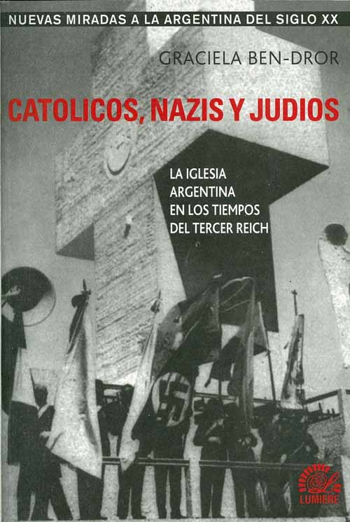

Thread 17: Fr. Coughlin promoting the Jewish-Communist myth and Protocols in the US, 1938-1942
Thread 17: Fr. Coughlin promoting the Jewish-Communist myth and Protocols in the US, 1938-1942
This is a collaborative project to document, in broad historical context, the development and impact of the Jewish-Communist conspiracy theory and the Protocols of the Elders of Zion. To facilitate navigation, the following threads, or historical topics, are identified by a distinctive icon: Click on the right side of the icon to advance to the next entry in the thread; click on the left side to go backwards in the thread. To get started, click on either side of any icon below.
Thread 1: Hitler, Goebbels and the Nazi propaganda theme of Jewish-Communist worldwide conspiracy
The central role of the Jewish-Communist myth as Nazi rationale for war and Holocaust is well known; less known is the similar role the myth played in the Nazi rationale for overthrowing the Weimar Republic in 1922-1923, for stripping Jewish Germans of citizenship in 1935, and for helping Franco overthrow the elected government of Spain beginning in 1936.
Thread 2: Development of the Jewish-Communist conspiracy theory in Germany, 1917-1920
By major writers, publications and organizations based in northern Germany, such as Count Reventlow, the Deutsche Tagezeitung and the Alldeutscher Verband; and fringe proto-Nazi authors in Bavaria such as Dietrich Eckart and Alfred Rosenberg.
Thread 3: Development of the Jewish-Communist myth in Munich-based Catholic publications, 1917-1920
Contrary to some historians, influential voices in Catholic Bavaria publicly explained Communism and the 1917 Russian Revolution in terms other than Jewish influence or control, until a turning point in spring 1920.
Thread 4: Jewish-Communist conspiracy theory in Hungary, 1919-1938
The widely publicized mass murders and persecutions of Jews in Hungary and Poland in 1919-1920 made the power and impact of the Jewish-Communist myth manifest internationally at the formational time of the Nazi Party in Munich.
Thread 5: Jewish-Communist conspiracy theory in Poland, 1919-1920
Thread 6: The Vatican’s stance on the Jewish-Communist conspiracy theory, 1918-1945
As manifested publicly by the Vatican in its daily newspaper L’Osservatore Romano and by the Vatican-supervised journal La Civiltà Cattolica, and as stated privately in reports by high-ranking Vatican diplomats (no position was taken officially during this period in papal encyclicals or other papal statements). The standard historical reference on “The Vatican’s Stance on National Socialism as Reflected in L’Osservatore Romano” by Sandmann does not mention most of the articles covered here.
Thread 7: Jewish-Masonic world conspiracy, predecessor to the Jewish-Communist conspiracy theory
A study in similar modus operandi of conspiracy theorists: (1) Highlight a handful of Jews who are high-ranking Masons (or Communists). (2) Construct an elaborate theory of Jewry controlling Masonry (or Communism) worldwide. (3) Arouse fear and hatred toward the Jewish-Masonic (or Jewish-Communist) threat to Western Civilization, Christianity, etc.
Thread 8: 19th century writings reflected in the first editions of the Protocols in early 20th century Russia
Some of them known to leading historians of the Protocols; some of them not. [forthcoming]
Thread 9: Early promotions of Jewish-Communist conspiracy theory and the Protocols in the United Kingdom
Thread 10: Promoting the Protocols in the United States, 1918-1920
Thread 11: Transnational network promoting the Protocols and the Jewish-Communist myth, 1918-1921
Thread 12: Promoting the Protocols in Germany, 1919-1929
Thread 13: Promoting the Protocols in the UK and Ireland, 1919-1929
Thread 14: Promoting the Protocols in France, 1919-1929
Thread 15: Promoting the Protocols in Italy, 1919-1929
Thread 16: Jewish-Communist myth and Protocols in Argentina, 1933-1945
Thread 17: Fr. Coughlin promoting the Jewish-Communist myth and Protocols in the US, 1938-1942
Thread 18: Promoting the Protocols today
Published under a Creative Commons Attribution-NonCommercial-NoDerivatives 4.0 International License by Stephen H. Galebach. Non-commercial reproduction, use and sharing of the Timeline and linked Translations and Notes are permitted, provided attribution is given to the author and a hyperlink is made to this URL. All translations, unless otherwise indicated, are by Stephen Galebach, who is also responsible for copyright law analysis with respect to the documents.
Circa 1800 Napoleon’s armies set Jews free throughout Europe from ghettoes and legal discrimination, including in the Papal States.
Earliest known allegations of Jewish-Masonic conspiracy behind the French Revolution are made by Abbé Augustin Barruel, a French Jesuit priest.
1815 Following the defeat of Napoleon, the Congress of Vienna re-establishes European monarchies; in the restored Papal States, Pope Pius VII re-institutes the ghettoes of Rome, Bologna and several other cities.
1819 The Hep-Hep riots in Germany, a series of pogroms in Würzburg and then cities in the Rhineland and the north, kill or injure many Jews and loot their property.
June 16, 1846 Giovanni Maria Mastai-Ferretti is elected Pope and takes the name Pius IX; his 31-year Pontificate, the longest on record, witnesses the fall of the Papal States and the forming of the nation of Italy.
1848-1849 A popular movement establishes a democratic republican form of government in Rome and Pope Pius IX flees to Gaeta Castle near Naples.
1850 French troops overpower Roman Republic forces and institute military rule on behalf of the Pope; the following year Pius XI returns to Rome.
1858 Edgardo Mortara, a six year old Jewish boy, is taken from his family in Bologna by Papal States police and taken to Rome.
Pope Pius IX refuses to return Edgardo to his family; the resulting worldwide outrage undermines Austrian and French commitment to uphold Pius IX’s temporal rule.
1859 Austrian troops leave Bologna and the Romagna region of the Papal States, and democratic forces immediately rise up and form new governing bodies.
1869 The Vatican-supervised journal La Civiltà Cattolica equates Judaism and the Masonic movement, describing a “vast conspiracy” by the “Jewish-Masonic sect” to attack the Catholic Church, destroy its religious orders, and steal their property. English translation of article
Historian Lebovitch Dahl has traced Civiltà Cattolica’s Jewish-Masonic conspiracy theorizing back to the journal’s first volume of 1850 and its four-part series entitled “The Hebrew of Verona.” (see Bibliography)Also, in 1869, Jewish-Masonic conspiracy theory appears as a central theme in a book by French writer Roger Gougenot des Mousseaux, who makes dozens of references to prominent Jewish French lawyer Adolphe Crémieux, the head of the Alliance Israélite Universelle and the French Masonic order, in order to insinuate that Jewry controls Masonry worldwide.
Excerpts in French original and English translation from Gougenot’s Le Juif: le judaïsme et la judaïsation des peuples chrétiens (Paris: Plons, 1869)
In 1870, Gougenot’s book receives an enthusiastic review from Civiltà Cattolica.
Sept. 20, 1870 Italian troops breach the walls of Rome, and Papal Zouaves surrender the city to the forces of Italian unification.
This marks the end of the Papal States as an entity under the sovereignty of the Pope.The “Roman Question,” the competing claims of the Pope and the nation of Italy to sovereignty over Rome, persists for many decades until resolved in 1929 by Pope Pius XI and Mussolini.
Jan. 1, 1871 Germany is united under Kaiser Wilhelm I, King of Prussia, and Jews receive rights of citizenship throughout the new German Reich, or Empire.
1871 Jewish-Masonic conspiracy theory is advanced in Germany by the Jesuit priest August Rohling in his book Der Talmudjude [the Talmud-Jew], which quickly sells multiple editions and is translated into French, Polish, Dutch, Hungarian and other languages.
English translation and German original of excerpt, including generalizing from the example of Adolphe Crémieux to a theory of universal control of Masonry by Jewry.
1878 Kaiser Wilhelm I’s Lutheran chaplain Adolf Stoecker founds the Christlichsoziale Arbeiterpartei [Christian-Social Workers Party], one of several German antisemitic parties that have limited electoral success in the late 1800s and decline by the time of World War I.
The name and concept of Christlichsoziale, combining antisemitic propaganda with social programs for workers, are later adopted by Karl Lueger’s political movement in Austria.
Feb. 20, 1878 Vincenzo Pecci, Bishop of Perugia, Italy, is elected Pope Leo XIII and enters upon a 25-year pontificate.
1880 E.N. Chabouty, a French Catholic priest, publishes a book devoted to Jewish-Masonic conspiracy theory: Franc-maçons et Juifs: Sixième âge de l’église d'après l’apocalypse [Freemasons and Jews: Sixth Age of the Church According to the Book of Revelation] (Paris: Société générale de librairie catholique, 1880).
Dec. 1880 La Civiltà Cattolica [Catholic Civilization] commences a series of polemical articles against the Jewish people.
These antisemitic articles extend over a period of more than three years, appearing in approximately half the issues of this journal during that time.Civiltà Cattolica was (and still is) a twice-monthly journal published by a select community of Jesuit priests in Rome, with each issue reviewed by the Vatican Secretary of State prior to publication.
Jan. 1, 1881 Civiltà Cattolica’s first lengthy antisemitic article demands special laws to exclude Jews from citizenship and profitable occupations, and to counteract alleged Jewish financial and economic influence.
The article’s main points are that Jews remain foreigners in whatever country they live; that they universally inspire people to hate them; that Judaism should be understood as a race more than a religion; and that antisemitism should be pursued in a “just” and rational manner, rather than a passionate and vengeful manner.
The main points of the article were, or became, a commonplace in antisemitic propaganda; they appear, for instance, in Hitler’s first known antisemitic writing, his letter to Gemlich in September 1919.
1881 Pogroms, violent attacks and riots against Jews, break out in Russia, the home of approximately half the world’s Jewish population, following the assassination of Czar Alexander II.
1882 The First Aliya begins.
Thousands of Jews emigrate from Russia and Romania to Palestine, with the foundation of settlements such as Rishon LeZion (“First in Zion”) southeast of Jaffa and Rosh Pina (“Cornerstone”) northwest of the Sea of Galilee.Also, more than one million Jews emigrate from Russia to the United States by the end of the 19th century. Tens of thousands emigrate during this time to Argentina, which sends immigration agents to Warsaw and Odessa to recruit Jewish immigrants to the largely unpopulated country. Baron Maurice de Hirsch (from a Jewish Bavarian family living in France, having been ennobled by the King of Bavaria) finances Jewish immigration to Argentina.
Apr. 20, 1884 Pope Leo XIII issues an encyclical entitled Humanum Genus, dedicated to condemning the Freemasons and exhorting Catholics to oppose them as forces of the “kingdom of Satan” arrayed against “the kingdom of God on earth,” the Catholic Church.
This encyclical does not posit any connection between Freemasons and Jews; nor did any of Leo XIII’s encyclicals or other public statements contain any explicit denigration of Jews.
May 15, 1891 Pope Leo XIII issues his most famous encyclical, Rerum Novarum, on capital and labor, which continues to be central to Catholic social teaching through the 20th century.
English version at Vatican website
1894 Gabriel Jogand-Pagès, French anti-Masonic writer, under the pseudonym “Dr. Bataille,” popularizes the notion that secret assemblies of Jews control the Masonic movement.
English translation of French originalCiviltà Cattolica later praises the works of Dr. Bataille and other anti-Masonic works by Jogand-Pagès under his various pseudonyms.
When Jogand-Pagès discloses in 1897 that his writings have been a gigantic hoax, Civiltà Cattolica condemns him but states that much of what he wrote is nonetheless true.
Dec. 22, 1894 Jewish French General Staff officer Alfred Dreyfus is falsely convicted by court-martial of espionage and treason, in the midst of an antisemitic propaganda campaign against him.
1896 Theodor Herzl publishes the book that launches the Zionist movement, Der Judenstaat [The Jewish State].
Herzl, having seen the impact of the Dreyfus Affair as a journalist posted to France, argues that despite best efforts and intentions, Jews are unable to gain acceptance and toleration in any country.Herzl’s book proposes a solution: that Jews establish or re-establish their own homeland. He also proposes that the Holy Places of Christianity and Islam, including the city of Jerusalem, be internationalized and not be part of the Jewish State.
Excerpts in English translation at Jewish Virtual Library
Additional versions of Der Judenstaat available online at Gutenberg
Also in 1896, antisemitic agitation surges in France in reaction against the pro-Dreyfusard movement, and in Austria with the electoral victory of Karl Lueger’s Christian Social Party, also known as the Antisemitic Party.
Aug. 15, 1896 Civiltà Cattolica rejoices in the “victory of the antisemites in the capital” of Austria, stating “the triumph of Dr. Lueger was such as to give the coup de grace to the old mafia of Jewish capitalism, allied in Vienna with Masonic liberalism.”
English translation
Sep. 19, 1896 Civiltà Cattolica praises the works of Jogand-Pagès, Leo Taxil, Dr. Bataille, Diana Vaughan and advertises the upcoming Anti-Masonic Congress.
English translation
Sep. 26-30, 1896 The First International Anti-Masonic Congress is held in the city of Trent, the site of the Council of Trent during the Counter-Reformation in the 16th century.
Jogand-Pagès (Leo Taxil) is invited as a keynote speaker.Translation of Civiltà Cattolica’s Sept. 19, 1896 advertisement for the Congress
Apr. 19, 1897 Jogand-Pagès discloses that his popular anti-Masonic works have been a hoax, at a widely-attended press conference at the Geographical Society in Paris on the Boulevard St. Germain; his hoax includes all the works under the pseudonyms of Leo Taxil, Dr. Bataille, and Diana Vaughan.
May 1, 1897 Civiltà Cattolica reports at length on the Jogand-Pagès-Leo-Taxil hoax.
English translation
May 1, 1897 Civiltà Cattolica takes a stance against Zionism, arguing that a rebuilt Jerusalem at the center of a reconstituted nation of Israel would be unacceptable because it would contradict New Testament prophecies of the destruction of Jerusalem.
English translation
May 15, 1897 Civiltà Cattolica, in a four-page article about the hoax conducted by Jogand-Pagès, states in conclusion that much of what he wrote is nonetheless true.
English translation
Aug. 29-31, 1897 The First Zionist Congress is held in Basel, Switzerland, with Theodor Herzl presiding.
Jan. 13, 1898 Emile Zola publishes "J’Accuse" in L’Aurore in France, leading eventually to the unraveling of the fraudulent treason case against Major Alfred Dreyfus.
Sept. 16, 1899 Civiltà Cattolica writes this about the Third Zionist Congress, noting the Zionists are not claiming Jerusalem:
“What sort of Zionism is this, that from the start renounces Jerusalem and the ancient kingdom of Palestine? Does this not prove that they are betraying themselves and confessing that their intentions were utopian? Why not then completely give up the name Zionism? A race of murderers of God, even if supported by all the anti-Christian sects, feels itself beaten before the fight even begins, beaten by Jesus.”Source: Minerbi, p.97, quoting in English translation from the Italian original.
July 20, 1903 Pope Leo XIII dies.
Aug. 4, 1903 Giuseppe Sarto, Patriarch of Venice, becomes Pope Pius X (1903-1914).
1903 First edition of The Protocols of the Elders of Zion is published in Russia by Sergei Nilus.
Jan. 25, 1904 Theodor Herzl has an audience in Rome with Pope Pius X, who says the Catholic Church cannot support the movement of Jews to Jerusalem. The audience occurs on the Feast of the Conversion of St. Paul (Saul of Tarsus).
February 1908 Hitler moves at age 18 from his family home in Linz, Austria to Vienna, where he lives until moving to Munich in 1913.
Contrary to Hitler’s later assertions in Mein Kampf, he shows no evidence of being an antisemite during his time in Vienna.Source: Ian Kershaw, Hitler 1889-1936: Hubris (1998), pp. 60-64; Brigitte Hamann, Hitler’s Vienna (1999), pp. 347-359.
Jan. 12, 1912 In the last German election before World War One for delegates to the Reichstag, antisemites fare poorly.
Antisemitic parties, declining from their peak two decades earlier, elected only 10 delegates to the 400-seat Reichstag.Antisemitic parties elected no delegates from Bavaria.
The largest number of seats overall were won by the Social Democrats, with the Catholic Center Party second.
Most parts of Bavaria voted Center Party, but in Munich the Social Democrats out-polled the Center.
May 1913 Hitler receives an inheritance from his deceased father after reaching the age of 24, and moves from Vienna to Munich. Kershaw (1998), p.68.
Aug. 9, 1913 Rome newspaper Corriere d'Italia features Jewish-Masonic conspiracy theory, claiming that Freemasonry is a Jewish organization seeking to destroy Italy. Source: Issue 8/219 (Aug. 9, 1913), p.6, cited by Arpaia (2015), p.244.
Dec. 4, 1913 German military forces’ abuse of Alsatians during 1913 leads to the first-ever no confidence vote in the German Reichstag; Chancellor Bethmann-Hollweg remains in office despite losing the vote.
June 28, 1914 Archduke Franz Ferdinand, heir to the throne of the Austro-Hungarian Empire, and his wife Sophie are assassinated in Sarajevo, Bosnia-Herzegovina.
July 28, 1914 World War One begins with Austria-Hungary’s declaration of war on Serbia.
Additional declarations of war follow, resulting in First World War between the “Central Powers,” Germany and Austria-Hungary, and the “Triple Entente,” France, Great Britain and Russia.
August 1914 Hitler volunteers for the Bavarian army. Kershaw (1998), p.90.
Aug. 20, 1914 Pope Pius X dies.
Sep. 3, 1914 Giacomo della Chiesa, Archbishop of Bologna, becomes Pope Benedict XV (1914-1922).
Apr. 16, 1915 Italy enters World War One on the side of the Triple Entente of France, Britain and Russia, against the Central Powers, who now include the Ottoman Empire as well as Germany and Austria-Hungary.
As a condition for entering the war, Italy secures the commitment of the Allies that the Vatican will be excluded from any peace conference.
Oct. 24, 1915 Sir Henry McMahon, British High Commissioner for Egypt, writes Hussein bin Ali, the Sherif of Mecca, that England will support the independence of the Arabs against the Turkish Ottoman Empire.
This leads to the Arab Revolt of 1916, famous for its association with British officer T.E. Lawrence.
Feb. 9, 1916 Vatican responds to a request from leaders of the American Jewish Committee asking the Pope to mediate for their confrères in Europe who are suffering travails in regions ravaged by World War One, especially the regions of the Eastern Front.
The Pope declines to address the specifics of their request but affirms, via the Vatican Secretary of State, general principles of brotherly love and natural law “toward the children of Israel as toward all men.”Translation of response published three months later in Civiltà Cattolica
Italian original with side-by-side English translation: page 358 and page 359
May 16, 1916 Sykes-Picot secret agreement is reached between Britain, France and Russia, to allocate spheres of influence in the event the Allies defeat and divide up the Turkish Ottoman Empire.
France is to have Lebanon, Syria and Northern Iraq; Russia is to have the Istanbul region; and Britain is to have Palestine, southern Iraq and Jordan, with the parties to consider placing the Holy Land under the jurisdiction of an international commission.
Nov. 1916 Cardinal Pietro Gasparri, Vatican Secretary of State, gives detailed instructions to the new Vatican Nuncio to Bavaria, including instructions to develop a strong Catholic press in Bavaria:
“... make every effort to support and propagate the good press.”Source: Hubert Wolf, Pope and Devil (2010), pp. 20-21, quoting in translation from “Instructions for Mons. Giuseppe Aversa, Apostolic Nuncio to Bavaria,” Nov. 1916, Vatican Secret Archives, Munich Nunciature, vol. 257, fasc. 10, fol. 1-108.
Mar. 4, 1917 Munich Archdiocesan newspaper runs a two-page article with characteristic criticisms of Social Democrat Party and its policies, without attacks on Jews.
Mar. 8-12, 1917 (Gregorian Calendar) February Revolution (per Julian Calendar used in Russia) takes place in Russia.
Czar Nicholas II abdicates, resulting in a republic with Alexander Kerensky as the key figure.
first page; second page
Apr. 6, 1917 United States declares war on Germany and enters World War One.
Apr. 9, 1917 German Government transports Lenin and fellow Bolsheviks from their exile in Zurich across Germany in a sealed train car, then across the Baltic Sea to Sweden, and further assists their passage through Finland to St. Petersburg.
A central figure in arranging German Foreign Office approvals is Center Party politician Matthias Erzberger. During spring and summer 1917 Germany enables approximately 400 Communist revolutionaries to get to Russia. Sources: Epstein (1959); Hahlweg (1957).
Apr. 12, 1917 Cardinal Francis von Bettinger, Archbishop of Munich and Freising, dies.
Front page tribute to him in the Munich Archdiocesan newspaperSeveral days later the Vatican Nuncio to Bavaria, Archbishop Joseph Aversa, dies.
Apr. 27, 1917 Telegram from leading Russian Jews to Jacob Schiff, Justice Louis Brandeis, Prof Gottheil, Oscar Straus, Rabbi Stephen Wise, Louis Marshall and Henry Morgenthau, sent via U.S. State Department, from U.S. Ambassador Francis in St. Petersburg to U.S. Secretary of State Robert Lansing, requesting assistance to obtain financing for the new democratic Kerensky government of Russia.
Source: U.S. National Archives and Records Administration (NARA), State Dept. Records Relating to Internal Affairs of Russia and the Soviet Union (microfilm), Roll 117, M 316, State Dept. Decimal File 861.51.
Apr. 29, 1917 General Secretary of the World Zionist Congress, Nahum Sokolow, meets at the Vatican with Eugenio Pacelli, who was Secretary of the Congregation for Extraordinary Ecclesiastical Affairs, reporting to Vatican Secretary of State Gasparri.
Sokolow reports that Pacelli shows him extraordinary courtesy and tells him it is essential that the Zionists define what is meant by the Holy Places, “for on this there are differences of view: some hold that they mean all the country, others - that they are only a few isolated sites. We must know in advance what you demand, in order to avoid conflicts and competition between us...”Source: Minerbi, p.108, quoting in translation from Sokolow’s report to Chaim Weizmann, Apr. 29, 1917.
Pacelli then arranges an audience for Sokolow with Pope Benedict XV. Source: Rychlak, Hitler, p.26.
Apr. 29, 1917 Munich Archdiocesan newspaper features traditional religious anti-Judaism in article on “The Resurrection of Christ.”
German original
Apr. 29, 1917 Count Ernst von Reventlow, a major contributor on military and foreign affairs to the influential national Deutsche Zeitung, writes in that paper that “the influence of the Russian Jews in the revolutionary events of Russia now seems very great and growing.”
May 1, 1917 Sokolow meets with Cardinal Gasparri, who says the area the Vatican claims as Holy Places includes Jerusalem and “branching out from there to Bethlehem and Jericho, and we have demands regarding Tiberias, Nazareth, and possibly also Tabor-Nazareth.”
Minerbi, p.109, quoting in translation from Sokolow to Weizmann, May 1.
May 3, 1917 Chaim Weizmann receives a letter describing a recent meeting in Switzerland of influential Catholics, including Matthias Erzberger, to orchestrate Catholic pressure from major countries to oppose British control of Palestine and make it an internationalized territory under protection of the Pope.
Source: Minerbi, p.114.
May 4, 1917 Nahum Sokolow meets with Pope Benedict XV, who begins by recalling Rome’s destruction of Judea, which the Zionists now propose to rebuild, and concludes by repeating several times, “Yes, I think we shall be good neighbors.”
Minerbi, pp. 111-112, quoting in translation from memos of the meeting made by Sokolow.
May 10, 1917 Letter from Louis Marshall in New York to U.S. Secretary of State Robert Lansing thanking him for meeting with Marshall, Morgenthau and Straus; reporting that the American Jewish leaders in question wish to follow advice from Lansing and defer to U.S. policy in the matter of loans for Russia; and asking Lansing to communicate that decision by telegram to Boris Kamenka at the Don Asov Bank in St. Petersburg.
English original
May 11, 1917 Letter from Alvey A. Adee, Second Assistant Secretary of State, to Louis Marshall, enclosing copy of telegram sent by U.S. Secretary of State to Boris Kamenka in Russia.
English original
May 12, 1917 Telegram is sent from Lansing to Kamenka via U.S. Embassy in St. Petersburg, transmitting message from Schiff, Marshall, Straus, Morgenthau, Wise and Gottheil that they will encourage subscriptions to U.S. Liberty Loans to enable U.S. Government to make low interest loans to the Russian Government, rather than comply with Kamenka’s request.
English original
May 13, 1917 Eugenio Pacelli is consecrated Archbishop by Pope Benedict XV in preparation for his new assignment as Papal Nuncio to Bavaria, Germany.
Two-page article in Munich Archdiocesan newspaper about the consecration ceremonies in Rome, in German: page one; page twoAlso on May 13th, three shepherd children report seeing an appearance of Mary the Mother of Jesus near Fatima, Portugal.
May 26, 1917 Michael von Faulhaber, Bishop of Speyer, Germany, is announced as the new Archbishop of Munich and Freising, Bavaria, Germany.
May 27, 1917 Pacelli in Munich sends Cardinal Gasparri in Rome three detailed reports by German Catholic political figure Matthias Erzberger, in Italian, about German war goals, US intervention in the war, and the German press.
Over the next two years, Erzberger serves as a confidential informant and aide to Pacelli within the German Government, until a breach between the two in late July, 1919.Hundreds of documents by or about Erzberger appear in the German “Pacelli Edition” word-searchable database of Pacelli's Nunciature documents, maintained by the University of Münster, in cooperation with the German Historical Institute in Rome and the Vatican Secret Archive.
May 29, 1917 Archbishop Pacelli is received as Vatican Nuncio to Bavaria by Bavarian King Ludwig III in Munich.
Pacelli also reports this day to Rome that Erzberger has donated a “most beautiful” Benz automobile, “powerful and elegant,” to the Munich Nunciature. Pope Benedict XV responds two weeks later with a letter of thanks to Erzberger. Source: www.Pacelli-Edition.de, Document Nos. 9390, 9517.
June 6, 1917 Pacelli cables Gasparri that Erzberger says Kaiser Wilhelm II will welcome a visit by Pacelli and a peace initiative by the Pope.
Source: www.Pacelli-Edition.de, Document No. 4491.
June 10, 1917 Erzberger reports to Pacelli that the Foreign Minister of Austria-Hungary wants a peace initiative by Catholic authorities without delay, while Erzberger believes the best time for such action will be in September or October.
Source: www.Pacelli-Edition.de, Document No. 362.
June 21, 1917 Erzberger reports to Pacelli that he has initiated an international Catholic appeal for peace, communicated by a Catholic association in Switzerland to the Catholic Bishops of many countries.
Source: www.Pacelli-Edition.de, Document No. 364.
June 26-30, 1917 Archbishop Pacelli meets with German Reich Chancellor Bethmann-Hollweg in Berlin, and with Kaiser Wilhelm at Kreuznach, to discuss a planned peace proposal from Pope Benedict XV.
English translation of report from Pacelli to Gasparri, Italian original and German summary online at www.Pacelli-Edition.de, Document No. 366
July 8, 1917 Munich Archdiocesan newspaper runs a detailed article on Freemasonry, on the 200th anniversary of its founding; no mention of Jews.
German original
July 19, 1917 Matthias Erzberger of the Catholic Center Party succeeds in securing a majority vote in the German Reichstag for a Peace Resolution calling for peace terms without changes in boundaries or economic impositions.
Gasparri cables Pacelli: “In the event that the conditions of the peace note present difficulties, Your Excellency should work in any event to obtain conditions that would truly be acceptable to the other side; otherwise everything is useless... Make the Chancellor reflect ...”Source: www.Pacelli-Edition.de, Document No. 802
July 22, 1917 Pacelli cables Gasparri that newspapers are attributing Erzberger's Peace Resolution to Vatican influence; he leaves it to Gasparri whether to publish a denial; and he assures Gasparri that the Munich Nunciature played no role in the matter.
Source: www.Pacelli-Edition.de, Document No. 6052
July 27, 1917 Pacelli reports to Gasparri on his discussions with the new German Chancellor, Michaelis, about terms of the planned Papal peace proposal and the timing for announcing it.
English translation - Italian original and German summary at online Pacelli-Edition
Aug. 26, 1917 Munich Archdiocesan newspaper article expresses hopes for unification with Russian Orthodox Church in wake of the overthrow of the Czar.
German originalA follow-up article two weeks later expresses the additional hope that the long oppressed Catholic Church in Russia will now experience freedom.
Sept. 4, 1917 Nuncio Pacelli reports to Gasparri about a request from a Munich Rabbi for Vatican help to gain Italian authorization for a shipment of palm fronds in time for the Feast of Tabernacles.
Italian original at www.Pacelli-Edition.de and English translationTwo weeks later, Gasparri responds to Pacelli that “the Holy See obviously cannot support the request.” Italian original at www.Pacelli-Edition.de and English translation
Ten days after that, Pacelli reports that the Munich Rabbi was “perfectly convinced” by the explanations he gave. Italian original at www.Pacelli-Edition.de and English translation
Sept. 16, 1917 Munich Archdiocesan newspaper features a pastoral letter from Archbishop Faulhaber thanking Bavarian King Ludwig III for appointing him, and Pope Benedict XV for investing him, as Munich’s Archbishop.
German original of page one
Oct. 13, 1917 At Fatima, tens of thousands of Portuguese who have trudged through rain to the site of reported appearances of Mary the Mother of Jesus witness the “dance of the sun.”
Source: Lisbon newspaper O Seculo.
Oct. 17, 1917 Pacelli reports to Gasparri about his visit to a prisoner-of-war camp in Germany.
English translation
Oct. 22, 1917 Pacelli reports to Gasparri that former Chancellor Bethmann-Hollweg and current Chancellor Hertling have complained to him about Matthias Erzberger, who has been unique among Center Party figures in serving the Nunciature and the Holy See.
English translation
Nov. 2, 1917 The Balfour Declaration is issued by the British Government:
“His Majesty’s Government view with favour the establishment in Palestine of a National Home for the Jewish People, and will use their best endeavours to facilitate the achievement of this object, it being clearly understood that nothing shall be done which may prejudice the civil and religious rights of existing non-Jewish Communities in Palestine or the rights and political status enjoyed by Jews in any other Country.”
Nov. 7, 1917 Lenin, inserted into Russia by the German Government at the suggestion of Matthias Erzberger, launches the Russian Bolshevik Revolution against the provisional democratic Russian government under Kerensky.
Source: Klaus Epstein, Matthias Erzberger and the Dilemma of German Democracy (Princeton, 1959), pp. 168-169 (Erzberger successfully lobbied the German Foreign Office and Chancellor Bethmann-Hollweg to insert Lenin into Russia).
Nov. 15, 1917 Cardinal Gasparri asks Nuncio Pacelli to influence the German Government to intercede with the Turkish Ottoman authorities, allies of Germany, to protect the Holy Places and Jewish population of Jerusalem.
Source: Rychlak, Hitler, p.27, citing Hesemann and Lapide.Nov. 23, 1917 The Times of London says the Bolsheviks “are adventurers of German-Jewish blood and in German pay.” Quoted in Kadish (1992), p.10.Cf. Gasparri to Pacelli, encrypted telegram, at www.Pacelli-Edition.de, Document No. 2389 - English translation
Nov. 30, 1917 Gasparri cables Pacelli to have the German Government intervene with the Ottoman Empire concerning new regulations affecting marriage for Catholics.
English translation
Dec. 6, 1917 Munich Nunciature forwards to Rome a petition from the Jewish Women’s Association of Berlin for Papal intervention against pogroms in Galicia and Poland.
English translation
Dec. 8, 1917 Pacelli reports to Gasparri that Baron Frankenstein and others claim that Erzberger is not representative of the entire Center Party; yet Pacelli and the Vatican remain dependent on Erzberger as their main source of information in Germany.
English translation
Dec. 9, 1917 Allied forces under British General Allenby capture Jerusalem.
Also on Dec. 9, the Munich Archdiocesan newspaper publishes a joint pastoral letter of the Bishops of Germany. German original, front page and second pageContinuation on front page of Dec. 16th edition and second page and third page
Dec. 14, 1917 Pacelli cables Gasparri that he has received assurances from the German Foreign Ministry that Turkish Authorities will protect the Jewish population and the Holy Places in Jerusalem and Palestine.
English translation
Dec. 18, 1917 Bavarian Ambassador to the Vatican, Baron Ritter zu Groenesteyn, confidentially informs Nuncio Pacelli that the King of Bavaria urgently desires that Archbishop Faulhaber be elevated to Cardinal as soon as possible.
English translationOne month later, Pacelli receives explanations from the Vatican that Faulhaber will not be made Cardinal in the near future, because other German-speaking Churchmen are in line for Cardinal, and Munich is not a Cardinal-Archdiocese. Source: www.Pacelli-Edition.de, Document No. 9610
Dec. 27, 1917 Matthias Erzberger writes to Archbishop Faulhaber in Munich, proposing a plan to reinvigorate German Catholicism and expand its influence in Germany.
English translation
Jan. 9, 1918 Munich Nunciature files document Bolshevik Russia’s disclosure of the 1915 Entente Powers’ agreement to exclude the Vatican from peace negotiations. Italian original at www.Pacelli-Edition.de and English translation
Jan. 12, 1918 The Munich-based Catholic journal Allgemeine Rundschau welcomes recent revolutions in Russia and regime of “Lenin and his Bolsheviks,” in article “Russia Breaks its Chains of Slavery.”
German originalAs in “Milestone 1918” in the previous week’s edition, the Rundschau makes no effort to attribute revolution in Russia to Jews. Second page of “Milestone 1918”
Jan. 20, 1918 The Munich Archdiocesan newspaper describes in detail the organization of Freemason lodges in Germany.
The article notes that Jews are disadvantaged within German Freemasonry because it is led by the Prussian lodges (which historically did not admit Jews).The article thus diverges from the antisemitic conspiracy myth that “the Jews” control Freemasonry.
Jan. 22, 1918 An article in Germania, the Berlin-based organ of the Catholic Center Party, points out the Jewish surnames of Russian Bolsheviks Trotsky and Radek, and falsely claims that Lenin’s true name is Davidovich Zederblom.
Jan. 23, 1918 Count Reventlow in the Deutsche Zeitung presents his conspiracy theory that the “Pan-Jews” (Alljuden) are everywhere the leaders of revolutionary movements, in their quest for Jewish world domination.
Jan. 28, 1918 German military attaché in St. Petersburg, Russia sends a report to the German Admiralty command about the Russian Bolshevik regime, stating: “The entire current government except Lenin are Jews.” This report reached Kaiser Wilhelm II, who underlined the sentence quoted here.
Source: Report of military attaché Baron von Keyserlingk to Chief of Staff, German Navy, Jan. 28, 1918, reprinted in Winfried Baumgart, “Die militärpolitischen Berichte des Freiherrn von Keyserlingk aus Petersburg Januar-Februar 1918,” Vierteljahrshefte für Zeitgeschichte, vol. 15, no. 1 (1967), pp. 96-97.Original German of quoted sentence: “Die ganze jetzige Regierung ausser Lenin sind Juden.”
Feb. 3, 1918 The Munich Archdiocesan newspaper warns about the influence of Freemasonry in Germany, in a way that again diverges from Jewish-Masonic conspiracy theory.
The article states that Jews are not admitted as members in the old-Prussian Great Lodges.
Feb. 4, 1918 Cardinal Secretary of State Gasparri tells Belgian envoy to Vatican that he favors an international commission administering a state extending from Galilee and Nazareth south to Jerusalem and Bethlehem, including all the Holy Places.
Source: Sergio Minerbi, The Vatican and Zionism (1990), p.23, citing Belgian Foreign Office Archives.
Feb. 13, 1918 Kaiser Wilhelm II, at a conference in Bad Hamburg with Chancellor Bethmann-Hollweg and top military commanders Hindenburg and Ludendorff, says: “The Russian people have been handed over to the revenge of the Jews in association with all the Jews of the world. With that Freemasons.”
Source: Protokoll der Sitzung des Kronrats in Bad Hamburg, Feb. 13, 1918, reprinted in Institut für Deutsche Militärgeschichte (ed.), Militarismus gegen Sowjetmacht 1917-1919 (East Berlin, 1967), p. 219.German original: “Russisches Volk der Rache der Juden ausgeliefert sind in Verbindung mit allen Juden der Welt. Damit Freimaurer.”
Feb. 24, 1918 Article in Germania comments that Jews are being favored by the Russian Bolshevik regime while Catholics are being persecuted, and says that a German delegation in St. Petersburg encountered Russian negotiators who were uniformly of Jewish background.
Also on Feb. 24, the Munich Archdiocesan newspaper features a pastoral letter of Archbishop Faulhaber, one of three similar occurrences during 1918. German original
Mar. 3, 1918 Treaty of Brest-Litovsk ends hostilities between Russia and Germany.
Mar. 27, 1918 Matthias Erzberger writes Nuncio Pacelli in positive terms of the role of the Jewish and Polish minorities in Lithuania, saying that legal guarantees for the full development of their economic and intellectual potential will be of “great usefulness” to that new nation.
Italian memorandum at www.Pacelli-Edition.de and English translation
Apr. 4, 1918 German military attaché in German-occupied Ukraine reports to the Chief of the General Staff of the German Army: “Abhorence is universal toward the Jews, who are branded with gusto as the instigators of the Bolshevik horrors...”
Source: Bericht des Hauptmann Fischer zum Chef des Generalstabs des Feldheeres, Apr. 4, 1918, reprinted in Frank Grelka, “Jüdischer Bolschewismus,” in G. Kronenbitter (ed.), Besatzung: Funktion und Gestalt militärischer Fremdherrschaft von der Antike bis zum 20. Jahrhundert (Paderborn, 2006), p. 180.German original: “Allgemein ist die Abneigung gegen die Juden, die mit Vorliebe als Anstifter der bolschewistischen Greuel bezeichnet werden ...”
Apr. 6, 1918 Earliest known embrace of Jewish-Bolshevik myth by influential Catholics in Munich: the Munich Nunciature reports to Cardinal Gasparri that all ministries in the Bolshevik Russian government are headed by Jews and dominated by Jews.
Italian original at www.Pacelli-Edition.de and English translation
Apr. 21, 1918 Munich Archdiocesan newspaper features an article by Baron Theodor von Cramer-Klett on Church-State relations.
German original
June 1, 1918 Gasparri sends Pacelli an explanation of a controversy in Britain over Gasparri’s alleged comments about the government to be set up for Palestine and Jerusalem.
English translation
June 4, 1918 Pacelli conveys a German official’s report that England plans to establish itself in Palestine with the help of Zionism and Jews of the Entente countries.
Italian original at www.Pacelli-Edition.de and English translation
June 24, 1918 Pacelli forwards a recommendation to Gasparri for non-intervention in favor of Jews and other categories of prisoners of war.
English translation
July 2, 1918 Gasparri sends Pacelli a further explanation of his remarks about the future governing of Palestine.
English translation
July 16, 1918 Czar Nicholas II, his wife Alexandra and their children are murdered by the Bolsheviks.
July 19, 1918 Gasparri complains to Pacelli about Germany setting up a “solid public situation” for Jews and Protestants in the new state of Poland.
English translationOct. 8, 1918 The Morning Post in England editorializes that Jews control Bolshevism and anarchism in a destructive “class war against civilization.” Quoted by Kadish (1992), pp. 32-33.
Also on Oct. 8th, Matthias Erzberger asks Pacelli to inform the Pope of his recent appointment as Reich State Secretary and to convey his assurances of continuing devotion to the interests of the Catholic Church. Source: www.Pacelli-Edition.de, Document No. 9530
Nov. 7, 1918 Revolution in Munich.
A mass gathering on the Theresienwiese park in Munich (site of the current-day Octoberfest) leads to the abdication and flight from Munich of Ludwig III, King of Bavaria, and the proclamation of a republic the next day, led by Kurt Eisner with an all-socialist cabinet.
Nov. 9, 1918 Revolution in Berlin.
A republic is proclaimed in Berlin following announcements of the abdication of the Kaiser and the monarchs of the various German States. Friedrich Ebert of the Social Democratic Party assumes the office of Chancellor. Matthias Erzberger of the Catholic Center Party continues to represent Germany as Armistice negotiator.Hitler, as a German soldier, reportedly comments at the time, “Thank God that the kings’ crowns have fallen from the tree. Now we proletarians also have something to say.” Source: M. Kellogg, The Russian Roots of Nazism (Cambridge Univ. Press, 2005), p.219, citing handwritten statement in 1939 by Hitler’s commanding officer in 1918, Hans Mend, in the Bavarian Main State Archive.
Nov. 10, 1918 Munich Archdiocesan newspaper reports on Nuncio Pacelli’s visit to Italian and French prisoners in a German prisoner of war camp.
German original
Nov. 11, 1918 Armistice ending World War One is signed on behalf of Germany at Compiègne in France by Matthias Erzberger at the instruction of German army commanders Hindenburg and Ludendorff.
Pacelli cables Gasparri requesting instructions, because Archbishop Faulhaber has told him that his life is in danger and he should go to Switzerland; Faulhaber also requests the Pope to intervene with President Wilson to stop the Allied blockade of Germany. English translation - Italian original at www.Pacelli-Edition.de, Document No. 6092Faulhaber later writes that he recommended Pacelli go to either Rorschach or Menzingen in Switzerland. German original at www.Pacelli-Edition.de
Nov. 13, 1918 Gasparri cables Pacelli, authorizing him to go elsewhere as advised by Archbishop Faulhaber, namely to Rorschach in Switzerland, in light of the uncertain situation in Munich.
Source: www.Pacelli-Edition.de, Document No. 2449
Nov. 15, 1918 Nuncio Pacelli sends reports to Gasparri on (a) the collapse of the German Empire and (b) the revolution in Bavaria.
Italian original at www.Pacelli-Edition.de and English translation of Pacelli’s report re German EmpireItalian original at www.Pacelli-Edition.de and English translation of Pacelli’s report re Bavaria
Nov. 20, 1918 Shortly before leaving Munich for Switzerland, Pacelli reports to Gasparri how he has declined the Socialist Bavarian Government’s attempt to establish friendly relations with him.
English translation
Nov. 22-23, 1918 Polish troops, after capturing the city of Lvov from Ukrainian forces, carry out a pogrom, killing dozens of Jews, wounding hundreds, burning synagogues, and looting Jewish-operated shops.
Achille Ratti, the Vatican’s emissary in Poland, transmits to Rome a report he received, which proposes that the Lvov pogrom be attributed to popular anger against the Jews’ association with Bolshevism:“We must call attention to the Jews’ role in the Bolshevik movement. We do not want to claim that every Jew is, ipso facto, a Bolshevik. Far from it. Yet we cannot deny the preponderant role that the Jews play in this movement, both among the Polish communists and among the Russians where - with the exception of Lenin - all the Bolshevik leaders are either Polish Jews or Lithuanian Jews.”
Source: Kertzer (2001), p.252, quoting anonymous undated memorandum entitled “Notices sur les rapports pologne-juifs” [Information about the relations between Poles and Jews], and citing documents in the Vatican Secret Archives.
Nov. 28, 1918 Msgr. Schioppa, in charge of Munich Nunciature during Pacelli’s 10-week absence, reports on recent disclosures implicating Germany in causing World War One. English translation
Also on Nov. 28, Schioppa sends Gasparri an urgent request from Munich Archbishop Faulhaber for a Papal decision about how to fill certain parish vacancies that were previously filled by the King under the Bavaria-Vatican Concordat of 1817. English translation
Nov. 30, 1918 White Russian exile Boris Brasol (a/k/a Brazall or Brazol), employed by the War Trade Board in Washington, D.C., becomes the named author of a report on “Jewish-Bolshevism,” promoting the Protocols of the Elders of Zion and claiming that prominent American Jews financed the Russian Revolution and that the 30 leading Bolshevik figures in Russia, except for Lenin, are all Jews masquerading under non-Jewish names.
This privately authored report later comes into the hands of Prince Yusopov, the exiled murderer of Rasputin; England’s Morning Post; the joint head of MI5 and MI6; and the U.S. State Department, which advises the British Government against allowing its publication in the Morning Post.This report is the earliest known promotion of the Protocols in the western world.
The same report then appears, translated into French, in the Catholic publication La Documentation Catholique on March 6, 1920.
Dec. 7, 1918 Munich Nunciature report from Msgr. Schioppa to Gasparri refers to “many Hebrews” in the Bavarian Socialist revolution.
English translation
Dec. 8, 1918 The Munich Archdiocesan newspaper places a positive interpretation on the Russian Revolution, exhorting the faithful to gratitude for the fall of Russian Czarism, which was marked by hostility to Catholicism.
English translation and German originalThis article was consistent with the initial view in the Vatican of the Russian revolutions of 1917, as an opportunity to pursue unity with, and restored Papal authority over, the Russian Orthodox Church once it lost its mainstay, the Czar. Chenaux (2009), pp. 62ff.
Dec. 14, 1918 Msgr. Schioppa reports to Gasparri that Jews and liberals as well as Catholics are joining the Bavarian People’s Party with hopes of restoring public order.
English translation
Dec. 20, 1918 The Munich Nunciature sends Gasparri a protest letter by Baron Theodor von Cramer-Klett against the Catholic political party of Bavaria because it is seeking to appeal to non-Catholics as well as Catholics.
English translation of Cramer-Klett’s letter
Dec. 31, 1918 Gasparri cables Schioppa that the Vatican will only negotiate about the new Bavarian Government's right to appoint parish pastors after a different government in Bavaria is “durably constituted,” and until then the Bishops can act on their own, “possibly by setting up temporary parish administrators.” English translation
Dec. 1918 Cardinal Gasparri expresses his opposition to Zionism to the Belgian Ambassador to the Vatican:
“There is talk of a Jewish State. I do not believe that the big Jewish bankers of England and of the United States will be so unaware of the opinions of many of their faith as to support this plan. Do we not see the Jews at the head of the revolutionary movements in Russia and in Poland?”Source: Minerbi, p.122, quoting Van den Heuvel, Dec. 26, 1918, Belgian Foreign Office Archive.
Jan. 3, 1919 Leaders of Zionist and Arab nationalist movements sign Feisal-Weizmann Agreement.
This Agreement, negotiated at the Paris Peace Conference, provides for implementation of the Balfour Declaration and large-scale Jewish immigration to Palestine, conditioned on the Arabs gaining independence for Arab areas outside Palestine. France later defeats this condition by driving Feisal out of Damascus in 1920, and the Agreement fails as a result.
Jan. 4, 1919 Vatican Nuncio Eugenio Pacelli, during a stay in Rorschach, Switzerland that began in November 1918, considers returning to the Vatican Nunciature in Munich.
Excerpts of letter from Pacelli on this date to Bavarian Ambassador to the Vatican, Baron Otto von Ritter zu Groenesteyn
Jan. 5, 1919 Munich Archdiocesan newspaper says all revolutions are caused by Freemasonry.
Beginning with this issue, the paper is renamed the Münchener Katholische Kirchenzeitung, with a subtitle reflecting its previous name, and ongoing description, as the weekly paper for the parish communities of the Munich area.
Jan. 9, 1919 Achille Ratti, Vatican emissary in Poland, reports to Rome: “One of the most evil and strongest influences that is felt here, perhaps the strongest and the most evil, is that of the Jews.”
Source: Kertzer (2001), p.251, quoting Ratti to Gasparri, Jan. 9, 1919.This report was made in the midst of Polish pogroms that were killing dozens or hundreds of Jews and injuring hundreds or thousands. Cardinal Gasparri had asked Ratti to look into the reported killings of Jews and “take an interest in their welfare.” Kertzer (2001), p.250, quoting Vatican Secret Archives, ANV, b.1991, prot. 439 A 172, encrypted telegram, Gasparri to Ratti, Dec. 22, 1918, ff. 512-513.
Achille Ratti became Pope Pius XI (1922-1939).
Jan. 12, 1919 Bavaria holds election for seats in the Landtag, the Bavarian State parliament.
Election results: 35% for Bavarian People’s Party, 33% for Social Democrats, 14% for German Democratic Party, 9% for Bavarian Farmers League, 3% for Kurt Eisner’s Independent Social Democrats.
Jan. 15, 1919 Communist “Spartacist Uprising” in Berlin is suppressed and its leaders, Karl Liebknecht and Rosa Luxemburg, are killed.
Jan. 19, 1919 Cardinal Francis Bourne, Archbishop of Westminster, visits Palestine.
Excerpt of Jan. 25, 1919 communiqué from this highest-ranking British prelate to Prime Minister Lloyd George, opposing Zionism in Palestine
Jan. 21, 1919 Irish war of independence begins, as Irish republican leaders declare independence from Britain and begin guerrilla warfare.
Jan. 26, 1919 Msgr. Schioppa reports to Gasparri about criticism of the Bavarian People’s Party for being open to Jews.
English translation
Jan.-Feb. 1919 Catholic Center Party’s flagship newspaper repeatedly attacks Bolshevism without blaming or mentioning Judaism or Jews.
Excerpts from Germania following the Spartacist uprising in Berlin, illustrating fierce opposition to Communism by leading German Catholics without Jew-baiting based on Luxemburg’s ethnicity or other Jewish-Communist propaganda themes
Feb. 8, 1919 Pacelli transmits to Gasparri a request by Jews in Frankfurt for Papal intervention against reported pogroms in Poland and Galicia.
English translation
Feb. 11, 1919 Friedrich Ebert becomes the first President of Germany.
Feb. 13, 1919 Philipp Scheidemann, of the Social Democratic Party, becomes Chancellor of the German Reich.
Feb. 15, 1919 Ukrainian troops of Simon Petliura’s nationalist forces begin a series of pogroms in the Kiev area.
During 1919 and 1920 in Ukraine, tens of thousands of Jews are killed, and hundreds of thousands are wounded or made homeless, by the separate military forces of Ukrainian nationalists under Petliura, White Russians under Denikin, and smaller actions by Polish forces.
Also on Feb. 15, La Documentation Catholique, a new French Catholic weekly newspaper, appears, under the auspices of the Good Press [La Bonne Presse] publishing house in Paris. The contents of the inaugural edition include:Article about “The Israelites Claim Palestine” (English translation)Publisher’s statement on Origin and Program (French original)
Mid-February 1919 Hitler begins acting as a Vertrauensmann [trusted agent] of the Bavarian socialist government, in a military unit based in Traunstein, Bavaria.
Source: Ian Kershaw, Hitler 1889-1936: Hubris (1998), pp. 118-120; Kellogg (2005), p.220.
Feb. 21, 1919 Kurt Eisner, President of the State of Bavaria, is assassinated in Munich by Count Anton von Arco auf Valley.
Italian original at www.Pacelli-Edition.de and English translation of Nuncio Pacelli’s report to Rome on Feb. 23 with details of the event and the ensuing political chaos in BavariaAlso on Feb. 21, Alfred Rosenberg writes an article in Dietrich Eckart’s Auf Gut Deutsch [In Plain German] claiming that Russian Bolsheviks have installed an “almost purely Jewish ‘Russian’ government” and that Lenin is merely the “Russian advertisement of the Jewish undertaking.” Source: M. Kellogg, The Russian Roots of Nazism (2005), pp. 227-228, citing Rosenberg, “The Russian-Jewish Revolution,” Auf Gut Deutsch, Feb. 21, 1919.
Feb. 25, 1919 Gasparri replies to Pacelli about the reported pogroms in Poland, minimizing them, and emphasizing how “incredibly numerous” Jews are in Warsaw, and abhorred there, but not persecuted.
English translation
Mar. 2, 1919 Munich Archdiocesan newspaper, Münchener katholische Kirchenzeitung, embraces the Jewish-Masonic myth in a laudatory review of a new book promoting that same myth.
Translation of the reviewTwo weeks later Munich’s extremist völkisch paper, the Beobachter, devoted its lead article to the book.
Excerpts of additional March 2, 1919 Munich Church Newspaper article accusing Freemasons and anti-Catholics of trying to separate Church and State and end Church control of government-funded schools
Mar. 10, 1919 Pope Benedict XV speaks out against the prospect of the Paris Peace Conference granting Jews control over Palestine.
Statement in English translation objecting to Protestant influence in Palestine as well as these words against Jewish control: “For surely it would be a terrible grief for Us and for all the Christian faithful if infidels were placed in a privileged and prominent position; much more if those most holy sanctuaries of the Christian religion were given into the charge of non-Christians.”
Mar. 16, 1919 Cardinal Gasparri says privately: “The danger we most fear is the establishment of a Jewish state in Palestine.”
Source: Belgium’s Envoy to Vatican reporting Gasparri’s explanation to him of the Pope’s remarks of March 10th, quoted in Sergio Minerbi, The Vatican and Zionism (1990), p.131, citing Belgian Foreign Office Archive no. 57/26.Also on Mar. 16, the Munich Archdiocesan newspaper publishes a detailed article analyzing Bolshevism with no reference to Judaism, and describing Lenin as absolute dictator of Russia. English translation
The text of the article is the same as material in the book Bolschewismus published by Father Erhard Schlund, O.F.M. after the fall of the Räterepublik in May 1919.
Mar. 17, 1919 Osservatore Romano defends the Pope against criticisms that his March 10th words were political, saying they were a non-political “heartful cry that the Holy Places may fall into the hands of non-Christians.”
Civiltà Cattolica also addresses the issue in March 1919, criticizing British General Allenby, the military governor of Palestine, for supporting Jews and Anglo-Saxon Protestants to establish a Jewish state in Palestine.Source: Minerbi, p.133. Minerbi observes, “The authorized Catholic responses all note the seeming danger of handing the Holy Places to the Jews, but the real fear was of the foundation of a Jewish republic in Palestine, and the Holy Places argument was employed primarily to engage religious sensibilities and to mobilize the Catholics.”
Mar. 21-22, 1919 In the Republic of Hungary, the government resigns in the face of Entente Powers’ demands to cede Hungarian territories to neighboring countries, and a coalition of Communists and left-wing Socialists seizes power and proclaims a Soviet republic.
Source: Hanebrink, pp. 71-83.The leader of the Hungarian Bolsheviks, Bela Kun, had a father with ethnic Jewish origins, and a Protestant mother; antisemitic propagandists branded his government “Jewish.”
Tyrannical actions of the Hungarian Soviet republic, including a “Red Terror” that killed hundreds, combined with the presence of many Jews in high government positions, stoked Jewish-Bolshevik conspiracy propaganda.
Mar. 23, 1919 Munich Kirchenzeitung says: “It would be extremely painful for the Holy See if a predominant position in Palestine were conceded to unbelievers.”
English translation of “Ecclesiastical Review” section
Mar. 28, 1919 Pacelli reports on the tumultuous political situation in Bavaria, as the head of the majority Social Democratics is unable to form a governing coalition, and Communist elements are vying for power.
Italian original at www.Pacelli-Edition.de and English translationAlso on March 28th, Dietrich Eckart writes an article stating: “All in all it is about Jewish world rule. It began in Russia, now it is our turn.” Source: Kellogg (2005), p.241, quoting in translation from Eckart, “Das Karnickel,” Auf Gut Deutsch, Mar. 28, 1919.
Mar. 30, 1919 Munich Kirchenzeitung explains the “Roman Question”: why the Holy See cannot submit to Italian civil authority without “committing suicide.”
English translation of “Ecclesiastical Review” section
Apr. 2, 1919 Count Reventlow publishes a major Jewish-Bolshevism-capitalism conspiracy article in the Deutsche Tagezeitung, alleging collaboration by English, American and French banks with the Russian Bolsheviks.
Apr. 3, 1919 Bavarian army document refers to Hitler as a Vertrauensmann [trusted agent or representative], a position that involved political education of troops on behalf of Bavaria’s socialist government. Kershaw (1998), pp. 117-118.
Also on April 3rd, Pacelli reports to Gasparri about the parish pastor appointments issue, stating that the new Bavarian Government under Minister President Johannes Hoffmann is undoubtedly legitimate, unlike Eisner’s, but that Hoffmann “harbors a profound aversion to religion” and is not someone the Church can expect to negotiate successfully with. English translation
Apr. 5-6, 1919 British and Belgian diplomats at the Vatican report Cardinal Gasparri’s statement that he prefers the “internationalization of the Holy Places to seeing Jerusalem in Jewish hands.”
Minerbi, p.135, citing foreign office archives
Apr. 6-13, 1919 Soviets-Councils Republic of Bavaria is formed in Munich, and Social Democratic State Government flees from Munich to Bamberg in northernmost Bavaria.
A week later, Pacelli reports about outrages of the new Bavarian government and the Jewish ethnicity of some of its leaders. Italian original at www.Pacelli-Edition.de and English translation
Apr. 14, 1919 Hitler is elected a battalion representative in the Soviets-Councils system of the new Socialist-Communist government. Kershaw (1998), p.118.
Apr. 19, 1919 The Archdiocese of Bamberg sends an appeal to all parish priests in Bavaria to recruit men into the paramilitary Freikorps to combat the Soviets-Councils Republic. English translation
Apr. 20, 1919 Polish troops, after capturing the city of Vilnius (capital of modern Lithuania), carry out a pogrom, killing dozens of Jews, wounding hundreds, and sacking synagogues and Jewish-operated shops.
Apr. 30, 1919 Nuncio Pacelli reports aggressions and threats by Councils Republic forces against him and the Nunciature, also equating Jewish with Bolshevik in reporting the collapse of the “Russian-Jewish-revolutionary tyranny” in Munich.
Also on April 30th, Communists kill a dozen hostages in Munich, including a prince, a countess, and members of the Völkisch Thule Society, as anti-Communist paramilitary forces advance into Munich. May 1-3, 1919 Paramilitary forces enter Munich and overthrow the Soviets-Councils Republic, killing Communists and many civilians unaffiliated with them.
May 3, 1919 The Bavarian Volkspartei newspaper, Bayerischer Kurier, proclaims the Party’s support for the lawfully elected Bavarian Government (headed by Social Democrat Johannes Hoffmann) and calls for a coalition effort across the political spectrum to rebuild Bavaria. English translation of article
The three-party joint program was published two days later in the Volkspartei’s Bayerischer Kurier with regret that the Social Democrats had not yet joined in the program demands and with hope that they would agree. German original On the same day, the “Ecclesiastical Review” section of the Munich Kirchenzeitung reports Czechoslovakia and Hungary forcing priests out of the schools. English translation
Italian original at www.Pacelli-Edition.de and English translation of report to Gasparri
On the same day, the Volkspartei joins with the Democratic Party and the Liberal Party to demand the restoration of order and democratic government. Translation of their joint program demands
May 5, 1919 Pacelli reports an attack on his Munich Nunciature by anti-Communist paramilitary forces.
Italian original at www.Pacelli-Edition.de and English translationThe Vatican Nunciature on Briennerstrasse in Munich, approx. 40m east of the Königsplatz:
May 8, 1919 Bayerischer Kurier proclaims “Death Sentence for Germany” as Versailles Peace Treaty terms first become known; also publishes Munich martial law decree and a lengthy piece on political developments and the Bavarian Volkspartei. English translation
May 8-10, 1919 Gasparri cables Pacelli instructing him to secure the Nunciature archive and go to Switzerland.
Source: Besier and Piombo, The Holy See and Hitler’s Germany (2007), p.21, citing Vatican Archive of Munich Nunciature, pos. 397, fasc. 3, fo. 11r.Cf. encrypted telegrams of May 8th and 10th from Gasparri, at www.Pacelli-Edition.de, Document Nos. 1578 and 2496- English translations
Pacelli stays in Rorschach, Switzerland until August.
May 10, 1919 Munich’s völkisch Beobachter resumes publication, with a lead article denouncing “the reign of Jewish Bolsheviks.”
German original
May 11, 1919 Munich Kirchenzeitung exhorts Munichers to be thankful for the overthrow of a regime that persecuted clergy and Church institutions.
English translationAn article on the same page reports that Freemasonry is trying to combat religion “like alcoholism, tuberculosis or the bubonic plague.” English translation
May 12, 1919 The Bavarian Volkspartei appeal to voters in the local elections emphasizes issues of food, housing, medical care, law and order, and schooling along traditional confessional lines, with free tuition and books for those of modest means, as well as a lead article about Bolshevism. English translation
The same issue contains an exhortation by Fr. Rupert Mayer to reconciliation and bridging the division in the Bavarian people, as well as a report on disarming civilians. English translation
May 1919 Leading Munich-based Catholic journals strongly criticize the fallen Räterepublik without branding it as “Jewish”:
Munich Kirchenzeitung on May 11 and May 18 and May 25Historisch-Politische Blätter für das Katholische Deutschland, May 16 on Social Democracy (German original) and Social Revolution (German original)
Allgemeine Rundschau, May 17 on Jewry in Public Life (German original) and second page thereof as well as Bolshevism and second page
Even the often-antisemitic daily Bayerischer Kurier refrained from antisemitic incitement: German original of front page, May 3, 1919, first day after fall of the Räterepublik
Front pages of subsequent issues discussing Räterepublik, Marxism and Bolshevism:May 5 - “Particularismus und Bolschewismus”
May 9 - “Am Trümmerhaufen der Kommunistenwirtschaft”
May 12 - “Bolschewismus und Marxismus”
May 14, 1919 Pope Benedict XV issues an encyclical on St. Boniface, the 8th century Apostle to the Germans, saying he is present among the German people today as “the representative of the Roman Catholic Church for Germany.” (para. 22)
Summary and excerpts of encyclical In Hac TantaAlso on May 14, the Bayerischer Kurier publishes a notice from Erzberger along with rumors of crisis in the Reich Government in relation to the Versailles terms. English translation
May 15, 1919 Faulhaber writes to the Bavarian Bishops about asking the Pope to intervene with the Entente to soften the Versailles peace terms.
The letter reprints a telegraph from Erzberger asking the Bishops to tell the people the peace terms are unbearable and unfulfillable.
May 16, 1919 Bayerischer Kurier publishes an appeal by the Bavarian Volkpartei for solidarity in the face of the intolerable dictates of the Versailles Peace Treaty, and unity of Bavaria with the Reich in this time of national crisis. English translation
May 17, 1919 Civiltà Cattolica reports on the April 25, 1919 Papal audience with Emir Feisal, the Arab representative to the Paris Peace Conference, who visited Rome during his return trip from Paris.
English translationAlso on May 17, Bayerischer Kurier publishes a sharp critique of Bavarian Socialist leaders for naive past statements of trust in the response of Pres. Wilson and the Allies to Bavaria and Germany adopting democracy. English translation
The same issue of Bayerischer Kurier features a lengthy denial that the Vatican incited Austria-Hungary to proceed strongly against Serbia in 1914. English translation
May 18, 1919 Munich Kirchenzeitung writes about the hostages murdered by the Communist Soviets-Councils Republic and does not focus on the Jewish ethnicity of any of the Communists.
English translation
May 21, 1919 Nuncio Pacelli writes Ambassador Ritter zu Groenesteyn from Rorschach, thanking God for protecting him and hoping he can return soon to Munich.
Excerpt of letter
May 22, 1919 Page-one article in Bayerischer Kurier highlights the problem of relying on mercenary forces and calls for a charismatic, respected military leader. English translation
May 24, 1919 Bayerischer Kurier runs an article denouncing plans to transform Catholic primary schools in Munich into inter-denominational schools and an article reporting on the progress of negotiations for a coalition government in Bavaria.
May 25, 1919 The "Ecclesiastical Review" section of the Munich Kirchenzeitung publishes a telegram from a German Bishop to Nuncio Pacelli asking him to secure the Pope’s intervention to ameliorate the terms of the Versailles Peace Treaty.
English translationThe same issue contains an article on “Munich’s Devastation” by the Soviets-Councils Republic, attributing problems to Bohemianism and foreigners, not Jews.
May 26, 1919 Bayerischer Kurier reports the Social Democratic Party has approved the formation of a coalition government and proclaims that Bavaria “shall once again have a democratic government,” warning that: “Any step away from the ground of the democratic constitutional state leads inevitably into the abyss.” English translation
May 27, 1919 Bayerischer Kurier reports on a series of motions by the BVP in the Landtag, showing the main concerns of the Catholic party in Bavaria are addressing crises of food and shelter, public order, public finances, and care for war wounded, English translation; also with an article detailing progress toward a coalition government.
May 30, 1919 Bayerischer Kurier runs an article by Fr. F.X. Kiefl denouncing the inter-denominational school and an article by George Heim praising Hoffmann for agreeing to a coalition government and insisting the government must be based on democratic, parliamentary principles.
May 31, 1919 Bayerischer Kurier devotes its front page to the announcement of the make-up of the new Bavarian Coalition Government and the details of the joint program agree by the BVP, SPD and Democratic Party. English translation
May 1919 Father Erhard Schlund, O.F.M., a prominent Catholic theologian in Munich, publishes a book on Bolshevism, denouncing it as the product of the “Russian spirit,” not blaming Judaism for Bolshevism or equating the two.
Excerpts in translation
May-June 1919 Hitler is recruited by Captain Karl Mayr to become a nationalist, anti-Communist propagandist in the refashioned Bavarian army.
Source: Kershaw (1998), pp. 121-125. During late summer 1919, Hitler begins his antisemitic propagandizing. He attacks Jews for controlling finance and capitalism in the ensuing months.Hitler receives 20 gold Marks per week for speaking, as well as his regular army pay, until his discharge from the military on March 31, 1920. Kershaw (1998), p.127.
June 1, 1919 Munich Archdiocesan paper, the Münchener Katholische Kirchenzeitung, publishes article “Kommunismus?” calling out Jewish Communists of recent Munich revolutionary governments.
English translationIn the same issue, an article on “Catholics in Bohemia” attacks “liberal democratization of the political activity of Catholics.” English translation
June 7, 1919 Munich’s völkisch Beobachter begins appealing to Catholics with the front-page article “Can a Catholic Be an Antisemite?”
German original: page one and page twoNote: This viciously antisemitic newspaper was named the Münchener Beobachter in 1919, then, beginning 1920, was renamed the Völkischer Beobachter. The Nazi Party gained full ownership and control of the Völkischer Beobachter in late 1920.
June 8, 1919 The “Ecclesiastical Review” section of the Munich Kirchenzeitung tells of an outrage against Catholics in Prague.
English translation
June 10, 1919 Nuncio Pacelli writes Archbishop Faulhaber from Switzerland, asking why the Bavarian People’s Party recently agreed to the cultural policy of the Bavarian Government under Minister President Hoffmann.
English translationGerman original in L. Volk, Akten Kardinal Michael von Faulhabers, vol. 1, pp. 74-75.
June 13, 1919 Faulhaber replies to Pacelli’s letter of June 10th and states his position against compromises agreed by the Bavarian People’s Party as to school issues in the Government’s cultural policy.
English translationAlso on June 13, Father F.X. Eggersdorfer writes Faulhaber, explaining the reasonableness of BVP compromises with Hoffmann, while indicating that he is already undertaking efforts to break the BVP from its coalition with the SPD and Hoffmann. English translation
June 14, 1919 Allgemeine Rundschau publishes an article analyzing the Russian Revolution in detail without reference to Jews.
German original: first page - second and third pages - last page
June 17, 1919 Faulhaber writes Eggersdorfer that it will be hard for Catholics to understand why 16-year-olds cannot make their own decision whether to attend religious instruction, but he stresses the importance of following the Nunciature in Concordat- and Church-State-related questions. English translation
On the same day, Eggersdorfer writes Faulhaber that he has gotten Bamberg Archbishop’s approval for a Bishops’ commission to handle issues related to the formulation of the Bavarian Constitution. English translation
June 18, 1919 Pacelli writes to Faulhaber approving his position as to the schools issue and commending his zeal in defending the interests of the Church. English translation
June 19, 1919 Archbishop Faulhaber writes his fellow Bavarian Bishops about steps to exercise better control and influence in matters of Church-State relations and Bavarian Government cultural policy.
English translationAlso on June 19th, Pacelli sends a report to Gasparri about political dangers to the Church arising from the Socialist government in Bavaria. English translation
June 20, 1919 German Chancellor Scheidemann, facing an ultimatum from the Allies to sign the Versailles Treaty by June 28th or be immediately invaded, resigns.
Catholic Center Party and Social Democratic Party leaders hastily form a new government to sign the Versailles Treaty and avert invasion, with Gustav Bauer as Chancellor and Matthias Erzberger as Vice Chancellor and Finance Minister.
June 21, 1919 U.S. President Woodrow Wilson appoints a commission to investigate reported pogroms by Polish forces that have been reported in the U.S. and international press.
June 23, 1919 White Russian troops begin a series of pogroms in Ukraine.
During 1919 and 1920 in Ukraine, tens of thousands of Jews are murdered, and hundreds of thousands are wounded or left homeless, by the separate forces of White Russians under General Denikin, Ukrainian nationalists under Petliura, and smaller actions by Polish forces.
June 28, 1919 German Government signs the Treaty of Versailles.
Under threat of continued blockade, starvation, and military invasion, Germany gives up extensive territory, agrees to pay massive monetary reparations to the Allies, agrees to strict limitations on the size and power of its armed forces, and acknowledges guilt for its role in starting World War One. New democracies such as Czechslovakia and Poland are set up in Central Europe. The Treaty incorporates the Balfour Declaration, under which Britain will establish a homeland in Palestine for the Jewish people.
June 28, 1919 Allgemeine Rundschau, an independent Catholic journal in Munich, publishes an article discussing the nature of Communism.
Summaries and excerpts of article saying Communism is “carried out with the Russian spirit and with Russian methods ...”
June 29, 1919 Munich Kirchenzeitung runs an article about care for blind and crippled children with photograph of Baron Theodor von Cramer-Klett.
German originals: front page and second page
July 3, 1919 Pacelli reports to Gasparri about Catholic political leaders in Bavaria advocating more strongly for Church interests.
English translationAlso on July 3rd, Achille Ratti (Pope Pius XI, 1922-1938), Vatican delegate to the new nation of Poland since 1918, is named Apostolic Nuncio to Poland and appointed titular Archbishop.
July 4, 1919 Pacelli sends Gasparri a letter he received from the head abbot of the Benedictine Order, Baron Fidelis von Stotzingen, reporting a conversation with a trusted informant in Berlin, Viktor Naumann, who says the German Government is very close to chaos and in grave danger of ending in Bolshevism. Source: Pacelli-Edition.de, Dokt. No. 8531
July 9, 1919 Pacelli reports to Gasparri a grave danger that underground Bolshevik forces in Bavaria will emerge strongly to overthrow the Government. English translation
July 12, 1919 Bavarian Ambassador to Vatican writes a strong letter to Nuncio Pacelli urging upon him the importance of returning from Rorschach to Munich.
English translation
July 15, 1919 Hungarian paramilitary forces, formed in Szeged under ex-Admiral Miklos Horthy, begin a “White Terror” campaign of violence against Jews and others suspected of Communism.
Franciscan priest Istvan Zadravecz consecrates a flag of a paramilitary unit headed by Pal Pronay.Source: Herczl (1993), p.32, citing Pamlenyi (1963), pp. 93-95.
Also on July 15, Pope Benedict XV sends a letter to the German Bishops encouraging them in domestic rebuilding and international reconciliation now that the Versailles Peace treaty has ended the war. This letter is later published in January 1920 by Documentation Catholique in France.
Also on July 15th, Pacelli sends Gasparri a report from Erzberger about the Center Party’s role in the last-minute formation of a new German Government to sign the Versailles Treaty and avert Allied invasion and national calamity. English translation
July 18, 1919 Gasparri sends a letter to the German-American Association exhorting them in the name of the Pope to come to the aid of their suffering brethren in Germany.
This letter is also published in January 1920 by Documentation Catholique in France.
July 25, 1919 German Vice Chancellor Matthias Erzberger speaks in the Reichstag, accusing German militarists and right-wing politicians of bringing defeat and harsh peace terms upon Germany by refusing to negotiate in good faith in 1917 after the Pope’s peace initiative. Source: Epstein (1959), pp. 328-331.
Erzberger’s speech discloses, without Nuncio Pacelli’s permission, certain aspects of Pacelli’s role in the Papal peace initiative of 1917.Pacelli had sent Erzberger’s request for permission to Gasparri by telegraph on July 23, but he used Vatican envoy Luigi Maglione’s telegraph facilities in Bern, 200km from Rorschach, and the resulting delays prevented his timely receipt of Rome’s response.
Maglione sent Pacelli’s July 23 request to Rome by telegraph on July 24 and reported that fact to Pacelli.
Also on July 25th, from Rorschach, Switzerland, Pacelli sends Baron Theodor von Cramer-Klett’s best wishes by telegram to Pope Benedict XV on the Pope's name-saint feastday. Italian original at www.Pacelli-Edition.de Cramer-Klett’s close working relationship with Pacelli and Gasparri becomes increasingly evident in the Munich Nunciature documents of the early 1920s.
Also on July 25th, the Hungarian Soviet government forbids Zionist activity, denouncing Zionism as reactionary. Source: American Jewish Year Book, vol. 22 (1920), p.122.
Also on July 25th, Pacelli reports to Gasparri about a compromise on German school policy reached by the Center Party and the Socialists in the drafting of the Weimar Constitution. English translation
July 26, 1919 Maglione in Bern, Switzerland cables Gasparri again on behalf of Pacelli about Erzberger’s request to disclose information, which he had already in fact disclosed the previous day. English translation
On the same day, Pacelli sends a report to Gasparri about the new Reich Constitution removing Bavaria’s authority to conduct foreign relations, and Hoffmann’s assurance that he wanted to preserved the Munich Nunciature. English translation
July 27, 1919 Munich Kirchenzeitung begins a regular series of “Vatican Review” sections, presenting Church-State issues and Church developments from the Vatican’s standpoint.
English translation of excerptsLike the “Ecclesiastical Review” section of previous months, the “Vatican Review” gives inside information from the Vatican and presents various issues from Rome’s perspective; unlike the earlier section, the “Vatican Review” bears a byline, namely Friedrich Ritter von Lama.
July 28, 1919 Maglione in Bern transmits a telegram to Gasparri on behalf of Pacelli, reporting that Erzberger has made the disclosures despite Pacelli twice instructing him not to do so without Vatican approval. English translation
July 29, 1919 Pacelli in Rorschach drafts a telegram to Gasparri saying that he has issued a press statement declaring that Erzberger did not learn any content of Pacelli’s Aug. 30, 1917 letter from Pacelli. English translation
On the same day, Gasparri sends an instruction to Pacelli to return to Munich forthwith, unless there is serious proximate danger. English translation
July 30, 1919 Maglione in Bern writes to Pacelli, conveying a telegram from Gasparri saying, “it is opportune that You consent to Minister Erzberger publishing the entirety of the indicated docuements.” Fuller English translation
On the same day, Maglione in Bern transmits another telegraph on behalf of Pacelli to Gasparri about the disclosure controversy in Germany. English translation
July 31, 1919 Pacelli sends another message to Maglione in Bern for Gasparri in Rome, responding to an accusation in Germany about insecurity and indiscretion in Papal diplomacy, and repeating that Erzberger did not gain inside knowledge from Pacelli. Fuller English translation
Aug. 1, 1919 Hungary’s Soviet government collapses under an Entente-backed Romanian invasion; Bela Kun and fellow Communist rulers flee.
White Terror attacks ensue, continuing into 1920, killing thousands suspected of Communism, and interning tens of thousands more.White Terror paramilitary units mass murder Jews in multiple towns and villages based on equating Judaism with Communism.
Source: Hanebrink (2006), pp. 83-87.
Aug. 1, 1919 Pacelli reports Erzberger’s disclosures of information without Vatican permission as a “deplorable indiscretion.” Italian original at www.Pacelli-Edition.de and English translation
Aug. 2, 1919 Documentation Catholique publishes lengthy article “The Jewish Power - Jews and Bolsheviks.”
Original French cover and précis of contentsEnglish translation of article
Also on August 2, Maglione in Bern sends two telegrams for Pacelli to Gasparri, responding to accusations of missteps by Papal diplomacy, and repeating that Pacelli deplores the indiscretion by Erzberger, which has nonetheless redounded to the credit of the Holy See. English translation
Aug. 3, 1919 Munich Kirchenzeitung denounces revolutionary activists as “loud ranters” from the East and says that because of matters like the struggle against the Christian school and religious instruction, “the Bavarian people have hardly ever been so unfree and enslaved as in recent times."
English translation
Aug. 7, 1919 Pacelli reports to Gasparri that the new Reich Constitution will apply to Bavaria as well as to the nation, and that Pacelli is returning to Munich on August 8th.
English translationAlso on Aug. 7, a Bavarian priest complains to Pacelli that the German Bishops are giving in to subordination of Church to State while claiming to the world “that the ‘Center Party’ has really once again come to the rescue.” English translation of letter from Fr. Hollweck
Aug. 11, 1919 Weimar Republic Constitution is adopted, providing for parliamentary democratic government, with an elected President and a cabinet headed by a Chancellor (prime minister).
Aug. 14, 1919 Pacelli cables Gasparri conveying Faulhaber’s urgent request to fill vacant parish pastor positions (appointments that still required approval by the Bavarian government headed by the “anti-clerical Minister Hoffmann”).
English translation
Aug. 16, 1919 Gasparri cables Pacelli instructing that the Bavarian Bishops are to appoint temporary administrators for the vacant parishes and not attempt to resolve the presentation issue before there are comprehensive negotiations about the Concordat. English translation
Aug. 18, 1919 Pacelli sends Gasparri the Church-State provisions of the new Weimar Constitution, also commenting on an anti-Church statement by Hoffmann; quoting Msgr. Hollweck’s critique of the Center Party; and making extenuating explanations about the Center Party’s conduct.
English translation of Pacelli’s reportAlso on Aug. 18th, Pacelli submits to Gasparri a request to give Baron Cramer-Klett the Papal title of Privy Chamberlain to the Pope. Source: www.Pacelli-Edition.de, Document No. 5204.
Aug. 20, 1919 Prof. Franz Xaver Eggersberger informs Archbishop Faulhaber of developments in Church-State relations involving Minister President Hoffmann.
English translation
Aug. 22, 1919 Budapest Chief Rabbi seeks help from British mission because all Jews are blamed for Hungarian Soviet government even though most Jews were harshly persecuted by it.
Source: American Jewish Year Book, vol. 22 (1920), p.122.
Aug. 23, 1919 Franz Schrönghamer-Heimdal publishes an antisemitic article declaring a spiritual war between the “eternal Jew” and the “eternal German,” in the Munich-based Catholic journal Allgemeine Rundschau.
German original and English translation of article “World-Upheaval”
Aug. 24, 1919 “Vatican Review” section of Munich Kirchenzeitung reports on conflict in the Church in Czechslovakia instigated by the “Freemasonic” government of that country.
English translation
Aug. 29, 1919 Jews in Hungarian towns of Tolna-Ozera, Enying and Simontornya are driven out; some are tortured and some are killed.
Source: American Jewish Year Book, vol. 22 (1920), p.123.
Aug. 30, 1919 A detailed version of the Jewish-Communist-capitalist conspiracy theory appears in the Catholic journal Allgemeine Rundschau under the byline of Franz Schrönghamer-Heimdal.
English translationThis article remains an outlier, in the universe of the five leading Munich-based Catholic journals, until the same conspiracy theory is promoted by the Kirchenzeitung in April 1920.
Sept. 3-4, 1919 Bavarian Bishops, meeting in their annual conference, adopt instructions for the Bavarian People’s Party on issues of schools, Church-State relations, and Bavarian Constitution.
English translation of Minutes of Bishops Conference
Sept. 6, 1919 Pacelli reports to Gasparri, based on a discussion with a German Reich official about the Democratic Party joining the governing parliamentary coalition, that Erzberger is considered the singular will-power and force of the current Cabinet, but his “imprudence” is “most extremely deplorable.”
Italian original at www.Pacelli-Edition.de and English translation
Sep. 7, 1919 “Vatican Review” section of Munich Kirchenzeitung reports that relations are still strained between the Bavarian Government and Nuncio Pacelli after his return from his long absence.
English translation of article accusing Munich of “childish disregard of the Pope’s representative”
Sep. 12, 1919 Hitler for the first time attends a meeting of the German Workers Party in Munich, in his capacity as a political informant, propagandist, and agent of the Bavarian forces of the German army. Kershaw (1998), p.126.
This “Party” is a small antisemitic group, numbering only several dozen, who meet in Munich beer halls. It is relaunched in February 1920 as the National Socialist German Workers Party and draws a thousand or more to its inaugural meeting at Munich’s Hofbräuhaus Beer Hall.
Sep. 14, 1919 “Vatican Review” section in Munich Kirchenzeitung covers wide range of Church-State issues from many countries, including danger of Church schism in Czechoslovakia, near-shooting of priest in Munich Nunciature by forces suppressing the Soviets-Councils Republic, and exclusion of the Pope from the Paris Peace Conference.
German originalOn Sept. 14-16, the Vienna Morgenzeitung reports many recent attacks on Hungarian Jews, saying 3,000 have been killed.
Sept. 15, 1919 Gasparri informs Pacelli that Pope Benedict XV has agreed to give Baron Cramer-Klett the title of Papal Privy Chamberlain.
Source: www.Pacelli-Edition.de, Document No. 1305.
Sep. 16, 1919 Hitler writes a detailed antisemitic letter to a Herr Gemlich.
The letter is noteworthy because it is Hitler’s earliest known antisemitic writing, it is written in a style different from Hitler’s earlier writings, and it focuses repeatedly on moral and spiritual issues, unlike Hitler’s earlier writings.English translation of Hitler’s letter to Gemlich
English translations of a representative sample of Hitler’s previous writings
English translations of Hitler’s speeches and writings from October 1919 to mid-April 1920
Sept. 18, 1919 American military mission in Vienna reports on mass murders and persecutions of Hungarian Jews and others “on the pretext that they are Communists.” Source: Katzburg (1981), pp. 39-40.
Sept. 20, 1919 Bishop Henle writes Faulhaber and says Hoffmann may go down in Bavarian history as “the author of the revolution.” English translation
Sept. 21, 1919 Munich Catholic Church Newspaper’s “Vatican Review” section comments on the number of Cardinals visiting Palestine in recent months.
English translation
Sept. 23, 1919 Bishop Lingg writes Faulhaber asking that the upcoming Bishops’ pastoral letter not raise the complaint about the funeral oration for Eisner comparing him to Jesus and John Hus. English translation
Sept. 28, 1919 Munich Catholic Church Newspaper’s “Vatican Review” section describes “culture war” against the Church in Czechoslovakia.
English translation
Oct. 4, 1919 Hitler reports to his commanding officer about a meeting of the German Workers Party with 24 persons in attendance at the Sternecker Beer Hall in Munich, and Hitler requests permission to join this party.
Oct. 6, 1919 Pacelli sends Gasparri the Church-State provisions of the new Bavarian State Constitution, also reporting, in the midst of a Bavarian Government crisis, that he has arranged for Catholic Landtag deputies to pressure Hoffmann without Pacelli or the Vatican becoming known as the source of the initiative.
English translation of report
Oct. 7, 1919 Faulhaber meets with Neuffer, an organizer of Bavarian paramilitary forces planning a putsch against Minister-President Hoffmann; Neuffer says they have weapons and ammo of which the government knows nothing, and they want to put Ernst Pöhner and Eugen Knilling into key positions.
The meeting is recorded in Faulhaber’s diary. Faulhaber later meets with the head of the paramilitary group, Georg Escherich, on Jan. 29, 1920 and authorizes priests to conduct flag-blessings for the paramilitary units. The putsch occurs during the night of March 13-14, 1920. Escherich’s first meeting after the putsch succeeds is with Faulhaber on March 14th.Also on Oct. 7th, Pacelli reports to Gasparri that the Democratic Party has joined the governing Reich coalition, on the condition that Erzberger resign the Vice Chancellorship. English translation
Oct. 14, 1919 Pacelli reports to Gasparri that Catholic politicians in Bavaria have refused the Socialists’ invitation to enter a coalition government, thus ensuring that the Socialists bear public blame for unavoidable continuing governmental and economic crisis.
Further, because the Bavarian army is largely Socialist, it is thought that the army “would not offer to defend a Government not presided over by a Socialist against new Communist and Spartacist agitations.” English translation
Oct. 16, 1919 U.S. Embassy in London cables Washington requesting investigation into Jewish-Communist conspiracy allegations.
Text of cableWashington replies the next day that it has no evidence supporting the allegations but will investigate, and that British authorities should be encouraged to prevent publication of the allegations until further notice from the U.S.
Telegram from Alvin Adee at U.S. State Department to Embassy in London, Oct. 17, 1919
Oct. 17, 1919 U.S. Embassy in London sends Washington a five-page French language report claiming that Jews control Russian Bolshevism.
Cover letter from London Embassy to U.S. State Department in Washington, explaining that Sir Basil Thomson (head of MI-5 and MI-6) is preventing publication of the report by the Morning Post pending response from Washington.Attached French original document "Bolchevisme & Judaisme," page 1, page 2, page 3, page 4, and page 5.
Note: This five-page French document, with slight modifications, was later published in Documentation Catholique on March 6, 1920.
Oct. 21, 1919 Communiqué from U.S. Embassy in London to Washington acknowledging the antisemitic and unfounded nature of the “Bolshevism and Judaism” article, and stating “we have the whole thing in cold storage.”
Original communiqué
Oct. 25, 1919 Pacelli reports to Gasparri about negotiations for the Vatican and the German Reich to exchange ambassadors for the first time.
Bavarian Minister-President Hoffmann has proposed that even with a new Vatican Embassy in Berlin, the Nuncio could remain in Munich.Pacelli credits the Center Party for negotiating favorable provisions for the Church in the new German Constitution, and comments on the religious and political power of the Church in Germany. English translation
Oct. 26, 1919 Archbishop Faulhaber gives a major speech on Church-State relations to thousands gathered at the Munich Catholic Congress.
The speech appears on the front page of the Munich Kirchenzeitung - English translation of speechPacelli sends Gasparri a laudatory report about the speech: www.Pacelli-Edition.de, Document No. 328.
Gasparri replies a month later with extensive words of praise from Pope Benedict XV for the “zelante” (zealous) Archbishop and his conduct at the Congress: www.Pacelli-Edition.de, Document No. 5503.
Faulhaber's speech appears in French translation in Documentation Catholique on Jan. 3, 1920.
Oct. 26, 1919 Pacelli cables Gasparri recommending, at the request of the Bavarian government, that Archbishop Faulhaber be made a Cardinal.
Source: www.Pacelli-Edition.de, Document No. 8022.
Oct. 28, 1919 Pacelli reports to Gasparri about the Munich Catholic Congress, praising Faulhaber’s Oct. 26th speech.
English translation of report
Oct. 30, 1919 Pacelli sends Gasparri a lengthy report about his detailed discussion with Minister President Hoffmann on the possible terms for a new Bavarian Concordat.
Pacelli seeks to maintain the government subsidies and privileges of the Church under the 1817 Bavaria-Vatican Concordat, while removing the State's “patronato” right to make appointments to Church offices. English translationOn the same day, Pacelli cables Gasparri about the pressing issue of resolving the appointment process to fill vacant parish pastor positions, in reference to his discussion with Hoffmann. English translation
Nov. 6, 1919 Pacelli reports to Gasparri that Hoffmann, responding publicly to Faulhaber, claims to be against clericalism not religion.
The report refers to Hoffmann’s “pertinaciously anti-religious position and activity.” English translation of report
Nov. 9, 1919 Pacelli reports to Gasparri the formation of a monarchist political party in Bavaria, advising that this development is not opportune. English translation
Nov. 9, 1919 “Vatican Review” section of Munich Kirchenzeitung tells readers of the Allies’ exclusion of the Pope from the Paris Peace Conference, and the serious problems for the Church in Czechoslovakia and Hungary.
English translation
Nov. 10, 1919 Pacelli reports to Gasparri the agreement reached with Minister President Hoffmann about presentation rights for new parish pastor appointments, despite the “sustained difficulties of the persistent regalistic tendencies of this Minister.”
English translation of reportReport of same agreement by Faulhaber to his fellow Bavarian Bishops, in English translation
Nov. 12, 1919 Hungarian Catholic Bishop Ottokár Prohászka publishes an article saying the Hungarian Bolshevik regime had been a “Russian-Jewish invasion” and “racial imperialism.”
Source: Paul Hanebrink, A Specter Haunting Europe: The Myth of Judeo-Bolshevism (Cambridge: Belknap Harvard Univ. Press, 2018), p. 44, citing O. Prohászkar, “Mi, magyarság és kereszténység,” Nemzeti Ujság, Nov. 12, 1919, reprinted in Osszegyujtött munkái, vol. 22: Iránytu, ed., Antal Schutz (Budapest, 1927), 213-215.
Nov. 12, 1919 Gasparri approves Pacelli’s Oct. 30th proposals for content of a new Bavarian-Vatican Concordat. English translation
Nov. 14, 1919 Pogroms in Hungarian towns of Dissel and Topolya kill and injury many Jews. Source: American Jewish Year Book, vol. 22 (1920), p.224.
Nov. 16, 1919 Pacelli transmits to Gasparri the German Bishops’ Aug. 24, 1919 memorandum critiquing some of the church-state provisions of the Weimar Constitution.
Pacelli’s cover letter in translation
Nov. 17, 1919 U.S. State Department official transmits results of investigation into the “Bolshevism and Judaism” article.
Cover Memorandum from T. R. Coward in the Office of the Undersecretary of State to Mr. Poole of the Russian DivisionThe investigation determined that the “Bolshevism and Judaism” article was prepared by an investigator named Brazall (apparently Boris Brasol) working for the War Trade Board.
An attached three-page memo discusses efforts to make the Protocols known in the U.S., saying it is “tremendously unfortunate that this sort of attempt should be made to combat Bolshevism with fraud.”
Page 1, page 2, page 3Page 3 of the memo refers to British authorities who are alleging “a scheme for world dominion” by “various groups of international Jews.”
Original English language article “Bolshevism and Judaism” prepared by Boris Brasol, attached to State Department report:
Page 1, page 2, page 3 (page 4 is missing or not copied in National Archives files), page 5
Nov. 19, 1919 Gasparri asks Pacelli to review and report back on Baron Cramer-Klett’s proposal of special Vatican honors for several Bavarian Catholics. English translation
Nov. 25, 1919 Russian Division of U.S. State Department is instructed by Winslow that it should handle the “Bolshevism and Judaism” matter however they deem fit, in their complete discretion.
Memorandum from Office of the Under Secretary of State
Nov. 28, 1919 U.S. Secretary of State Lansing cables U.S. Embassy London that the “Bolshevism and Judaism” article “has no special validity” and that “it would seem most unwise to give it the distinction of publicity.”
Text of cableNote: Lansing was aware of the innocent conduct of Jacob Schiff with respect to Russia, as seen in the events of April and May 1917. Lansing’s nephew, John Foster Dulles, was an officer at the War Trade Board during World War I, where the author of the Judaism-Bolshevism report was employed.
Nov. 28, 1919 Gasparri informs Pacelli that Pope Benedict XV was very pleased to learn of Munich Catholic Congress and the speech by the zealous Archbishop. English translation
Also on Nov. 28, Pacelli sends Faulhaber the 10 point-list of demands for new Concordat terms that he has already shared with Hoffmann. English translation
Dec. 1, 1919 Jewish-Communist conspiracy theory is denounced as absurd and dangerous by Munich-based author Fritz Gerlich, in a book favorably reviewed in an influential Munich-based Catholic journal.
Excerpt from Gerlich’s book, with English translationGerman original of book review in Historisch-politische Blätter für das katholische Deutschland: first page and second page
Dec. 2, 1919 Bishop Lingg of Augsburg replies to Faulhaber about Pacelli’s 10 points that the Bishops and their commission cannot change them without being blamed for failing to follow Vatican instructions. English translation
Dec. 3, 1919 Bavarian priest F.X. Kiefl writes a letter to Faulhaber urging the importance of upholding the validity of the 1817 Bavaria-Vatican Concordat to provide a favorable basis for negotiations about the new Church-State relationship. English translation
Dec. 4, 1919 Faulhaber replies to Kiefl, agreeing with him, inviting him into the Bishops commission on Church-State issues, and explaining that in order to stand by the 1817 Concordat, the Church has not invoked its right under the Weimar Constitution to appoint freely to its own offices without governmental involvement. English translation
Dec. 6, 1919 Eugenio Pacelli writes his brother Francesco in Rome to request behind-the-scenes support for his efforts to preserve the Einwohnerwehr, an anti-Communist Bavarian citizen army that exists in violation of the Versailles Treaty and that is later disbanded, in 1921, under threat of invasion by the Entente Powers.
English translation and Italian original
Dec. 7, 1919 The Catholic Bishops of Bavaria jointly decree that all Catholics be instructed not to read or allow into their homes the “bad press.”
Translation of Bishops’ Pastoral Letter published in Munich Archdiocese weekly newspaper.Article following the Pastoral Letter, exhorting Catholics to read only the “good press.”
Also on Dec. 7th, Pacelli reports back to Gasparri about Vatican honors recommended for certain Bavarian Catholics by Baron Cramer-Klett and Archbishop Faulhaber. English translation
Dec. 12, 1919 Hungarian newspaper reports Catholic priests promoting Jewish-Communist conspiracy theory and calling for defensive measures against Jews.
Source: Nemzeti Ujsag, Dec. 12, 1919, p.2, cited in Herczl (1993), pp. 31-32 & nn. 103-104.These statements were made at a Budapest convention of the Awakening Hungarians, a movement that incited and supported the White Terror in Hungary.
Dec. 20, 1919 Pacelli sends Gasparri a recommendation that Fr. Bernhard Stempfle be named the ecclesiastical affairs consultant and press agent for the newly planned German Embassy to the Vatican.
English translation of report, Italian original at www.Pacelli-Edition.de, Document No. 985.Stempfle was not named to this position, and became instead Einwohnerwehr, the Bavarian paramilitary force that played a central role in the Kahr putch of March 1920.
Dec. 1919 German translation of The Protocols of the Elders of Zion is sent by its Berlin-area publisher to Munich’s Völkisch Beobachter newspaper staff.
Source: Michael Kellogg, The Russian Roots of Nazism (2008), p.68.German edition with Foreword dated July 1919:
Protocols first German edition
Timeline of the Protocols at the website of the U.S. Holocaust Memorial Museum
Dec. 27, 1919 Pacelli sends a diplomatic note to Bavarian Minister President Hoffmann proposing the opening of negotiations for a new Vatican-Bavaria Concordat. English translation
Dec. 30, 1919 Archbishop Faulhaber meets in Rome with Pope Benedict XV and Cardinal Gasparri; they discuss the political situation in Bavaria among other topics.
Faulhaber’s notes of his audience with Pope Benedict, in English translationFaulhaber’s notes of his audience with Cardinal Gasparri, in English translation
Late 1919 to early 1920 More than a hundred Germans prominent in government, academia, church leadership and other spheres of German life submit statements about antisemitism to be published by the Volkskraftbund (“People Power League”).
The statements are published in a book entitled Deutscher Geist und Judenhass [The German Spirit and Jew-Hatred], which appears in 1920.Statement condemning antisemitism and supporting the Zionist movement from Matthias Erzberger, who is the German Finance Minister and a prominent figure in the Catholic Center Party
Antisemitic statements from two Bavarian Bishops, the only two Catholic Bishops who respond to the People Power League
1920 Radical rightwing organization called Aufbau [Reconstruction] forms its headquarters in Munich.
From 1920 to 1923 its leadership is closely aligned with the Nazi Party. Kellogg (2005), pp. 136-149.Consisting largely of White Russian exiles, the group promotes the Protocols and Jewish-Bolshevik conspiracy theory; associated with the group is Boris Brasol, a Czarist Russian propagandist in the U.S. who sought during the years 1918 through 1920 to have the Protocols published in English, and who created the article “Bolshevism and Judaism” ultimately published in March 1920 in La Documentation Catholique in France.
Aufbau members Fedor Vinberg and Scheubner-Richter influence Hitler’s anti-Communist rhetoric in the early 1920s. See Michael Kellogg The Russian Roots of Nazism (2008), pp. 16, 218.
Jan. 2, 1920 Gasparri sends two cables to Pacelli:
Instructing Pacelli to inform Catholics that the Vatican wants the Bavarian Embassy to remain even after a German Reich Embassy to the Vatican is established, despite rumors that the German Government wants to eliminate the Bavarian Embassy. English translationSaying that Archbishop Faulhaber, visiting the Vatican, asks Pacelli to have the Faulhaber’s Vicar General immediately start publicizing the reasons for maintaining the Bavarian Legation to the Vatican. English translation
Jan. 3, 1920 La Documentation Catholique in France publishes Archbishop Faulhaber’s speech of Oct. 26, 1919.
English translation and French original of speech.Faulhaber was in Rome for nine days beginning Dec. 28, 1919, according to his diary.
Jan. 4, 1920 Pacelli reports to Gasparri about his trip to Berlin and negotiations about opening a Vatican Nunciature there; he also mentions the threatened dissolution of the Einwohnerwehr, which “has succeeded up to now in holding the Communists at bay.”
English translation of reportOn the same day, Pacelli sends Gasparri two cables about preservation of the Bavarian Legation to the Vatican and Pacelli's note to Hoffmann of Dec. 27th about Concordat negotiations
Jan. 5, 1920 Pope Benedict XV makes Faulhaber a Papal Throne Assistant, a title just lower than Cardinal. English translation of Gasparri’s notice to Pacelli about this honor
Jan. 8, 1920 Pacelli cables Gasparri asking whether the Bavarian Nunciature will continue to exist once Reich and the Vatican establish diplomatic relations. English translation
Jan. 9, 1920 Hungarian White Terror forces abduct and kill dozens of Jews in Kecskemét, Hungary, on charges of Communism.
Source: American Jewish Year Book, vol. 22 (1920), p.224.Also on Jan. 9, Pacelli cables Gasparri for instructions concerning the preservation of the Bavarian Legation, prior to a trip by Minister President Hoffmann to Berlin. English translation
Jan. 11, 1920 Nuncio Pacelli reports to Rome on the nature of the Bavarian People’s Party and its secession from the Catholic Center Party of Germany.
Italian original at www.Pacelli-Edition.de and English translationAlso on Jan. 11, the Munich Archdiocesan newspaper, the Kirchenzeitung, publishes an article on “Bolshevik Hatred of Christ and Christians.” English translation
Jan. 16, 1920 Hungarian government begins deporting Galician Jews en masse. Source: American Jewish Year Book, vol. 22 (1920), pp. 224-225.
Jan. 17, 1920 Documentation Catholique publishes two Vatican documents from mid-1919 focused on German Catholics and German-American Catholics:
Pope Benedict’s letter of July 15, 1919 to the Bishops of Germany
French original of cover and contents with Pope Benedict XV’s letter to the German Bishops and Cardinal Gasparri’s letter to German-American Catholics, as well as materials from the French Bishops
Jan. 20, 1920 Bavarian Minister President Hoffmann writes Pacelli that the Bavarian Government is prepared to negotiate a new Concordat with the Vatican. English translation
Also on Jan. 20, Bishop Lingg of Augsburg writes Faulhaber advising against the Bishops issuing a protest as to Church-State issues because the Government would take it as merely about losing State subsidies. English translation
Jan. 23, 1920 In Hungary, newly formed National Central Party denounces the “widespread idea that the Jews are to be held collectively responsible for recent events.” Source: American Jewish Year Book, vol. 22 (1920), p.225.
Jan. 24, 1920 Pacelli sends Gasparri a copy of Faulhaber’s pastoral letter for Lent 1920 denouncing democracy, telling Bavarian Catholics that the German revolution is at root not a political issue but a religious and moral issue of Kulturkampf against the Church, conducted by enemies who are forging ever new weapons, and that Catholics must be on guard and not let their weapons get rusty.
English translation of key excerpts
Jan. 27, 1920 Gasparri sends Pacelli the Vatican’s position and fallback position for negotiating with the German Government as to an exchange of ambassadors, Berlin and Rome, and the maintenance of the Nunciature in Munich.
English translation of Gasparri’s instruction to Pacelli
Jan. 28, 1920 L’Osservatore Romano begins a series of front page articles on “The Bolshevik Menace,” saying the Russian Bolshevik Army is preparing to invade Poland in March or April.
Headlines and summaries of such articles appearing on nine days from Jan. 28 through Feb. 26
Jan. 28, 1920 The Protocols of the Elders of Zion, first German edition, is advertised in the Nazi-oriented Munich newspaper Völkischer Beobachter [Völkisch Observer], with a small ad in the paid advertising section of the paper.
Jan. 29, 1920 Faulhaber meets with Georg Escherich, head of the Einwohnerwehr, and agrees that priests can discreetly conduct flag-blessing ceremonies for Einwohnerwehr paramilitary units.
Source: Escherich Diary, 13-14 March 1920, BayHStA V, NL Escherich, 6, Tagebuch, cited in Zuber (2015), pp. 153-154.Fr. Bernhard Stempfle begins to play a leading role in the Einwohnerwehr as publicist, recruiter, organizer, and high level negotiator.
Source: Einwohnerwehr leader Rudolf Kanzler’s book Bayerns Kampf gegen den Bolschewismus: Geschichte der bayerischen Einwohnerwehren (Munich: Parcus, 1931) described specifics of Fr. Stempfle’s work with the Einwohnerwehr in February, March, April, and May 1920 in Austria and Bavaria.
Jan. 31, 1920 Documentation Catholique publishes an article recalling Rome’s conquering of Jerusalem and dispersal of the Jewish people.
The article calls for Christians and Muslims to unite against Zionism and the “invasion” of Palestine by “Jewish floods from Romania and Russia,” while Christians mobilize public opinion worldwide.French original of cover and contents including this précis: “Zionism. - Grave problems instigated in Palestine by Jewish immigration ... The Jewish invasion in Jerusalem... Purchases of land... Precautions to take today and tomorrow: create a public opinion against Zionism, in union among Christians and between Christians and Muslims, etc.”
Feb. 1920 The Protocols of the Elders of Zion appears in English for the first time, published by Eyre & Spottiswoode, publishers for the British Crown.
Sharman Kadish (1992), p.31, says the significance of this translation “can only be grasped against the background of British intervention on the side of the White Russians in the Civil War,” as it was White Russian officers who brought the Protocols to the west, and the translator and publishers were in highly respectable English circles.Historians note that the English version of the Protocols initially received no attention in the British press. Kadish, ibid.; Poliakov (2003), vol. IV, p.210.
Feb. 1920 The Munich-based Jesuit monthly Stimmen der Zeit publishes an article calling for a strong national leader and emphasizing the importance of training persons for such a role.
English translation
Feb. 1920 Czarist Russian emigré in America, Boris Brasol, publishes book Socialism vs. Civilization.
Its lengthy discussions of Socialism, Marxism and Communism, and their current-day threat to the U.S. and western civilization, contain no claims that Judaism is responsible for these movements or that Jews are in control of Russian and international Communism.Title page of book and next page showing publication dates
Feb. 4, 1920 Nuncio Pacelli, on behalf of the Vatican, transmits to the Bavarian Government a 19-point proposal for a new Bavaria-Vatican Concordat.
Source: Lydia Schmidt, Kultusminister Franz Matt (1920-1926) [Education Minister Franz Matt] (2000), pp. 197-198. German original at online Pacelli-Edition, Document No. 6617
Feb. 7, 1920 Documentation Catholique publishes an address of Pope Benedict XV to the Nobility of Rome (pp. 178-180).
Topic headings include the homage of the nobles to the Pope and “The Indefeasible Obligation: Love of Neighbor, Even Your Enemy of Yesterday.”Neither in this issue nor any other during 1920 does Documentation Catholique address the conflict between loving neighbor and inciting public opinion against Zionism and Jews.
This issue contains a lengthy post-election review of French press and political discussion about Bolshevism, Socialism, collectivism and radicalism, all of it critical, yet none of it accusing Jews or Judaism of responsibility for these movements. (pp. 195-213)
One article is quoted mentioning Jews, not in connection with left-wing movements, but rather “Bolsheviks of the right: war-profiteers, Jews, ... plutocrats ... whose power is money.” (p.199)
Feb. 8, 1920 Winston Churchill publishes an article claiming that other than Lenin, the leaders of Russian Bolshevism are Jewish, and expressing the desire that Zionism and/or assimilation and nationalism prevail among Jews worldwide, rather than Bolshevism.
W. Churchill, “Zionism versus Bolshevism: A Struggle for the Soul of the Jewish People,” Illustrated Sunday Herald, Feb. 8, 1920
Feb. 9, 1920 Gasparri cables the Munich Nunciature saying that Pacelli’s mother is gravely ill and the Pope allows him to travel to Rome. Source: Pacelli-Edition.de, Dokt. No. 9891
Feb. 10, 1920 Msgr. Lorenzo Schioppa, Auditor of the Munich Nunciature, sends Faulhaber the 19 points that were submitted to Hoffmann on Feb. 4 and observes: “Frankly, whether the recommended points will be attainable is another question and hardly can be hoped; but nevertheless one must ask for what is fair and right.” English translation
Feb. 11, 1920 Nuncio Pacelli travels to Rome, arriving shortly after his mother dies, and does not return to Munich until the night of April 11-12.
The online Pacelli-Edition contains Gasparri's telegram of Feb. 9 authorizing Pacelli to travel to Rome, and the Nunciature's telegram explaining the next available train leaves on Feb. 11.
Feb. 14, 1920 Cardinal Gasparri instructs Pacelli to make clear to the Bavarian People’s Party leadership and Bavarian clergy that the Vatican does not favor the secession of Bavaria from the German Reich, stating that “it is the constant principle of the Holy See to stay remote from all purely political questions.” Italian original at www.Pacelli-Edition.de and English translation
On the same date, Schioppa sends Gasparri Baron Cramer-Klett’s report of his discussions with government figures in Berlin about establishing diplomatic relations with the Vatican. Italian original at www.Pacelli-Edition.de. and English translationAlso on Feb. 14, La Documentation Catholique in France, quoting from L’Osservatore Romano of Nov. 8, 1919, tells Catholics it is “treason” to vote for Freemasons or Bolsheviks in parliamentary elections. English translation and French original of cover and précis
Feb. 15, 1920 The Minister-President of Bavaria, Johannes Hoffmann, responds to Pacelli in a discouraging fashion, stating that the Vatican’s Concordat proposals will need to be “thoroughly reviewed and evaluated,” and that this will take considerable time.
Hoffmann and the Vatican disagree over Catholic control of government-funded schools, among other issues. See L. Schmidt, above.
Feb. 15, 1920 Munich Kirchenzeitung issue no. 7 contains:
An article entitled “The Old and New Jerusalem” describing God’s fearful judgment on the Jews and their city of Jerusalem, formerly loved by God.
An article saying Freemasonry strives worldwide to take political power, overthrow monarchs, and destroy the Catholic Church, and it is permeated with Jewry and “terrorizes everyone and binds them in chains.”
A set of mandatory instructions entitled “Archbishop’s Decrees” binding on Catholics in the Munich Archdiocese
A report that the “Moslem and Christian Arabs living in Palestine have protested in a memorandum to the Pope against England’s Jew-friendly policy in the Holy Land.”
Feb. 16, 1920 Faulhaber writes the Bavarian Ambassador to the Vatican about his “fight to the finish” to preserve Bavaria's Vatican Embassy as well as the Vatican's Nunciature in Munich. English translation
Feb. 18, 1920 Faulhaber writes Schioppa that Hoffmann will try to establish more onerous conditions for Bavarian dissolution of the State Church via the Reich Government than he could achieve in Bavaria, creating an “exceedingly serious” situation. English translation
Feb. 21, 1920 Einwohnerwehr leaders Escherich and Kanzler, along with Fr. Bernhard Stempfle and Bavarian Volkspartei Landtag delegate F.X. Zahnbrecher, meet with Gustav von Kahr. Source: Kanzler (1931).
Also on Feb. 21, Documentation Catholique gives increased coverage to sources in Germany, including a Bavarian Catholic association, with propaganda about “the fanatical and ferocious offensive directed against them [Christians] by militant Judaism, that eternal enemy of our faith and the doctrines of Christ our Savior and our God!” French original
Feb. 24, 1920 Public launch of the National Socialist (Nazi) German Workers Party by Hitler and others in the Festival Hall of the Hofbräuhaus in Munich.
Nazi Party’s 25-point program announced by Hitler at the event
Feb. 25, 1920 Nazi-oriented Völkischer Beobachter [Völkisch Observer] prints brief coverage of Nazi launch event and two longer articles about Bolshevism and Jewry.
Article “A Jewish Secret Document” with similar approach, but different content, to the Protocols. Known as the “Zunder forgery,” this document was published in English in the Sunday Times of London on April 4, 1920.Article “Bolshevism and Jewry”
Kellogg (2005), p.232 describes an article by Dietrich Eckart in February 1920, in his journal In Plain German, quoting this spurious “Jewish Secret Document” to show identity of Judaism and Bolshevism.
Feb. 26, 1920 Faulhaber writes two missives about key Church-State issues centered on the imminent “dissolution” of state established churches in Germany, and the restructuring of schooling:
To Cardinal Bertram, head of the Fulda German Bishops Conference: English translationTo the Bavarian Bishops: English translation
Feb. 28, 1920 Gasparri instructs the Munich Nunciature that Baron Cramer-Klett’s recommendation of Feb. 14th, to accept the German Government’s proposal for diplomatic relations with the Vatican, is acceptable.
English translation
Feb. 29, 1920 Faulhaber’s letter to Prince Wilhelm von Hohenzollern-Sigmaringen expresses his “Bavarian lamentations” about current affairs, including the “senile ungraciousness” of the Government, the “terrorism of the parties,” an expected Bolshevik uprising next-door in Austria, and the need for an “external grace” to rescue Germany from free-fall.
English translationAlso on Feb. 29, the Münchener Katholische Kirchenzeitung begins a new section entitled “Aus Welt und Kirche” [From World and Church]. This issue contains a short article on “The Terrors of Bolshevism in Russia.”
The same issue describes the consolidation of various Catholic newspapers, including Munich’s Katholische Kirchenzeitung, under the Catholic Press Association of Bavaria as their common publisher and manager.
Mar. 1, 1920 Bishop Lingg of Augsburg writes Faulhaber that if the Bavarian Government tries to give the Church her walking papers, the Government will receive its own walking papers. English translation
Mar. 5, 1920 Msgr. Schioppa, in charge of Munich Nunciature in absence of Pacelli, writes Cardinal Gasparri about refuting reports that the Vatican favors the secession of Bavaria from Germany.
Italian original at www.Pacelli-Edition.de, Document No. 331. - English translation
Mar. 5, 1920 Alfred Rosenberg, White Russian émigré and Nazi ideologist, publishes article in Dietrich Eckart’s Auf Gut Deutsch [In Plain German] referring to “Jewish terror” in Russia.
Kellogg (2005) translates an excerpt of this article: the “most unscrupulous Jewish terror” in Russia “ruins the economy and industry; when all is said and done, it works for stock market speculators and big capitalists.” (p.223.)
Mar. 6, 1920 Documentation Catholique [“Catholic Documentation”] in France publishes Jewish-Bolshevism article previously peddled unsuccessfully in Britain and the U.S. (see Oct-Nov 1919 entries above).
English translation of article “The Jews are the Principal Factors in Worldwide Bolshevism”Cover of Documentation Catholique with summary of article:
La Documentation Catholique
Also on this date, the Munich Nunciature reports to Cardinal Gasparri that Baron Cramer-Klett has been informed of the Vatican’s intentions concerning diplomatic relations with Germany. English translation
Mar. 7, 1920 Munich Kirchenzeitung says the Pope has “implicitly condemned” the Versailles Treaty.
English translation of “Vatican Review” sectionThe same section mentions French protectorate over the Holy Land as a competitor to Britain’s promotion of a Jewish state in Palestine.
The “Vatican Review” section also describes a “ruthless culture war” waged against the Church by the “Czech powers that be.”
Mar. 9, 1920 Nuncio Pacelli replies “sharply” to Bavarian President Hoffmann about Bavaria-Vatican Concordat.
From Rome, Pacelli states that if Bavaria seeks to violate the Church’s rights in the school question, he will not be able to defend Bavaria against French efforts to include a former portion of Bavaria (now in the Saar district under League of Nations governance) in French diocesan control under a French Catholic Bishop. See L. Schmidt, p.198.
Mar. 10, 1920 Faulhaber writes Ambassador Ritter zu Groenesteyn praising Pacelli, hoping he is not moved [presumably to Berlin], and criticizing the Bavarian Government. English translation
Also on March 10, Faulhaber writes Bertram naming the Bavarian members for a joint commission, priests Kiefl, Harth and Stahler, also accusing Hoffmann of a “sneaky maneuver” to change Bavaria's schools into non-denominational schools. English translation
Mar. 13-17, 1920 Nationalists and monarchists attempt unsuccessfully to overthrow the Weimar Republic, in the “Kapp Putsch.”
L’Osservatore Romano’s coverage in English translationDetailed account by the Auditor of the Munich Nunciature dated March 25, in Pacelli’s absence
Mar. 14, 1920 Allies of the Kapp Putsch stage a successful coup in Bavaria and install Gustav von Kahr, a monarchist, as head of the Bavarian government; Franz Matt becomes Bavarian Minister of Education and Cultural Affairs, and Ernst Pöhner becomes head of police.
L’Osservatore Romano’s brief report of the coupGeorg Escherich, head of the Bavarian Einwohnerwehr and a central figure in the Kahr Putsch, has his first meeting on March 14th after the Putsch succeeds, with Archbishop Faulhaber. Source: Escherich Diary, 13-14 March 1920, BayHStA V, NL Escherich, 6, Tagebuch, cited in Zuber (2015), pp. 153-154.
In the aftermath of the Kahr Putsch, extremist rightwing elements, including General Erich Ludendorff, various White Russian emigrés, and Kapp’s military commanders, including Capt. Hermann Ehrhardt, find refuge in Munich.
A violent counter-revolutionary group called Organization Consul, also known as Feme, forms its headquarters in Munich.
Mar. 13-15, 1920 Lorenzo Schioppa, the Auditor of the Munich Nunciature, sends Gasparri a series of five cables about the Kapp Putsch and the situation in Munich. English translations of the cables: first - second - third - fourth - fifth
Mar. 15, 1920 Auditor Schioppa sends Gasparri a report about the Kapp Putsch. English translation
Mar. 16-17, 1920 Schioppa sends Gasparri a series of three cables about developments in Munich. First cable - second - third
Mar. 18, 1920 Schioppa sends Gasparri a detailed report about the Kapp Putsch and its failure. English translation
Mar. 19, 1920 Schioppa sends a further report to Gasparri about the Kapp Putsch and the change of government in Bavaria. English translation
Mar. 25, 1920 Schioppa reports to Gasparri on the Kapp Putsch and its aftermath. English translation
On the same day Schioppa reports that the Bavarian People’s Party, by a 68-60 vote in the Landtag, has succeeded in overturning Hoffmann’s school policy. English translation
Mar. 26, 1920 Schioppa cables Gasparri that the Reich Government requests the Vatican’s agreement to the appointment of Diego von Bergen as the first Ambassador from Germany to the Holy See. English translation
Mar. 27, 1920 Hermann Müller of the Social Democratic Party becomes Chancellor of the German Reich.
Also on March 27th, Documentation Catholique publishes a report by English Cardinal Bourne about his fact-finding mission to Palestine and the Middle East.
Apr. 2, 1920 In Toka, Hungary, White Terror forces attack and kill 300 Jews. Source: American Jewish Year Book, vol. 22, p.226.
Apr. 3, 1920 The leading Catholic nobleman of Germany, Prince Alois von Löwenstein, states that while the Center Party has been rejecting all antisemitism, reaction against Communist revolution associated with Jews, namely the Munich Räterepublik, justifies efforts to remove “the influence of racially foreign elements.”
Translation of Löwenstein's article in the Allgemeine Rundschau.Also on April 3rd, Documentation Catholique publishes a letter of Cardinal Gasparri, Vatican Secretary of State, along with a reprinted article from L’Osservatore Romano.
Apr. 4, 1920 The “From World and Church” section of the Kirchenzeitung attacks Austrian Jewry as “a great danger to the Austrian Catholic Church.” English translation
Also on April 4th, the Sunday Times of London publishes an English translation of the Jewish-Bolshevik “secret document” that appeared in the Völkischer Beobachter on Feb. 25, 1920.
Apr. 4-7, 1920 Violent attacks by Arabs against Jews in the Jewish Quarter of the Old City of Jerusalem result in several deaths and hundreds of injuries.
Apr. 10, 1920 Documentation Catholique publishes a joint pastoral letter of the 101 Archbishops and Bishops of the United States.
Apr. 10, 1920 Allen Dulles, as a young U.S. State Department special envoy in Germany, writes a situation report from Munich describing the political-religious situation of Bavaria.
Summary and excerpts
Apr. 11, 1920 The Munich Katholische Kirchenzeitung promotes the Jewish-Communist myth, endorses the Protocols of the Elders of Zion, and arouses fear and hatred in an article entitled “Jewish Imperialism.”
English translation The article cites and summarizes the Jewish-Bolshevism article that appeared in Documentation Catholique on March 6th.The same page features articles on Communism in Hungary and in the United States and Mexico.”
During the night of April 11th, Eugenio Pacelli arrives back in Munich after a two-month stay in Rome following the death of his mother. His telegram to Gasparri reporting his safe arrival is in the online Pacelli-Edition, Document No. 6779.
L’Osservatore Romano gives special attention to Germany on this day, with 17 headlines and short news items about Germany on the front page.
Italian original top part of page, two right-side columnsItalian original bottom part of page, three right-side columns
Apr. 14, 1920 Pacelli cables Gasparri saying that Faulhaber implores Vatican intervention with the Entente to prevent forced dissolution of the Einwohnerwehr, “our only defense against the Bolshevik menace.” English translation
Apr. 15, 1920 Poland invades Ukraine and advances rapidly toward Lvov and Kiev.
Apr. 16, 1920 Dietrich Eckart writes an article in his journal Auf gut Deutsch about sadistic “Jewish Bolshevik” rule in Russia. Kellogg (2005), p.232.
Apr. 18, 1920 L’Osservatore Romano publishes a front-page story praising the Catholic press of Bavaria, and holding it up as an example for other countries.
Translation of article “The Catholic Press in Bavaria,” which includes mention of the Munich KirchenzeitungThe article emphasizes the importance of the Catholic press in Bavaria for the “Christian education of the people.”
Apr. 18-30, 1920 L’Osservatore Romano publishes a series of articles about the San Remo Conference.
At this conference, the Allies decide to give Britain a mandate to govern Palestine for the purpose of establishing a Jewish homeland there, and to give France a mandate to govern Syria and Lebanon.The Vatican newspaper describes lobbying by Zionists to establish a Jewish state in Palestine, including a message from the Belgian Zionist Federation to British Prime Minister Lloyd George expressing the
conviction that it is a matter of urgency to settle definitively the political future of Palestine and to affirm the mandate of Great Britain under the control of the League of Nations, so that the restoration of Palestine as a national Jewish entity can be implemented without further delays, in conformity with the commitments assumed toward the Jewish people by Great Britain, by Italy and by the other Allied powers supported by the United States of America in conformity, in sum, with the ardent and irresistible will of the entire Jewish people.The articles contain no criticism of the Allies or the Zionists.
Translated headlines and details of articles from L’Osservatore Romano
Apr. 22, 1920 Nazi-oriented Völkischer Beobachter in Munich devotes its entire front page to the Protocols of the Elders of Zion.
English translation of banner headline, intro paragraph, and section headingsGerman original of page one
Apr. 25, 1920 Sir Herbert Samuel accepts the post of British High Commissioner for Palestine, appointed by Prime Minister David Lloyd George.
Apr. 26, 1920 Völkischer Beobachter publishes the “Jewish Imperialism” article with same text that appeared in Munich Kirchenzeitung on Apr. 11, 1920.
German originalThe “Jewish Imperialism” article appears alongside an advertisement “urgently recommending” the Protocols and identifying a bookstore in Munich where they can be purchased.
Immediately below is an advertisement for an antisemitic book by Schrönghamer-Heimdal with an endorsement from Dietrich Eckhart.
Apr. 27, 1920 Hitler incorporates the Jewish-Bolshevik theme for the first time into one of his speeches.
English translationEnglish translations of excerpts of Hitler speeches on Jewish-Bolshevik conspiracy in subsequent months
Apr. 29, 1920 Völkischer Beobachter publishes a call for revenge against Munich’s Jewish community.
English translation of article accusing Jews of collective guilt for the murder of hostages by Jewish Communists in Munich one year earlier
Apr. 30, 1920 L’Osservatore Romano again praises Munich Catholicism in a lead page one story.
Headline and beginning of article about implementation of encyclical Rerum Novarum by organization based in Munich
Apr. 30, 1920 Bavarian government imposes a 10-day publication ban on Völkisch Observer for incitement to violence.
Translated text of ban as reprinted later in the Völkisch Observer
May 2, 1920 Munich Katholische Kirchenzeitung accuses Jews of conspiracy against the “Christian State” and proclaims “eternal war ... between Christian culture and Jewish imperialism” in article “Not Jew-Hatred but Christian-Defense!”
English translationMay 6, 1920 Lead article in L’Osservatore Romano features the Munich Archdiocese, with praise of Munich Archbishop Faulhaber and Nuncio Pacelli.The same issue contains an article in praise of St. Boniface, the “Apostle to Germany” in the 8th century, for his loyalty to Rome.
See the papal encyclical on St. Boniface, May 14, 1919, above.
English translationThe Vatican newspaper similarly lavished front-page praise upon the Munich Archdiocese, its press, and its leaders, on April 18 and May 7, 1920, in the midst of the Archdiocesan newspaper’s promotion of the Jewish-Communist myth and other extreme antisemitic propaganda; in doing this, L’Osservatore Romano did not mention Judaism or Communism.
May 7, 1920 Lead article in L’Osservatore Romano focuses on Munich, with extended praise for the Bavarian Catholic Press Association, the publisher of the Munich Kirchenzeitung.
English translationOn May 7th, the Polish Army captures Kiev.
L’Osservatore Romano reports on May 12: “The Polish advance has strongly brought out the national Russian spirit and has certainly weakened the authority of the Soviet Government. From these two new factors in Russian politics, there could arise, in the not distant future, a situation of great political interest for Eastern Europe.”Also on May 7th, Jews are attacked en masse in Hungarian towns of Izsak, Orgovany, Kiskunmazsa, Fulopszallas and Keckskemet. Source: American Jewish Year Book, vol. 22, p.227.
May 8, 1920 Times of London publishes article about the Protocols and editorializes about “The Jewish Peril, a Disturbing Pamphlet: Call for Inquiry.”
May 9, 1920 Munich Katholische Kirchenzeitung publishes a front page article repeating the Jewish-Bolshevik conspiracy theory and calling for “lawful measures” against Jewry.
English translationThe measures advocated, “Germany for the Germans” - not Jews - Christian people may not be governed by Jews - stopping Jewish economic “exploitation” and “profiteering” - and combatting the "Jewish spirit” of “materialism” - correspond with demands in the Nazi Party program of February 1920.
The “Vatican Review” section of this issue says the San Remo conference that gave Britain the Mandate over Palestine “interfered directly with the rights of the Pope” and further says: “It is really the Pope who will yet have the last word in this matter.”
Spring 1920 First American edition of the Protocols of the Elders of Zion is published in Boston.
May 15, 1920 Civiltà Cattolica dismisses reports of “White Terror” in Hungary, calling the previous government a “Jewish-Communist tyranny” and defending the current one as “men of order.”
English translationThe White Terror involved the widespread internment, deportation and killing of Jews in Hungary based on the assertion that the short-lived Hungarian Communist government of 1919 was “Jewish” and that Jews were Communists. Hanebrink (2006), pp. 83-89.
May 17, 1920 The Munich Post reports that the Vatican Secretary of State has sent a diplomatic note to the German Government for the purpose of erecting an Apostolic Nunciature in Berlin and establishing diplomatic relations between the Vatican and the German Reich.
May 20, 1920 Eugenio Pacelli asks the Vatican for a dispensation from the requirement, reported in the press, that he move to Berlin.
Italian original of encrypted telegram at online Pacelli-Edition - English translation
May 22, 1920 The Catholic Bavarian People’s Party publishes a full-page election appeal in the Allgemeine Rundschau, openly rejecting the Weimar Constitution and the Versailles Treaty. English translation
May 23, 1920 On Pentecost Sunday, Pope Benedict XV issues his encyclical Pacem Dei Munus, an appeal for universal love and peace, which also expresses his “many bitter anxieties” in the wake of the signing of peace treaties, because “the germs of former enmities remain.”
May 23, 1920 The Munich Post, a Social Democrat newspaper, speaks out against antisemitic propagandizing as a contradiction of true Christianity and the spirit of Pentecost.
English translation
May 25, 1920 Gasparri informs Pacelli that the Pope cannot rescind his decision to transfer Pacelli to Berlin, but allows him to stay in Munich temporarily.
Italian original of encrypted telegram at online Pacelli-Edition - English translation
May 27-28-29, 1920 The Munich Post runs more articles on Catholicism, on antisemitic propagandizing in Bavaria, and on Police Chief Pöhner’s publication ban on the Völkischer Beobachter for calling for a pogrom.
English translationsIn its multiple articles on these subjects in May 1920, the Munich Post does not criticize the Munich Kirchenzeitung.
May 29, 1920 The leadership of the Catholic Center Party publishes a two-page election appeal in the Allgemeine Rundschau, contrasting sharply with the previous week’s appeal by the Catholic Bavarian People’s Party. English translation
May 1920 Henry Ford’s newspaper in Michigan, the Dearborn Independent, begins to publish the Protocols of the Elders of Zion in serial form.
Spring 1920 The book Deutscher Geist und Judenhass [The German Spirit and Jew-Hatred] appears with condemnations of antisemitism by hundreds of prominent Germans, but with antisemitic statements by two Catholic Bishops from Bavaria, one of whom, the Bishop of Passau, associates Jewry with Bolshevism.
Bishops’ statements in translationThe same book contains a strong statement condemning antisemitism by the most prominent Catholic political figure in Germany, Vice Chancellor and Finance Minister Matthias Erzberger.
These statements were made in response to a request for statements against antisemitism, sent in 1919 to German political, academic, and cultural figures, with the support of the President of Germany. Further contents in translation
June 2 and 6, 1920 Hitler develops the Jewish-Bolshevik theme in speeches at the Bürgerbräu Beer Hall in Munich.
Excerpts in translation
June 3, 1920 Pacelli reports great controversy in Germany about the establishment of a Nunciature in Berlin, and recommends the Vatican proceed in this regard with “maximum circumspection and prudence.”
Italian original at online Pacelli-Edition - English translation
June 5, 1920 The Allgemeine Rundschau publishes a poem calling for a strong national Führer to strike down domestic enemies and raise the German people up from humiliation and bondage. English translation
June 6, 1920 German Reichstag nationwide election results in the following party representation in the national legislature:
Social Democrats 22%, Independent Socialists 18%, German National People’s Party 15%, German People’s Party 14%, Center Party 14%, German Democratic Party 8%, Bavarian People’s Party 4%, Communist Party 2%, others 3%English translation of Nuncio Pacelli’s report to Cardinal Gasparri of June 10 about the elections - Italian original and German summary at www.Pacelli-Edition.de
June 7, 1920 Gasparri cables Pacelli with instructions to have Erzberger’s Bishop order him “forcefully and with a loud voice” to desist from political activity.
English translation of telegram - Italian original at online Pacelli-EditionErzberger’s exclusion from the German Government is the absolute pre-condition for the Catholic Bavarian People’s Party to cooperate with the Catholic Center Party in the German Reichstag, according to a report from Pacelli to Gasparri on June 12th. English translation - Italian original at online Pacelli-Edition
On June 16th, Pacelli reports to Gasparri that Erzberger’s Bishop has strongly exhorted him, and that Erzberger agrees he will “remain apart from everything” and will not accept a government position. English translation - Italian original at online Pacelli-Edition
June 9, 1920 The Völkischer Beobachter publishes a piece on “Catholics and the Jewish Question,” which accuses the head of the Bavarian Catholic Press Association of betraying the fight against the Jews by renouncing antisemitism at a meeting of the Israelite Community of Munich.
English translation
June 9 to July 14, 1920 L’Osservatore Romano runs a series of eight front-page articles attacking Zionism with respect to Palestine.
English translationsTranslation of June 16 lead article on “Palestine and Zionism” with headings “Systematic Invasion” and “A Dangerous Policy”
Second article on June 16 front page, accusing Jewish leaders of “centuries-long hostility” against Catholics and raising the specter of Jewish “hegemony” over the Holy Land
July 14 article quoting the “eminent Morning Post” and its attack on the British appointment of a Jew to govern Palestine
June 13, 1920 Munich Kirchenzeitung describes the Polish invasion of Russia as driving a nail into Bolshevism.
German original of article “Bolschewismus”The same page features a racially oriented article about religious trends among African Americans.
June 16, 1920 The Catholic journal Historisch-Politische Blätter für das Katholische Deutschland [Historical-Political Papers for Catholic Germany], based in Munich, publishes a detailed article on the Protocols of the Elders of Zion.
Whether or not the Protocols are authentic, the article concludes, in either event they “exude throughout the Jewish spirit” and “completely reveal” the Jews’ “striving for world domination.”The article says Jewry controls Communism, Socialism and capitalism for the purpose of creating a Jewish worldwide dictatorship and reign of terror.
The Historisch-Politische Blätter was the “most influential journal of German Catholicism,” according to the Bavarian Historical Lexicon.
June 18, 1920 Pacelli reports to Gasparri that the German Government understands that after he presents his credentials as Vatican Nuncio to Berlin, he will return to Munich until the conclusion of the Bavarian Concordat negotiations.
Italian original at online Pacelli-Edition - English translation
June 21, 1920 Constantin Fehrenbach of the Catholic Center Party becomes Chancellor of the German Reich.
June 25, 1920 Sir Herbert Samuel, on his way to Palestine, goes to Rome and has an audience with Pope Benedict XV.
The Pope tells Samuel he was initially concerned by his appointment but is now reassured by Samuel’s public commitments to religious toleration and liberty, and by his recognition of the interests of the Catholic Church in the Holy Land. Sergio Minerbi, The Vatican and Zionism,p.32.Also on June 25th, Pacelli sends Gasparri words from Archbishop Schulte of Cologne expressing gratitude that Pacelli will not be transferred to Berlin until the Bavarian Concordat negotiations are concluded. Italian original - English translation
June 27, 1920 Cardinal Gasparri tells a French diplomat at the Vatican that Samuel is going to Palestine for the sole purpose of supporting Zionism. Minerbi, p.138, citing French Foreign Ministry Archives.
Also on June 27th, the Völkisch Observer publishes a further article on the Protocols of the Elders of Zion, arguing that regardless of the disputed authenticity of these meeting minutes, they are a true reflection of “the Jewish spirit of power-greed, money-greed, and destruction.” German original - English translation
June 28, 1920 The Bavarian Government provides a special salon car for Nuncio Pacelli’s trip to Berlin as new Nuncio to Germany.
L’Osservatore Romano’s reports of July 14 and 15 on Nuncio Pacelli’s new appointment, his train, and his speech
June 30, 1920 Sir Herbert Samuel arrives in Jaffa as British High Commissioner for Palestine and proceeds to the administrative capital, Jerusalem.
Sir Herbert Samuel’s memoirs describing the poverty, dereliction, and lawlessness that he found in Palestine upon his arrival
July 4, 1920 Munich Kirchenzeitung article says “Jews are now calling Palestine ‘the land of Israel.’”
The article goes on to say: “May the Lord God thwart these two crown-pretenders [Jews and Muslims] and bestow the Holy Land upon the Christians!”Another article in the same issue describes developments in Czechoslovakia as a grave threat to the Catholic Church.
July 14, 1920 L’Osservatore Romano reports that passions in Palestine “have been extraordinarily inflamed by bold-spirited Zionists and the animosity they have brought from Central Europe.”
Fuller translation
July 20, 1920 The Latin (Roman Catholic) Patriarch of Jerusalem issues a pastoral letter expressing “most serious anxiety” over the changes contemplated for Palestine.
Patriarch Luigi Barlassina, claiming to speak as pastor for the entire non-Jewish population of Palestine, says their “unanimous voice” is: “Let Palestine be internationalized rather than someday be the servant of Zionism.” Minerbi, p.141.
July 21, 1920 Hitler declares that Jews rule Soviet Russia. Excerpts of speech in translation
July 23, 1920 High Commissioner Samuel, at the invitation of the Greek Orthodox Patriarch of Jerusalem, visits the Church of the Holy Sepulchre in Jerusalem, which Jews had previously not been allowed to enter.
July 25, 1920 Munich Kirchenzeitung article on the Holy Land reports that the Christians and Muslims there have formed a union to “represent their common interests.”
The article says it is “deplorable” that Catholics worldwide have not mobilized to oppose Zionism.This inactivity by Catholics is the reason that “the Holy See could only raise and succeed with modest demands at San Remo.”
July 25 to mid-August, 1920 L’Osservatore Romano reports almost daily on the Russian-Polish War.
Translations of headlines and excerpts on the “War of Terror” in Poland with “Bolshevism at the Gates of Central Europe”Poland’s invasion of Ukraine in April 1920 had enabled the Bolshevik Russian Government to rally the nation, including some Czarist elements, to fight in unison for Mother Russia. By early August a Russian counterattack was approaching Warsaw and threatening to continue into a nearly defenseless Germany.
In mid-August the Polish Army, under General Pilsudski, routed the Red Army near Warsaw, ending the Bolshevik threat to Poland and Central Europe.
July 1920 The Catholic Bishops of Poland send a letter to their fellow Bishops worldwide imploring help against Soviet Russia.
The letter allegedly contained a paragraph asserting that Bolshevism is directed by an unnamed race that controls gold and the banks, and that “driven by the age-old imperialistic impulse that courses through their veins, they are now directly undertaking the final subjugation of nations under the yoke of their tyranny,” according to a contemporary writer who published a paragraph of the letter.Civiltà Cattolica published a fuller version of the Polish Bishops’ letter, with a different version of this paragraph, referring in more veiled terms to the psychology of those who control Bolshevism, rather than to a race with imperialistic impulses.
Aug. 1, 1920 L’Osservatore Romano reports in detail on the entry of the new British High Commissioner for Palestine, Sir Herbert Samuel, into Jerusalem.
The paper expresses concern that, contrary to the “noble ideals” of President Woodrow Wilson for self-determination of peoples, Palestine is now being ruled by an English Jew.Translation of article saying Zionists reported that Samuel received loud “vivas” and acclamations from the local Christian and Muslim population, giving him what some London papers called a “triumphal entry” into Jerusalem.
On the same day, the Munich Kirchenzeitung reports on Czechoslovakia making July 6th a national holiday in honor of John Hus, who was burned at the stake by Catholic powers in 1415. English translation
Aug. 4, 1920 L’Osservatore Romano reports on a July 30 speech by Cardinal Bourne, the Archbishop of Westminster (London), challenging British policy in Palestine and the prospect of "a Zionist dominion" being installed there.
English translation
Aug. 6, 1920 Hitler gives a speech claiming that 430 of the 478 People’s Deputies who have governing power in the Soviet Union are Jews.
Excerpt in translation
Aug. 10, 1920 Treaty of Sèvres is signed, containing the peace terms between Ottoman Turkey and the Allies.
The treaty includes the British Mandate for Palestine agreed at San Remo in April 1920, but it never goes into effect, because of Kemal Ataturk’s overthrow of the Ottoman Government and repudiation of the treaty.
Aug. 13, 1920 Hitler claims that 90% of the Soviet Russian leadership is Jewish. Excerpt in translation
Aug. 15, 1920 Munich Kirchenzeitung article highlights “The Danger to Christianity in Palestine” posed by Zionism.
English translation
Aug. 16, 1920 Polish army defeats Soviet Communist invading army outside Warsaw.
In the days leading up to this decisive battle, the only foreign diplomats who remained in Warsaw, according the L’Osservatore Romano on August 16-17, page one, were Vatican Nuncio Achille Ratti (later Pope Pius XI, 1922-1939), the Italian Ambassador to Poland, and the American Chargé d’Affaires.In the days leading up to the Polish counter-offensive, the Polish war ministry orders that all Jewish officers and soldiers in the Polish army be arrested and sent to a concentration camp in Jablonna, near Warsaw. Korzec (1980), p.111.
Following the decisive Polish victory, Jews are subjected to massacres, rapes and pillaging by advancing Ukrainian and Polish forces. Ibid., pp. 111-112.
Aug. 16-17, 1920 L’Osservatore Romano runs a lengthier and more inflammatory report of Cardinal Bourne’s July 30 speech as its lead story on page one.
The story includes a bold heading, “The Zionist Peril,” with accusations that “numerous groups of Jews” are unassimilated in Europe and “can constitute domains of dissidents and agitators.” The Vatican newspaper does not yet explicitly equate Jews with Bolsheviks.
Aug. 18, 1920 Nuncio Pacelli reports to Rome on the political situation in Germany and Bolshevism.
English translation - Italian original and German summary at www.Pacelli-Edition.deVentresca (2013), p.57, quotes Pacelli in this report referring to the terms of the Treaty of Versailles as an “international absurdity.”
Aug. 19, 1920 L’Osservatore Romano introduces antisemitic propaganda about Jewish Bolsheviks in recently recaptured Kiev.
The article reports that Jewish judges, with avid participation of Jewish women, tortured and killed priests, both Catholic and Orthodox.In the Vatican newspaper’s dozens of articles about the Bolshevik menace in 1920, this appears to be the first article that focuses on Jews.
Aug. 22, 1920 Munich Kirchenzeitung cover story describes a Cardinal exhorting English Catholics to lobby the British Government against the “Zionist danger” in Palestine, calling this a model for Catholicism worldwide.
English translation
Aug. 28, 1920 The “World Review” section of the Allgemeine Rundschau explains how essential Orgesch, the Einwohnerwehr under Georg Escherich, is to the defense against Bolshevism.
English translation and German original
Aug. 31, 1920 Hitler gives a speech about Jewish-Bolshevism with denunciations of several Roman bêtes noires:
Translation of excerpts featuring:(a) the “proposed Zionist State of Jerusalem”
(b) underminers of “the social concept” and “the common good”
(c) the “Free from Rome Movement”
(d) the Alliance Israélite of France
(e) the Freemasons
Sept. 5, 1920 Munich Archdiocesan newspaper, the Kirchenzeitung, runs article on “Jewish Immigrant Shirkers” in Palestine.
English translation
Sept. 11, 1920 Documentation Catholique publishes article “The Jewish Peril Expands.”
English translation
Sept. 20, 1920 Hitler speech says Soviet Russia is “heaven” for Jews. Excerpt in translation
Sept. 22, 1920 Hungarian National Assembly passes an antisemitic quota law, limiting Jews to 6% of annual university classes.
Source: Hanebrink, p.83 (describing this as “the first anti-Jewish law in postwar Europe”).Catholic Bishop Ottokár Prohászka says the law is not antisemitism but “racial self-defense.” Ibid., quoting in translation from speech of Sept. 16, 1920 in National Assembly.
Sept. 23, 1920 L’Osservatore Romano publishes the first of several articles about the Polish-Russian War and Bolshevism, with no mention of Jews.
Translated headlines and summary
Oct. 2, 1920 Civiltà Cattolica publishes a lengthy article about the Polish-Russian war, highlighting the horrors of Bolshevism and the threat to all of Europe that was turned back at the gates of Warsaw by the Polish victory.
The article reprints a pastoral letter of the Bishops of Poland calling Bolshevism the “manifestation on earth of the spirit of the Antichrist.”The article identifies Poland as a continuing bulwark against Soviet Communism. This version of the Bishops’ letter does not imply Jewish control of Communism.
Oct. 3, 1920 Munich Katholische Kirchenzeitung writes of Bolshevik Russia and “its current Jewish powers that be,” who are “well known to belong, without exception, to Freemasonry.”
English translationThe same page states that the “Czech culture war” against the Church is becoming systematic.
Oct. 9, 1920 L’Osservatore Romano runs a lengthy “in Palestine” article.
Translation of article including the following features:(a) The British Government has “entrusted the custody of the Holy Land” to a Jew, who is being called “The Prince of Israel” by the Jews of the Holy Land.
(b) That Jew, British High Commissioner Sir Herbert Samuel, has recently been “solemnly received” in the Church of the Holy Sepulchre by the Greek Orthodox Patriarch of Jerusalem.
(c) These developments are contrasted to an agreement in 1916 between France and Britain to internationalize the Holy Land.
(d) The article quotes the Anglican Bishop in Jerusalem for the proposition that Jewish immigrants from Russia, Poland and Romania are all openly Bolshevik, and “this immigration constitutes the gravest danger for the future well-being of Palestine.”
This is the earliest known instance of the Vatican newspaper presenting its readers with an equating of Jewry and Bolshevism.
Oct. 11, 1920 Press survey by the Italian Foreign Office concludes that the Vatican is conducting a press campaign against Zionism.
Source: Minerbi, p.143, citing Italian Foreign Office Archives.
Oct. 15, 1920 L’Osservatore Romano features side-by-side lead stories, “Zionism and Palestine: Serious Criticisms and Protests” and “A Peril.”
The type of peril is specified in a bold heading: “Jewish Peril.”The text of the article identifies Judaism with Bolshevism in Russia, and claims a worldwide Jewish peril, illustrated by excerpts from the Protocols of the Elders of Zion.
An adjacent article on Zionism in Palestine equates Jewish immigrants with Bolsheviks, claims they seek to “destroy all the sacred vestiges of the Holy Places,” and charges High Commissioner Samuel with giving Zionist agents “free reign” even while they “are growing daily in their audacity and insolence.”
Oct. 17, 1920 Munich Kirchenzeitung reports the appointment of a new Vatican Nuncio to Bavaria, Archbishop Marchetti.
Archbishop Pacelli, the previous Vatican Nuncio to Bavaria, was named Nuncio to all of Germany in June 1920. However, he remained based in Munich for the next five years, moving to Berlin in August 1925.
Oct. 23, 1920 Baron Cramer-Klett alerts Pacelli that the French plan to compel the dissolution of the Einwohnerwehr, a large armed paramilitary force in Bavaria that constituted a violation of the Versaille Treaty's limits on German military strength.
English translationPacelli forwards to Rome Cramer-Klett's request that the Pope intervene to prevent the dissolution of the Einwohnerwehr. Source: www.Pacelli-Edition.de, Document Nos. 341 and 3434
Nov. 7, 1920 L’Osservatore Romano article “Zionism and Palestine” says again that “the Jews of the Holy Land” are calling Sir Herbert Samuel “The Prince of Israel.”
The article says that Muslims and Christians are becoming increasingly fervent anti-Zionists because "it is a matter of life and death, since the tranquil possession of their goods and exercise of their civil rights are being threatened by an ever more powerful and intolerant Zionist organization under the protection of the Governor."
Nov. 20, 1920 Civiltà Cattolica begins a three-part series of putative news reports about Jewish-Bolshevik terrorism against civilians in the town of Vinnitsa, Ukraine. English translations
During 1919-1920 there had actually been a terrorism campaign against Jews in Ukraine, as White Russian and Ukrainian nationalist forces murdered tens of thousands of Jews in a precursor to the Holocaust.Hitler chose Vinnitsa, a town 250 km southwest of Kiev, as his Eastern Front headquarters during 1942, for unknown reasons, and spent several months there beginning July 16, 1942.
Nov. 19, 1920 Hitler speech says in Russia, Bolsheviks govern under Jewish rule. Excerpt in translation
Nov. 20, 1920 Documentation Catholique runs articles about Bolshevism and anti-clericalism in Czechoslovakia.
Précis and article on "Marxism of Masaryk" (founder of the country) and BolshevismArticle on Slovakia, including Catholic Bishops’ threat of secession by Slovakia from Czechoslovakia
Nov. 21, 1920 Munich Katholische Kirchenzeitung publishes article “A Pointed Warning to the Jews,” associating Jews with Bolshevism and containing a veiled threat of pogroms.
The article says if pogroms occur, it will have been the Jews who brought them upon themselves.The same issue claims that the Zionist movement is bringing Bolshevik immigrants to Palestine.
Also on Nov. 21st, Gasparri informs Pacelli that the Pope, upon the proposal of Baron Cramer-Klett, is sending a train car filled with 10,000 kilograms of pasta to the Catholic student house at the University of Munich. Italian original at online Pacelli-Edition - English translation
Dec. 8, 1920 Hitler says the Jews in Russia, comprising 466 of the 674 state commissars, have taken control and are seeking to do the same in other countries to achieve “the promised world domination of Jewry.” Excerpt in translation
Dec. 12, 1920 Munich Kirchenzeitung publishes article entitled “French Freemasonry,” containing attacks on “Jewish Freemasonry” and presenting the claim that the Jews and Freemasons brought about World War One.
English translationArticle from same issue about brutality of Czech military against priests
Dec. 17, 1920 Nazi Party purchases sole control of the Nazi-oriented antisemitic twice-weekly Munich newspaper Völkischer Beobachter.
Dec. 19, 1920 Munich Kirchenzeitung runs articles on the dire threat of Bolshevism and Socialism to Germany, appealing for support for the Church to regain “influence in the public life of the people.”
English translations
Dec. 29 and 31, 1920 L’Osservatore Romano runs a two-part series on page one praising Archbishop Faulhaber of Munich.
The articles bear banner headlines and subheads: “The Social Action of a Bavarian Bishop: Capitalism in the Light of the Gospel – Work in the System of a Christian Political Economy – Capitalist and Bolshevik Economics” (Dec. 29) and “The Social Action of a Bavarian Bishop” (Dec. 31).
Feb. 12, 1921 Hitler speaks to students at a packed Hofbräuhaus Nazi event.
Source: Völkischer Beobachter, Feb. 20, 1921, quoted in Hastings (2010), pp. 93-94.Hastings describes the effectiveness of antisemitic, pro-Nazi propagandizing among Catholic student organizations in Munich beginning in late 1920, observing by contrast that non-Catholic students and workers in Munich “were often decidedly resistant to the initial Nazi mobilization.” (p.94)
Feb. 25, 1921 L’Osservatore Romano article “and Palestine” reports that the French Government is inclined to assert French protectorship in the Holy Land.
English translation
Mar. 5, 1921 Nuncio Pacelli confides in a letter to Bavaria’s Ambassador to the Vatican, Baron von Ritter zu Groenesteyn, that he is encountering obstacles to success in his negotiations for a Bavaria-Vatican Concordat, but that he has hope that Bavarian Minister Franz Matt will move things forward.
Mar. 7, 1921 Michael von Faulhaber, Archbishop of Munich, is elevated to Cardinal by Pope Benedict XV.
Mar. 21, 1921 Franz Matt, Education Minister of Bavaria, informs Bavarian Government head Gustav von Kahr of various issues that have impeded progress on a Bavaria-Vatican Concordat. L. Schmidt, Kultusminister Franz Matt, pp. 201-202.
Mar. 31, 1921 L’Osservatore Romano’s left side lead headline is “The Triumphal Return of Cardinal Faulhaber to Munich in Bavaria, by our special correspondent in Munich.”
Apr. 7, 1921 L’Osservatore Romano reports on Winston Churchill’s visit to Palestine.
The article reports his words, as British Minister for the Colonies, to Arab, Christian and Muslim leaders: “The Jews have an obvious right to have a national center and a national land in which they can gather. And where else would a place be found on earth for this, if not in Palestine where Jews have lived for three thousand years?”The article rebukes Churchill, saying a Jewish national center in Palestine “is an ethnical, juridical, and political absurdity.”
Apr. 11-12, 1921 L’Osservatore Romano’s right side lead headline is “Munich of Bavaria Honors Cardinal von Faulhaber.”
Apr. 23, 1921 L’Osservatore Romano posits a three-way identity among Freemasonry, Jewry and Bolshevism.
The article includes this passage: “The Jew remains always a Jew, even when he no longer believes in the religion of his fathers, and always, especially in the Masonic Lodges, thinks of nothing but his own interests intimately linked with those of Judaism. The label of his businesses may vary: here they will be called Zionism, elsewhere Bolshevism; but the goal is always the same, the triumph of the Jews over the Christians, the predominance of the Jewish race in the whole world, to be attained by whatever agreement, by whatever means.”
May 1, 1921 Arabs attack the May Day parade of Jewish workers in Jaffa, resulting in dozens of deaths on both sides, and hundreds wounded.
May 1, 1921 L’Osservatore Romano runs a “Zionism and Palestine” article explaining why the Zionist movement is not taking root among the Jews in the way its fanatical promoters would like.
English translation of article
May 8, 1921 L’Osservatore Romano’s lead headline is “Zionism and Palestine: The Genesis of Serious Disorders.”
English translation of article saying Russian Communism is identified with Judaism, and blaming anti-Jewish violence on the “Zionist invasion” and “Communist Jews”
May 10, 1921 Joseph Wirth of the Catholic Center Party becomes German Reich Chancellor.
May 15, 1921 In Italy, ex-Socialist Benito Mussolini is elected to the Italian parliament along with other Fascists, who are a loose network of nationalist thugs pitted against Socialists and other left-wing forces.
Source: David Kertzer, The Pope and Mussolini (2014), pp. 26-27.
May 28, 1921 France and the Vatican re-establish diplomatic relations after a 17-year hiatus.
May 28, 1921 Bavarian Education Minister Matt takes the position that the Vatican’s Concordat proposal as to Church control of education is irreconcilable with the Weimar Constitution and politically unsustainable. L. Schmidt, p.203.
May 30-31, 1921 L’Osservatore Romano, on its front page, says claims of a “Jewish peril” are “not lacking for documentation.”
English translationThe article says the danger is “precise” and “vast” and England is following a “Jewish policy” under pressure from “extremely influential Jewish elements.”
the article cites the Protocols and says whether they are a fraud or are true “has remained among the unsolved questions of literary history.”
May 29-June 5, 1921 A convention of White Russians and Nazi-oriented Germans meets at Bad Reichenhall in Bavaria.
The convention is organized by the Aufbau organization and financed largely by its president, Baron Theodor von Cramer-Klett and associates.Nazis Amann and Scheubner-Richter play a central organizational role. Kellogg (2005), pp. 145-149.
June 8, 1921 L’Osservatore Romano gives front page coverage to a banquet held by the Minister President of Bavaria, Gustav von Kahr, for Cardinal Faulhaber.
English translationThe article illustrates the relationship between Kahr on the one hand and Cardinal Faulhaber and Nuncio Pacelli on the other.
June 13, 1921 Pope Benedict XV speaks about Palestine at a Consistory of Cardinals.
The Pope expresses his fear that “the Jews might attain a position of preponderance and privilege in Palestine.”He expresses concern not just for the Holy Places, but for the entire land of Palestine, because it was “consecrated by the Divine Redeemer Himself.”
The Pope goes on to say: “It is well known, in fact, that the situation of the Christians in Palestine has not only not improved but has even become worse through the new civil ordinances put in force there which tend – if not in the intentions of those responsible for them, certainly, however, in fact – to turn Christianity out of the positions it has occupied up to now and to put Jews in its place.”
English text from The Tablet
The Pope appeals for governments to exert pressure upon the League of Nations, which had not yet finalized and approved the British mandate to govern Palestine:
However, inasmuch as the situation in Palestine is not yet definitely regulated, We now raise Our voice that, when the time comes to establish there a permanent condition of things, to the Catholic Church and to all Christians shall be assured the inalienable rights they hold. Certainly We have no desire that any damage shall be done to the rights of the Jewish element; what We mean is that they must in no way be put above the just rights of the Christians. And to this end We warmly urge all the Governments of Christian nations, even if not Catholic, to bring vigilant pressure to bear on the League of Nations which, it is commonly said, is to consider and adjudicate on the English Mandate in Palestine.
June 16, 1921 L’Osservatore Romano explains the Pope’s speech.
The explanation focuses on the moral and religious rights of Christianity over the Holy Places, and the ethnic and political rights of Christians and Muslims whose families have long lived in Palestine, and who have a right of self-determination under the principles of the Treaty of Versailles.The recent bloody conflicts in Palestine, the paper says, are “the fatal consequence of unheard protests and unrestrained arrogance.”
June 16, 1921 Nuncio Pacelli visits new German Chancellor Joseph Wirth, of the Catholic Center Party, in Berlin.
On the same day, the leadership of the Center Party meets to discuss the possibility of Matthias Erzberger returning to political life. Morsey & Ruppert (1981), pp. 219-222.
June 18, 1921 L’Osservatore Romano begins a series of five “Zionism and Palestine” articles over a three-week period.
The articles emphasize the danger of a developing Jewish State in Palestine, describe recent disorders in Palestine, and attribute those disorders to Jewish-Bolshevik immigration and the native population’s natural response to it.Also on June 18th, Pacelli reports to Gasparri on the new government of Chancellor Joseph Wirth, noting that two cabinet ministers are Jews, and a third is married to a Jew.
Pacelli’s report expresses concern about Jews not as Communists, but as liberals and potential opponents to Vatican-favored Concordat terms. English translationPacelli notes that Wirth is a friend of Erzberger. Erzberger’s biographer states that during June 1921 he announced to Center Party leaders his decision to return to political life. Epstein (1959), pp. 382-383.
This decision violated the instructions Erzberger received from the Vatican, via his Bishop, in June 1920.
July 10, 1921 Pacelli explains to the Vatican his reasons for leaving Munich for 10 weeks in late 1918 and early 1919, enclosing a supporting declaration by Cardinal Faulhaber.
English translation
July 20, 1921 Hitler, in the midst of a power struggle for control of the Nazi Party, attracts a crowd of 7,000 to hear him speak in the Krone Circus in Munich. Kershaw (1998), p.164.
The Nazi Party had approximately 3,000 members at this time.
July 29, 1921 Hitler gains sole dictatorial power over the Nazi Party, confirmed by a vote of Nazi Party members meeting at the Hofbräuhaus in Munich. Kershaw (1998), p.165.
Aug. 4, 1921 Dietrich Eckart, editor of the Völkischer Beobachter, attacks the Center Party for cooperating with Marxist Jews and atheists “in perfect harmony.”
Hastings (2010) describes Eckart’s efforts in the Völkischer Beobachter to claim the mantle of true Catholicism for Nazism, while accusing Center Party leaders Matthias Erzberger and Joseph Wirth, the German Chancellor, of being untrue to Catholicism. (pp. 100-102)
Aug. 21, 1921 Munich Kirchenzeitung reports that in a recent Consistory of Cardinals in Rome, Pope Benedict XV “raised a demand that the League of Nations should further revise the assignment of the Palestine ‘Mandate’ and so far as possible remove it from the English, as it had been foreseeable that the English-Hebrew Governor Samuel would not be received exactly with satisfaction in Jerusalem.”
The same page of the Munich Kirchenzeitung features a racially charged piece about the "Black Shame" of French-African troops in Germany.English translation of “Black Shame” article
Aug. 25, 1921 Ronald Storrs, the British Governor of Jerusalem, has an audience with Pope Benedict XV and addresses the Pope’s concerns about the British administration of Palestine.
In response to the Vatican’s concerns about prostitutes in Jerusalem, Storrs says there were at least 500 in a special quarter of Jerusalem when the British took over, and he abolished the quarter in 1919. Minerbi, p.52.
Aug. 26, 1921 Matthias Erzberger is assassinated by members of Organisation Consul, who escape from Germany with assistance from Bavarian police authorities.
L’Osservatore Romano deplores the murder while criticizing Erzberger: “His activities as a parliamentary politician, as a polemicist, and especially as a writer provided reason for criticism and strong attacks because, even though he pursued noble ends, at times he presented facts and events as realities that were actually the fruit of his own personal judgments.”Translation of article and Vatican newspaper commentary on Erzberger
The Munich newspaper of the Social Democrat Party, long-time adversaries of Matthias Erzberger, gives him a favorable tribute.
The Nazi editor of the Völkischer Beobachter ridicules the idea of calling Erzberger a martyr and claims to be a true representative of Catholicism, in contrast to Erzberger and German Chancellor Joseph Wirth of the Catholic Center Party.
Aug. 29-30, 1921 L’Osservatore Romano reports mass demonstrations in Germany against the political assassination of Erzberger.
Translation of article, which cites only Socialist and Communist newspapers in Germany against the assassination.
Sept. 6, 1921 Nuncio Pacelli writes to Bavaria’s Ambassador to the Vatican that Franz Matt has moved the negotiations quickly forward toward a satisfactory Bavaria-Vatican Concordat.
Sept. 9, 1921 L’Osservatore Romano prints the text of a postcard that purports to be from Erzberger’s assassins while crossing the Brenner Pass from Austria into Italy, taunting German authorities for arresting innocent persons.
English translation
Sept. 12-13, 1921 L’Osservatore Romano quotes an Arab leader’s plea against the Balfour Declaration:
Article including this quote: “We have suffered a bitter illusion. We rebelled against Turkey but fell into the hands of Jewish immigrants from Russia, from Poland, and from other countries imbued with the spirit of Bolshevism. They have occupied the most important offices and imposed laws and levies on the people.”The same issue juxtaposes two items: First, the British Government transmitted its best wishes to the President of the Zionist Congress. Second, a report that representatives of the free Irish parliament are meeting with British representatives.
Note: These negotiations, which led to the Anglo-Irish treaty for Irish independence in December, took place during a fragile truce in the 1919-1921 Irish War of Independence against Great Britain.
Sep. 21, 1921 Bavarian elections are held and the non-elected Commissar Gustav von Kahr is replaced by Count Hugo von und zu Lerchenfeld as Minister President.
Oct. 1, 1921 The Bayerischer Kurier of Munich quotes a statement by Nuncio Pacelli against extremes of left and right in Bavaria.
“The Bavarian people are peace-loving. But, just as they were seduced during the revolution by alien elements - above all, Russians - into the extremes of Bolshevism, so now other non-Bavarian elements of entirely opposite persuasion have likewise thought to make Bavaria their base of operation.”Source: Rychlak (2010), p.37, quoting Bayerischer Kurier of Oct. 1, 1921, and saying, “This was Pacelli’s first published warning to people about Nazism, but it was not his last.”
The other statements by Pacelli about Nazism cited by Rychlak post-date Hitler’s failed November 1923 Putsch.
Oct. 15, 1921 L’Osservatore Romano publishes a strident attack on the Balfour Declaration by Cardinal Bourne, the highest ranking Catholic Bishop in Britain.
Article, including this passage: “I do not believe that the British people are disposed to throw away their own money to establish in Palestine a Jewish State... It would be a serious outrage to the conscience of all of Christianity if the Holy Land, torn out of the hands of the faithful today by the work of British soldiers, were to be placed under the dominion of those who have renounced the name of Christ.”
Oct. 28, 1921 L’Osservatore Romano publishes a sarcastic article about the recently founded Hebrew University in Jerusalem.
Translation of article, contrasting Zionist claims of fairness and cultural even-handedness with plans to have a Jewish studies department and to have courses taught in Hebrew.
Nov. 9, 1921 In Italy, Mussolini founds the National Fascist Party.
Nov. 13, 1921 Vatican Nuncio Cerretti, in Paris, reports negatively about a proposal for Bavarian independence supported by Baron Cramer-Klett, whose letter of support denounces “the destructive and fatal influence of Judaism of Masonic-Bolshevik Berlin.” English translation
Cramer-Klett, a wealthy Bavarian nobleman, was close to Faulhaber as a major Catholic benefactor as of 1918, and developed close ties to Nuncio Pacelli and the Vatican beginning in mid-1919, as seen in the entries for July 25, 1919; Aug. 18, 1919; Sept. 15, 1919; Feb. 14, 1920; Feb. 28, 1920; Oct. 23, 1920; Nov. 21, 1920; Dec. 21, 1921; and Apr. 26, 1923. Cramer-Klett served in the early 1920s as president and major funder of the Bavarian-based Aufbau organization.
Nov. 14, 1921 Bavarian Minister-President Lerchenfeld instructs Matt to proceed with negotiations toward a new Bavaria-Vatican Concordat. Schmidt, p.204.
Nov. 15, 1921 Nuncio Pacelli writes to Ambassador Ritter zu Groenesteyn that the Reich Chancellor, in a personal meeting, has agreed to commence negotiations for a Reich Concordat.
Nov. 16, 1921 Pacelli reports to Gasparri that in the midst of acute crisis in the German Government, and the formation of a new Cabinet under Chancellor Wirth, Wirth has asked to open negotiations for a Reich-Vatican Concordat. English translation
Nov. 23, 1921 Völkischer Beobachter enthusiastically reviews an antisemitic, pro-Nazi book by a Munich priest.
Father Alois Hecker’s book Weltregierung [World Government] argues that antisemitism is “simply following the spirit of Jesus” (pp. 32-33) and promotes the Jewish-Communist conspiracy theory in these terms:“In Russia the battle against Bolshevism means the extermination of the Jews,” p.163, quoted in translation by Hastings (2010), p.97.
Father Hecker’s book attacked Matthias Erzberger as a tool of international Jewry, pp. 125-130, and reprinted with high praise the entire 25-point Nazi Party program of Feb. 24, 1920, on pp. 177-181. Hastings (2010), pp. 98, 224.
Hastings observes that Hecker “distanced himself” from Nazism after Hitler’s failed Putsch of November 1923. (p.223)
Dec. 4, 1921 Munich Kirchenzeitung republishes the Bavarian Bishops’ pastoral letter of December 1919 on the “bad press,” which is read annually at all the masses in Bavaria on the Second Sunday of Advent.
Dec. 6, 1921 Anglo-Irish Treaty provides for an end to British rule over Ireland, except for six northern counties.
Dec. 9, 1921 Pacelli explains to Gasparri why a separate Bavarian Concordat will not encourage a Bavarian separatist movement.
English translation
Dec. 11, 1921 Pacelli writes Ambassador Ritter zu Groenesteyn that “a very clumsy step” by others has aroused “acute concern” in the German Government about a separate treaty between the State of Bavaria and the Vatican.
Dec. 15, 1921 Pacelli reports to Gasparri about a “truly deplorable” leak by the Reich Government to the “Jewish-Democratic” newspaper Frankfurter Zeitung about negotiations for a Reich-Vatican Concordat.
Italian original at www.Pacelli-Edition.de, Document No. 1168 and English translationEnglish translation of article “Concordat Plans” in Frankfurter Zeitung
Also on Dec. 15th, Cardinal Faulhaber visits Bavarian Government authorities to press for a new Bavarian-Vatican Concordat. Schmidt, p.204.
Dec. 17, 1921 The Vienna Morgenzeitung [Vienna Morning News] publishes an interview between a Zionist leader and Italian priest Ernesto Buonaiuti, a professor at the Pontifical University in Rome, who says that Jesus’ words about the Temple in Jerusalem, that “not one stone will be left on another” (cf. Luke 21:5-6), mean that Jerusalem must not be restored to political significance. Minerbi, p.162.
Dec. 21, 1921 Gasparri writes Pacelli that, according to Baron Cramer-Klett, there is a Jewish-Masonic society based in Bern, Switzerland that “has its long arm in the Berlin Cabinet Ministry.”
Italian original at www.Pacelli-Edition.de and English translation
Jan. 20, 1922 Germany lobbies the Vatican to take a favorable stance toward Zionism.
The Foreign Office instructs Germany’s Ambassador to the Vatican, Diego von Bergen, to ascertain whether the Vatican can take a favorable stance toward Zionism, on grounds that “such improvement would contribute to the German interest because of the Jews’ relationship to German culture.” Sergio Minerbi, The Vatican and Zionism, p.164 (observing that Germany’s foreign policy interest in this objective “did not diminish throughout 1922”).
Jan. 22, 1922 Pope Benedict XV dies.
Feb. 6, 1922 Achille Ratti is elected Pope on the 14th ballot. He retains Cardinal Gasparri as Vatican Secretary of State.
Feb. 11, 1922 Achille Ratti is crowned as Pope Pius XI.
Feb. 27, 1922 In a report to Gasparri, Pacelli refers to the new German Foreign Minister, Walther Rathenau, as intelligent and able “though a Hebrew.”
English translation
Mar. 30, 1922 Impasse continues between Bavarian Government and Vatican over terms for a new Concordat.
Bavarian Government continues to insist that new Bishops be selected by the Cathedral Chapters, with the Pope having the right to confirm the choice, rather than have freedom of selection as provided by the 1917 Code of Canon Law.Original documents at www.Pacelli-Edition.de: Kultusminister Franz Matt to Nuncio Pacelli, Mar. 30, 1922, Dokt. 10320 and Pacelli to Gasparri, Apr. 15, 1922, Dokt. 4148 (English translation)
Apr. 5, 1922 Concordat negotiations between the Vatican and Bavaria continue to bog down.
Memo from a Bavarian Bishop to Cardinal Faulhaber expressing frustration over delays in Concordat negotiations and Berlin Government’s opposition to the effort.
Apr. 8, 1922 Völkischer Beobachter reports and mocks a speech by the Bavarian Minister-President, Count Lerchenfeld, in which he says his convictions “as a man and as a Christian” compel him to oppose antisemitism.
Source: Hastings (2010), p.102. Hastings goes on to describe Hitler’s direct reaction to Lerchenfeld the next week, in a widely publicized speech on April 12th.
Apr. 12, 1922 Hitler responds to Lerchenfeld by saying as a Christian he is called to fight the Jews.
Source: Hastings (2010), who describes how Hitler’s words about following his “Lord and Savior” against the Jews became the first mass reprinted and distributed Nazi propaganda pamphlet of its kind. (p.103)
Apr. 15, 1922 Pacelli writes Ritter zu Groenesteyn about the severity of the problems he is encountering in negotiating the Concordat with the Bavarian State Government.
English translationAlso on April 15th, Pacelli reports to Gasparri about the Bavarian Government’s request that the Vatican accommodate the historic characteristics of the Catholic Church in Bavaria. English translation
Apr. 21, 1922 L’Osservatore Romano begins another series of “Zionism and Palestine” articles, with seven prominent articles bearing that headline over the next two months.
English translations
Spring 1922 Vatican seeks delay in vote by League of Nations to ratify the Mandate for Britain to govern Palestine for the purpose of establishing a Jewish homeland.
British Foreign Secretary Lord Curzon writes the British Ambassador to the Vatican on May 8, 1922 that he is “at a loss to understand in what manner the Vatican could regard itself as being entitled to intervene in the matter” of the British Mandate in the League of Nations. Minerbi, p.168.
May 6, 1922 L’Osservatore Romano article explains the greatness of Rome.
English translation
May 13, 1922 L’Osservatore Romano covers a talk by the Latin Patriarch of Jerusalem, during a visit to Rome, saying Zionism intends to seize all of Palestine, erect a Zionist kingdom, expel the present inhabitants, and use terrorism to accomplish its goals.
English translation
May 15, 1922 Cardinal Gasparri sends a diplomatic note to the Council of the League of Nations objecting to the draft Mandate for Palestine.
The note argues that the Mandate would give the Jews “an absolute preponderance” over other peoples as to immigration, economic development and governmental administration in Palestine. The result is a two-month postponement of the League of Nations vote on the Palestine Mandate, from May to July. Minerbi, p.178.
May 20, 1922 Civiltà Cattolica publishes article “Zionism According to the Opinions of the Jews.”
English translation
May 24, 1922 Leaders of the Irish Republican Army and Irish republican leader Eamonn De Valera instruct their followers to stop fighting against the British Commonwealth-affiliated Irish Free State government, thus ending the year-long Irish Civil War.
June 3, 1922 Pacelli writes Ambassador Ritter zu Groenesteyn that Church authorities in Rome are wrong to assume Bavaria will readily agree to the Vatican’s terms for the new Concordat.
English translation
June 4, 1922 Assassination attempt is made against Philipp Scheidemann, former German Reich Chancellor, by members of Bavarian-based terrorist group Organisation Consul.
June 22, 1922 Hitler speech proclaims the mission of the “Germanic Reich of the German Nation” against “our mortal enemy: the Jews” with the swastika flag leading the “triumphal procession.”
Source: Völkischer Beobachter, June 24, 1922.
June 24, 1922 German Foreign Minister Walther Rathenau is assassinated by members of Organisation Consul.
Historian Michael Kellogg says “evidence suggests that at least three Aufbau members, General Biskupskii, General Erich von Ludendorff, and his advisor Colonel Karl Bauer colluded in Organization C’s shocking assassination of Walther Rathenau ...” (p.166)Biskupskii was vice president of Aufbau; Baron Theodor von Cramer-Klett was president; and close Hitler associate Max von Scheubner-Richter was Aufbau’s organizational directing force.
Earlier in 1922, Aufbau members murdered Vladimir Nabokov, the father of the like-named novelist. Kellogg, p.168.
June 28, 1922 Start of Irish civil war between those favoring British Commonwealth status with the British monarch as Irish head of state, and those favoring full independence as a republic.
July 1922 Vatican presses Catholic countries to oppose the Mandate for Palestine in the League of Nations.
Source: Minerbi, pp. 178-188 and accompanying notes, citing report by diplomats of multiple countries.
July 10, 1922 Impasse continues in Vatican-Bavarian negotiations for a new Concordat.
Translation of memo from Cardinal Faulhaber to the Bavarian Bishops describing Bavarian government’s resistance and the unrealistic expectations of Cardinals in Rome for a model Concordat from Bavaria because it is a “pure Catholic province.”
July 15, 1922 Civiltà Cattolica publishes lengthy article “Zionism According to the Opinions of the Non-Jews,” accusing Jewish immigrants to Palestine of bringing with them “the insanity of the most extreme Bolshevik Communism.”
This is the article’s introductory summary: “I. Zionism prejudices the rights of the Arab population that has possessed Palestine for so many centuries. - II. England is violating the treaty in which it gave Palestine to the Sheriff of Mecca. - III. The Allies promised the Arabs independence and the option of having their own government. - IV. Zionist abuses and overbearingness against the population in order to found the State of Israel. - V. Arab resentment: appeal to England with adverse results. - VI. Turmoils: protests: threats and dangers for the future. - VII. Union of all the inhabitants of Palestine against Jewish predominance in Palestine. - VIII. A vote in the House of Lords.”
July 19, 1922 L’Osservatore Romano runs a front page article on “The Jews of Poland,” accusing them as a group of “repellent filthiness” and Bolshevism, also alleging that Polish Zionists want to transform Poland into a “colony” of the Jewish State in Palestine.
English translationJuly 22, 1922 The new “Republic Defense Law” goes into effect in Germany, in response to the assassination of Walther Rathenau.
The law outlaws political violence, verbal and written attacks on the constitutional form of government, efforts to bring back the monarchy, and associational ties with persons or entities engaged in Hochverrat – high treason. The State Government of Bavaria refuses to cooperate in enforcing the new law, and it enacts a Bavarian Emergency Decree as a counter-measure.
July 23, 1922 German Chancellor Wirth tells Nuncio Pacelli it is impossible to get a Bavaria-Vatican Concordat approved by the Reichstag.
Nuncio Pacelli reports to Cardinal Secretary of State Gasparri that Chancellor Wirth has told him it is impossible to propose to the Reichstag a Concordat that the Vatican would like. G. Besier, p.56, citing Pacelli to Gasparri, July 23, 1922, Vatican Archives, AA.EE.SS, Germania, Pos. 507 P.O. fasc. 16, fo. 84r-v, and Secretariat of State, Affari Ecclesiastici Straordinari, Germania, Pos. 511, P.O. fasc. 21 fos 33r-34r.
July 24, 1922 The League of Nations ratifies the Mandate for Great Britain to administer Palestine for the purpose of establishing a national home for the Jewish people.
English version adopted by the Council of the League of Nations, online at Jewish Virtual Library
July 29, 1922 L’Osservatore Romano runs articles about Zionism and Palestine.
English translations
July 29, 1922 Documentation Catholique runs 30 pages of critical coverage of the British Mandate over Palestine, calling it “illegal.”
Original French cover and précis of articles
July 31, 1922 The Bayerischer Kurier, a major Munich newspaper affiliated with the Catholic Bavarian People’s Party and identified by the Munich Kirchenzeitung as part of “the good press,” publishes an article accusing the German Government and its late Jewish Foreign Minister, Walther Rathenau, of conspiring with Soviet agents in Germany to disarm German counter-revolutionary forces.
Aug. 12, 1922 The German and Bavarian governments reach a tentative agreement whereby Bavaria will accept the Reich Defense Law and Berlin will respect the rights of the states.
Source: Münchner Neueste Nachrichten [Munich Latest News], Aug. 12-13, page one, “Das Protokoll Berlin-München: Die Vereinbarung.”
Aug. 16, 1922 Hitler addresses a crowd of 50,000-70,000 on the Königsplatz [King’s Plaza] in Munich.
Hitler denounces the Weimar Republic as "Jewish-Bolshevism that is advancing under the protection of the Republic" and says: “In Berlin they live to look after Eastern Jewish Bolshevism ... the yoke of another has been placed on our neck.”Source: Völkischer Beobachter, Aug. 19, 1922, page one, “For Germany - Against Berlin."
Aug. 17, 1922 Hitler addresses a crowd of 7,000 in Munich’s largest indoor venue, the Krone Circus.
Hitler denounces the mainstream press of Germany as "the Jewish press" and declares: “The incitement against Bavaria in the Berlin Jewish press must stop.”Source: Bayerischer Kurier and Munich Zeitung [Munich Times], reprinted in Jäckel and Kuhn, pp. 682-685.
Aug. 21, 1922 Chancellor Wirth writes to Cardinal Faulhaber complaining about the false and incendiary article in the July 31 Bayerischer Kurier.
Wirth expresses his regret that Faulhaber does not want him to attend the upcoming nationwide Catholic Congress in Munich, and asks Faulhaber to take a stand against the dangerous mood that is prevalent in the Catholic population of Bavaria.
Aug. 24, 1922 L’Osservatore Romano reports on the visit to Munich by German First World War hero Paul von Hindenburg,
English translation of article reflecting tension at the time between Bavaria and the Weimar Republic.
Aug. 27, 1922 Cardinal Faulhaber speaks to 100,000 German Catholics at the Pontifical Mass celebrated by Vatican Nuncio Archbishop Eugenio Pacelli on Munich’s Königsplatz.
Faulhaber attacks the “Jewish press of Berlin,” denounces the November 1918 German revolution as “perjury and high treason,” and says the resulting government is “marked with the sign of Cain.”Coverage of the event in the Munich Neueste Nachrichten
Faulhaber and Pacelli at the Mass on the Königsplatz:
Pontifical Mass at the Königsplatz
Aug. 30, 1922 Konrad Adenauer, Mayor of Cologne and President of the Catholic Congress, tries tactfully to counter Cardinal Faulhaber’s remarks.
Translated excerpt from Munich Neueste Nachrichten, with commentary that Adenauer’s remarks met with “consternation” while the Cardinal’s remarks got “a jubilant reception”
On the same day, the Völkischer Beobachter publishes Cardinal Faulhaber’s remarks about “perjury and high treason” and the “Jewish press in Berlin.”
The Nazi paper presents Faulhaber’s words as a rejection of the established state order and denounces the Weimar Republic as Jewish-Marxist.
An accompanying opinion piece by Nazi ideologist Alfred Rosenberg notes Faulhaber’s “remarkable” use of the phrase “Catholics of pure-racial type.”
Aug. 30, 1922 L’Osservatore Romano gives front page coverage to the Catholic Congress and Cardinal Faulhaber’s speech, with no mention of his words about “perjury and high treason” or the “Jewish press.”
English translation
Aug. 31, 1922 The Ingolstadt Free Press in Bavaria calls for prosecution of Cardinal Faulhaber under the Republic Defense Law for defamation of the Weimar Constitution and the founders of the Republic.
English translation
Sept. 2, 1922 Völkischer Beobachter gives further coverage to Cardinal Faulhaber’s remarks of August 27th.
Front page article applauding Faulhaber for attacking Jews in a racial sense and adopting the Völkisch critique of the Weimar RepublicHastings (2010) observes that Cardinal Faulhaber did nothing publicly to counter the impression he had endorsed Nazi-style antisemitism until November 1923, by which time the Nazis “had already succeeded in mobilizing thousands and thousands of Catholics in and around Munich.” (p.104)
Sept. 3, 1922 Article in Catholic journal Hochland observes that Bavarian Catholics cast their monarchical reverence upon Cardinal Faulhaber as they had previously upon the King.
“It was as if the Bavarian people had transferred their previous reverence for the person of the King to the Prince of the Church.” Stehkämper (1977), quoting F. Fuchs, Hochland, vol. 20 (1922), p.105.
Sept. 5, 1922 Bavarian Bishops hear again of further delays in Bavaria-Vatican Concordat negotiations.
Translated minutes of Cardinal Faulhaber’s report to the Bavarian Bishops Conference
Sept. 14, 1922 Cardinal Faulhaber responds to Chancellor Wirth’s letter of Aug. 21st.
English translation
Sept. 18, 1922 Hitler echoes Cardinal Faulhaber’s August 27th rhetoric in a speech to a crowd of 7,000 in Munich.
Excerpts of speech concerning “Criminals of 1918,” “Traitors to the Fatherland,” and attack on Jews
Sept. 19, 1922 Cardinal Faulhaber writes to Archbishop Pizzardo at the Vatican, expressing his gratitude that Pope Pius XI has privately said he is pleased with Faulhaber’s words of Aug. 27th.
English translationTranslation of Faulhaber letter of same date to Ambassador Ritter zu Groenesteyn, representing privately (but not publicly) that he did not intend to condemn the Weimar Republic
Early Fall 1922 Nazi Party membership numbers approximately 3,000.
Source: Hastings (2010), p.104, citing Tyrell (1975), p.32. Nazi membership increased during the upcoming 12 months to more than 50,000.
Sept. 23, 1922 Hitler repeatedly denounces the “Jewish press” in a front-page appeal in the Völkischer Beobachter.
English translation
Sept. 23, 1922 Völkischer Beobachter leverages Cardinal Faulhaber’s Aug. 27th words for another attack against “the Jewish press” as well as against Zionism.
English translation of article “Rome and Jewry”The banner headline on page one of this edition proclaims that Jews are taking over the Bavarian beer industry.
Oct. 1, 1922 L’Osservatore Romano defends Cardinal Faulhaber against criticisms, saying he spoke at the Munich Catholic Congress “with the heart and mind of a priest.”
English translation
Oct. 2, 1922 Cardinal Gasparri sends a letter to Bishops of Italy on the proper conduct of priests in relation to political parties.
In response to criticism later that month, Gasparri instructs an Italian Diocesan censor that “public criticism of the Secretariat of State is criticism of the Holy Father; this must be borne in mind by anyone who wants to be truly Catholic.” Source: Nina Valbousquet, “Gasparri, Benigni et les catholique intégraux,” p.12 (publication forthcoming), citing letter of Oct. 29, 1922 from Gasparri to Biagioli, Vatican Secret Archives, AES, Italia, 608 PO, fasc. 44.
Oct. 5, 1922 Cardinal Faulhaber writes to his fellow Bavarian Bishops informing them that Pope Pius XI agrees completely with Faulhaber’s speech to the Munich Catholic Congress.
English translationFaulhaber cites the October 1st article in L’Osservatore Romano as indicative of the support he has in official Church circles.
Oct. 19, 1922 Cardinal Faulhaber writes Nuncio Pacelli stating (again only privately) that he intended only to condemn the Revolution of 1918, not the Weimar Republic.
Italian original at www.Pacelli-Edition.de and English translation
Oct. 21, 1922 Civiltà Cattolica publishes a detailed promotion of the Jewish-Communist conspiracy theory.
English translation of “World Revolution and the Jews”This article claims that 447 of the highest 545 Soviet Russian officials are Jews.
The claim of 447 is identical to the “Who Governs Russia?” article in Der Stürmer 13 years later, while the 545 figure is rounded to 550 in the latter instance.
The claim of 447 of 545 also appears in a 1922 book (pp. 5, 20, 26) by a White Russian emigré in Munich who worked closely with Hitler and the Nazis, Fedor Vinberg. His book Der Kreuzeweg Russlands: Teil I: Die Ursachen des Uebels [Russia’s Way of the Cross: Part I: The Origins of the Evil] (Munich: R. Oldenbourg, 1922), was translated from Russian into German by K. von Jarmersted. Kellogg (2005), p.141.
Oct. 21, 1922 The same issue of Civiltà Cattolica reverses its prior criticism of Fascism, under instructions from the Vatican, and begins a continuing effort to legitimize Mussolini and his Fascists in the eyes of Catholics.
Source: Kertzer (2014), pp. 48, 420, citing G. Sale, Fascismo e Vaticano prima della Conciliazione [Fascism and the Vatican before the Conciliation of 1929] (2007), p.27, and Civiltà Cattolica, Oct. 21, 1922, vol. 4, p.204.
Oct. 22, 1922 Nazi Party planning document proposes the expansion of the Völkischer Beobachter into a daily newspaper and powerful propaganda weapon, along with the equipping of a Nazi paramilitary force, modeled on the Italian Fascists.
The rationale for militarization is to prevent Jewish-Marxist terror from annihilating Christian-Western culture, as seen in the English translation.
Oct. 23, 1922 First mention of the Nazi Party in any of the twice-monthly political situation reports sent from Munich to Washington by U.S. Vice Consul Robert Murphy during 1921-1923.
Excerpt of report
Oct. 25, 1922 Britain’s Vatican envoy reports to London: “Everything in the Vatican is dominated by the Pope’s fear of Russian Communism.”
Source: Anthony Rhodes, The Vatican in the Age of the Dictators, 1922-1945 (1974), p.18, cited by Kertzer (2014), p.420.
Oct. 26, 1922 Counter-revolutionary leaders in Bavaria, including Ludendorff, agree that Hitler will lead a paramilitary mobilization aiming at rising to power in Germany. Kellogg (2005), p.194.
Oct. 22-29, 1922 Mussolini marches on Rome with his “blackshirt” Fascist forces and is appointed head of the Italian Government by the King of Italy.
Oct. 27, 1922 Pacelli reports to Gasparri on the Bavarian government’s negative response to the Vatican’s latest Concordat proposal.
English translation
Nov. 8, 1922 Eugen von Knilling replaces Lerchenfeld as Prime Minister of Bavaria.
Report on Lerchenfeld’s resignation by American Vice Consul Murphy on Nov. 4th
Nov. 9, 1922 On the third anniversary of the German Revolution that Cardinal Faulhaber had condemned three months before, a coalition of counter-revolutionary groups under Hitler’s leadership is announced in Bavaria.
Source: Kellogg (2005), p.195. Kellogg says Ludendorff promoted the Nazis in this coalition effort to create “an audacious national revolutionary offensive.”
Nov. 10, 1922 First mention of Hitler by name in Vice Consul Murphy’s situation reports from Munich.
Excerpt of report stating that Hitler’s followers regard him as the “Bavarian Mussolini” and are aiming to imitate Mussolini’s recent success
Nov. 10, 1922 First mention of Hitler and Nazis in Nuncio Pacelli’s reports to Rome, referring to National Socialists as “a sort of Fascists led by Hitler.”
Italian original at www.Pacelli-Edition.de and English translation
Nov. 14, 1922 Joseph Wirth of the Catholic Center Party resigns as German Reich Chancellor after the Bavarian People’s Party withdraws its support.
Nov. 16, 1922 Lengthy Bavarian Government internal memorandum reflects continuing disagreement with Vatican as to terms for a Concordat.
Source: L. Schmidt, Kultusminister Franz Matt, pp. 206-207 & notes 104-107.
Nov. 22, 1922 Wilhelm Cuno, a Catholic not affiliated with a political party, becomes German Reich Chancellor in a new coalition government.
Nov. 25, 1922 American Consul Robert Murphy in Munich reports in detail on the emergence of Hitler and the Nazis as a force in Bavaria.
Text of the report
Nov. 29, 1922 Bishop Baron von Ow-Felldorf rejoices in the resignation of Catholic ex-Chancellor Wirth.
English translation of letter from Bishop Ow-Felldorf to Cardinal Faulhaber, wishing to see the “ship of state” in “hands that are equal to the increasingly urgent and assertive demands of a portentous juncture!”
Dec. 1922 A Bavarian Catholic priest publishes series of articles arguing the Nazis are anti-Catholic and anti-Christian.
Source: Hastings (2010), pp. 105-106, stating that these articles in the Augsburg Postzeitung newspaper were reprinted and distributed in 1923 by the Bavarian People’s Party, in an effort to stem the pro-Nazi tide among Bavarian Catholics.
Dec. 11, 1922 Pope Pius XI speaks to a Consistory of Cardinals about Palestine, affirming the policy his predecessor announced to the Consistory of June 13, 1921.
Excerpt of English translation from The Tablet
Dec. 20, 1922 Völkischer Beobachter publishes two short pieces about Catholic authorities and the Nazi movement, including Cardinal Faulhaber’s criticism of the Völkischer Beobachter for mocking the Christian cross.
English translations
Dec. 23, 1922 Pope Pius XI issues his first encyclical, Ubi Arcano, “on the peace of Christ in the Kingdom of Christ,” which discusses the causes of the First World War, observes that peace treaties have not put an end to human enmity and risks of war, dismisses the League of Nations as a solution, and puts forward the Catholic Church as the “institution able to safeguard the sanctity of the law of nations” and thus ensure peace.
English version at Vatican website
Dec. 28, 1922 Bavarian Government sends Nuncio Pacelli a Concordat counter-proposal that is somewhat closer than before to Vatican demands.
During the months of detailed negotiations that follow, there is strong opposition to the Concordat from some members of “Cathedral Chapters,” the committees of clerics who have the traditional right to choose successor Bishops, a right that would ultimately be ceded to the Pope under the new Concordat. L. Schmidt, pp. 208-209.Note: The online www.Pacelli-Edition.de contains a side-by-side comparison in German of the Vatican proposal and the Bavarian counter-proposal; Article 14 shows their diametrically opposite positions as to appointment of Bishops.
Jan. 3, 1923 Banner headline in Nazi Party’s Völkischer Beobachter proclaims “Our Mission for 1923”: to hasten the day when a new nationalist government will “run out the criminals,” i.e., the Weimar Republic government.
English translation
Jan. 1923 French military forces begin the occupation of the Ruhr Valley industrial region after Germany defaults on reparation payments to the Allies.
Jan. 13, 1923 Völkischer Beobachter banner headline: “Down with the November Criminals!”
English translation
Jan. 14, 1923 U.S. Vice Consul Robert Murphy reports Hitler’s recent dramatic rise from insignificance to now addressing “ten over-flow meetings in a single evening,” seeking to imitate Mussolini and his recent Italian coup d’etat.
Text of Murphy’s report to the U.S. State Dept, identifying Hitler’s main message as antisemitism, combined with anti-Communism.
Jan. 15, 1923 Munich Police estimate Nazi SA stormtroop numbers in Munich at 1000-1500.
Source: Kellogg (2005), p.200, citing report in Munich Police Headquarters files at the Bavarian State Archive in Munich.
Jan. 19, 1923 Mussolini and Cardinal Gasparri hold a secret meeting in Rome and agree on a go-between to maintain regular communication between the Vatican and Mussolini.
Source: Kertzer (2014), pp. 51-53, 89.Father Pietro Tacchi Venturi played a continuing role as messenger between Pius XI and Gasparri on the one hand, and Mussolini on the other, through 1920s and 1930s.
Jan. 22, 1923 Pacelli cables Gasparri that Baron Cramer-Klett has learned the Reich Government will resist the Allies’ occupation of the Ruhr Valley.
Italian original at Pacelli-Edition.de and English translation
Jan. 24, 1923 Völkischer Beobachter announces upcoming Nazi Party Congress with mass gatherings in all the great halls of Munich and a “consecration of flags” on Sunday morning.
English translation of advertisement
Jan. 24, 1923 A Catholic priest publicly answers the Bavarian People’s Party’s accusations that the Nazis are anti-Catholic.
Source: Hastings (2010), p.112, quoting Fr. Magnus Gött, “Nationalsozialismus und Religion” [Nazism and Religion], Völkischer Beobachter, Jan. 24, 1923.Hastings describes the highly visible back-and-forth publicity campaigns between the Nazis and the Bavarian People’s Party from late 1922 into 1923, over who was truly Catholic. (pp. 105-115)
Feb. 2, 1923 Murphy reports that Hitler held a successful Nazi Party national convention in Munich on Jan. 27-29, filling 12 large halls to overflowing.
The Bavarian Government’s prohibition of the convention was reversed under pressure from Gustav von Kahr and another royalist official.
Feb. 3, 1923 Völkischer Beobachter announces it is becoming a daily newspaper, expanding from twice weekly publication.
English translation of announcement
Feb. 22, 1923 Völkischer Beobachter runs an article by Catholic Nazi author Schrönghamer-Heimdal arguing Nazism is compatible with Catholicism and the Center Party is not, because of its cooperation with Jews and socialists.
Source: Hastings (2010), p.112, citing “Der Feldzug der Verleumdung” [The Campaign of Defamation], Völkischer Beobachter, Feb. 22, 1923.Hastings describes the Nazis, from late 1922 into 1923, emphasizing “warrior Christianity” in contrast to “the alleged complacency, hypocrisy, and weakness” of non-Nazi Catholic politicians. (p.112)
Mar. 3, 1923 Murphy reports the wide extent and extreme intensity of Hitler’s agitation in Bavaria.
He says Hitler is appealing to “the illusion of Bolshevism” and attacking “above all the Jews,” with a party platform based throughout on opposition to the Jews.Nazi stormtroop paramilitary ranks have increased to 4,000.
Mar. 18, 1923 Pacelli reports to Gasparri that a critic put Cramer-Klett's name into the press, “but by good fortune, to no effect.”
Source: www.Pacelli-Edition.de, Document No. 1086
Mar. 23, 1923 Völkisch Observer attacks the “Jewish press” of Germany and of Prague, Czechoslovakia.
Mar. 29, 1923 In a report to Gasparri, Pacelli counters accusations that the Vatican has participated in separatist movements in Bavaria.
English translationPacelli's report includes a third party's short list of Germans with close ties to the Vatican, including Baron Cramer-Klett along with German Cardinals, the King of Saxony, and two Abbots.
Source: www.Pacelli-Edition.de, Document No. 1087
Apr. 6, 1923 Hitler gives a speech claiming Nazism is true “warrior Christianity” and the Center Party “most seriously threatens Christianity through its connection with Marxist atheism.”
Source: Hastings (2010), p.113, quoting in translation from Völkischer Beobachter, Apr. 8-9, 1923.
Apr. 11, 1923 Nazi SA stormtroops are the largest component in the counter-revolutionary military mobilization of 1923 in Bavaria; other forces participating with the SA included Reichsflagge and Bund Oberland.
According to Kellogg, Munich police reports of April 28th and June 21st indicate increasing public mobilization of these forces during spring 1923. Ibid.
Apr. 11, 1923 Nazi Völkischer Beobachter exhorts Germans to join the Nazi army to fight against treason flowing from Berlin, under the headline: “Bolshevism: Jewish Revenge,” in a programmatic lead article by Nazi ideologist Alfred Rosenberg.
German originalAlso on April 11th, a Munich police report describes Nazi military mobilization in Munich involving 6,000 men. Kellogg (2005), p.200, citing report in Munich Police Headquarters files at the Bavarian State Archive in Munich.
Apr. 17, 1923 Völkischer Beobachter advertises outdoor gathering at the Mars Field in Munich where Hitler will speak on “The Peace Treason of Versailles as the Eternal Curse of the November Republic.”
English translation
Apr. 20, 1923 Hitler addresses another crowd at the Mars Field on “Politics and Race: Why Are We Antisemites?”
Apr. 26, 1923 Baron Cramer-Klett writes a strong letter rebuking Konrad Adenauer for criticizing Cardinal Faulhaber in relation to Faulhaber’s Aug. 27, 1922 words to the German Catholic Congress.
English translation of the letter
Apr. 28, 1923 Newspaper in Miesbach, Bavaria reports that Father Lorenz Pieper, the Secretary of the Volksverein für das Katholische Deutschland [People’s Association for Catholic Germany], has joined the Nazi Party.
Source: Miesbacher Anzeiger, Apr. 28, 1923, p.1.Father Pieper proceeds to give pro-Nazi speeches in Bavaria during the next four months, a time of rapid Nazi recruiting and paramilitary mobilization.
The editor of the Miesbach Anzeiger, Father Bernhard Stempfle, becomes an advisor to Hitler in 1923, helps Hitler in preparing Mein Kampf in 1924, and helps maintain the Nazi Party archives in the second half of the 1920s. Father Stempfle is later killed at Hitler’s direction in the Night of the Long Knives, June 30, 1934.
Apr. 29, 1923 Nazi stormtroop mobilization event in Ingolstadt, Bavaria features a public mass and flag blessing ceremony conducted by parish priest.
Translation of announcement of the event, from the Völkisch ObserverReport of April 29th event in Nazi paper on May 1st
Apr. 30, 1923 Völkischer Beobachter begins weekly feature listing all the Sunday mass times for the Munich Catholic Churches.
English translationHastings (2010) describes this and a series of other features by which the Nazi Party portrayed itself as strongly pro-Catholic during its recruiting campaign of spring-summer 1923. (pp. 114-138)
Spring-Summer 1923 Nazi mobilization campaign expands Nazi Party membership from 20,000 as of February 1923 to 55,000 as of November 1923.
Source: Ian Kershaw, Hitler 1889-1936: Hubris, p. 190.Kershaw says most new members joined out of “protest, anger, and bitterness” in the midst of economic and political crisis. He does not mention any contributory role of Catholic authority and Catholic clergy in 1923 or any other part of the 1920s.
The works of German historians on the Nazi Party in the early 1920s likewise do not touch upon this aspect. See works by Auerbach, Deuerlein, Franz-Willing, Maser, Tyrell, and Winkler cited in the Bibliography.
May 1, 1923 Völkischer Beobachter reports on the Ingolstadt stormtroop festivities of April 29th.
English translation mentioning the “inspiring nationalist sermon” by the Catholic pastor who celebrated mass for the SA and blessed their swastika flags.English translation of article on same page boasting of the “enhanced recruiting activity” of the Nazi Party.
Hastings (2010) describes this event and similar favor shown by Catholic priests in Munich and throughout Bavaria, in spring and summer 1923, for Nazi paramilitary mobilization events. (pp. 120-135)
Hastings also describes an instance when a Catholic Church official in Regensburg denied permission for a special mass in a church for SA forces in uniform. (p.135)
May 1, 1923 Nazi stormtroops, 2000 strong with combat gear and sidearms, demonstrate in Munich to intimidate a workers’ and Socialists’ May Day parade.
May 2, 1923 L’Osservatore Romano gives coverage to Hitler mobilizing against Communists.
Translation of article saying Hitler responded to Communists announcing their intent to parade through Munich with Soviet flags and symbolsThe article states: “the leader of the National Socialists, Hitler, responded with a statement that the Communist demonstrations would be met with force. It seems that all Hitler’s units had indeed been mobilized.”
According to Kellogg (2005), the Bavarian government, police, and army reacted negatively to the Nazi mobilization of May 1st. (p.201)
May 2, 1923 Counter-revolutionary groups in Bavaria form the Kampfgemeinschaft Nationaler Verbände [Combat Group of Nationalist Associations] under the joint leadership of Hitler and Ludendorff.
Kellogg (2005), p.202, citing reports of May 3 and 23, 1923 in the files of the Reich Commissar for Oversight of Public Order, in the German Federal Archives in Berlin.
Late April-May 1923 Cardinal Faulhaber makes a speaking and fund-raising tour in the United States.
L’Osservatore Romano reports his fund-raising appeal in detail - English translation
May 7-12, 1923 King George V of Great Britain becomes the first head of state to visit Italy under Mussolini; King George confers a Knighthood on Mussolini and meets with Pope Pius XI.
In Italy, Il Messagero exults over the recognition thus given to Fascism: “Italy sees with legitimate pride that the Sovereigns of the powerful British Empire are the first to visit this nation after the success of the bloodless Fascist revolution ...” Source: Manchester Guardian, May 7, 1922, p.7, reprinting in translation.The Vatican newspaper reports extensively on the events, including the visit of King George V to the Pope. Articles in translation
In England, the Morning Post reports that Pope Pius XI expressed his hope that the meeting with the King “would assist their mutual efforts for a satisfactory solution of the various problems of a religious character existing between them.” English original
King George V makes Mussolini a Knight Grand Cross of the Order of the Bath, as reported in the Manchester Guardian.
May 13, 1923 Vice Consul Murphy reports about the May Day demonstrations in Munich.
He describes the intrusion of 2000 armed, uniformed Nazis in Munich on May Day.Murphy says the Socialist events were “an orderly celebration” that “proceeded quietly enough” before the Nazis arrived.
He reports the Bavarian Premier saying it is now a question of who is sovereign, the State or the Nazi Party.
May 14, 1923 Irish republican leaders meet and decide to end the Irish civil war.
May 15, 1923 Nazi military mobilization is described in a German government report as systematically preparing for a putsch to overthrow the Weimar Republic.
Source: Kellogg (2005), p.202, citing report in the files of the Reich Commissar for Oversight of Public Order, in the German Federal Archives in Berlin.Kellogg states that the military mobilization was well-funded by Thyssen financial interests and White Russians in Germany, and by money from Henry Ford transmitted via Boris Brasol. (pp. 203-204)
May 21, 1923 Völkischer Beobachter listings of Sunday worship schedules are juxtaposed with a prayer for Hitler.
German original with side-by-side English translationCitation: Völkischer Beobachter, Sun./Mon., May 20/21, 1923, p.4.
May 27, 1923 Albert Schlageter is executed by French occupation forces in the Ruhr district of Germany for sabotage and terrorism.
Schlageter, a Catholic, is immediately celebrated as a martyr and role model by the Nazis.
May 28, 1923 Vice Consul Murphy reports the “usual Sunday parades and exercises of Hitler’s ‘shock troops’” are now being held 60km outside Munich rather than within the city.
Excerpt of report
June 7, 1923 L’Osservatore Romano gives laudatory front page coverage to Baron von Cramer-Klett for a lecture at the University of Munich.
English translation
June 12, 1923 Völkischer Beobachter devotes its front page to a Hitler speech, a Catholic mass, and paramilitary celebrations in memory of Schlageter.
Translation of Hitler’s reported speechAbbot Schachleiter’s sermon at mass for Nazi and Völkisch paramilitaries
Description of liturgical practice with Nazi and Völkisch flags at mass
Further article in same issue about swastika flags at Schlageter’s funeral
Mid-1923 In the wake of Catholic liturgies for Nazi mobilization events, large numbers of young Catholic men, as well as Bavarian World War One veterans, join the Nazi Party.
Among them is a 23-year-old who regularly attended mass and went to confession, according to his diary entries, Heinrich Himmler, who became Nazi Party member no. 42,404 shortly after the Catholic Schlageter memorial ceremonies in Munich. Hastings (2010), pp. 154-155.Hastings describes how Himmler renounced Catholicism after the Putsch, during a time when Catholic Nazis either left the Nazi Party or rejected the Catholic faith. Hastings pp. 144ff.
Hastings describes the majority of Catholic priests who supported the Nazi mobilization of 1923 distancing themselves from the Nazi Party after the Putsch, and in some cases becoming opponents of Nazism.
June 17, 1923 Munich Kirchenzeitung publishes article by Father Erhard Schlund endorsing the Völkisch movement’s emphasis on “purity of the German race” and supporting “moderate” antisemitism.
English translation of article “German-Völkisch: Antisemitism, Fascism, National Socialism”
June 28, 1923 Pope Pius XI’s open letter to the French Government about their conduct toward Germany, including occupation of the Ruhr district, is published in L’Osservatore Romano.
July 1, 1923 Munich Kirchenzeitung publishes a short piece critical of the swastika.
English translation of article “Ave Crux!”
July 5, 1923 Pope Pius XI and Cardinal Gasparri privately communicate their decision that Father Luigi Sturzo must resign as head of the Italian Popular Party.
This decision removed a key political leader who opposed Mussolini’s efforts to increase his power, and signaled the Vatican’s withdrawal of support from the main Catholic political party of Italy.During the ensuing months, Fascist thugs attack priests and other supporters of the Popular Party, killing at least one priest. Pope Pius XI responds privately by claiming that Communism is a greater threat than Fascism. Source: Kertzer (2014), pp. 58-59.
July 11, 1923 German Social Democratic newspaper Vorwärts [Forward] publishes a front page article under the headline “Bavarian Priests as Supporters of the Swastika: Rebellion Against the Pope?”
Excerpt: “It is no secret that a large part of the Bavarian clergy completely devotes itself to supporting the swastika... In Bavaria there is today no nationalist event at which some Catholic priest does not give his ‘blessing.’”Source: Fr. Kevin Spicer, Hitler’s Priests (2008), p.33; Hastings (2010), pp. 108-109.
Hastings (2010) says the article appealed to the Vatican and the German Bishops “to stem the growing flow of Catholic clergy and laity into the Nazi movement.” (p.109)
July 24, 1923 Father Lorenz Pieper speaks at a Nazi gathering in Munich explaining that the swastika has close historical associations with Christianity, affirming the swastika as a “battle symbol” and “holy symbol” for the National Socialist movement.
English translationPieper, a diocesan priest from the Paderborn-Dortmund area of northern Germany, spends the spring and summer of 1923 in Bavaria giving talks that further the Nazi Party’s 1923 recruiting drive among Catholics.
Aug. 2, 1923 Munich theologian Fr. Erhard Schlund writes that the Nazi Party in Bavaria is a “Catholic-oriented movement,” in contrast to anti-Catholic Völkisch movements in other parts of Germany.
Source: Hastings (2010), p.110, citing Schlund, “Der Münchener Nationalsozialismus und die Religion” [Munich Nazism and Religion], Allgemeine Rundschau, Aug. 2, 1923, p.31.
Aug. 12, 1923 Wilhelm Cuno resigns as German Reich Chancellor.
Aug. 13, 1923 Gustav Stresemann of the German People’s Party, a Protestant, is appointed Chancellor of Germany.
Aug. 15, 1923 Bavarian Education Minister Franz Matt concludes that the Vatican’s latest position on the draft Bavaria-Vatican Concordat is unacceptable to the Bavarian Government and unlikely to get the support of the Bavarian parliament. Schmidt, supra.
Aug. 18, 1923 Völkischer Beobachter reports a field mass and consecration of flags by a priest from Augsburg for paramilitary forces.
English translation
Aug. 22, 1923 Völkischer Beobachter reports on a mass and SA stormtroop flag blessing for 2,000 Nazis in rural southwest Bavaria.
Translation of article describing outrage at the “unprecedented” denial of permission for flag consecration inside the church
Aug. 24, 1923 Völkischer Beobachter reports on a speech by Father Pieper to a Nazi gathering in Bavaria, at which Pieper affirms Nazi racism.
English translation including:“God himself created the peoples differently according to blood, character and type, and thus wants the distinctions of blood, Volk and races. He also desires that what he created be kept and preserved pure. So we must turn away from everything that impairs racial purity. For this reason the racial viewpoint of National Socialism corresponds completely with Christianity.”
Aug. 28, 1923 Völkischer Beobachter reports another speech of Father Pieper, saying that he demonstrated from pronouncements of “high princes of the Church” that racial purity is a duty and that antisemitism, rather than un-Christian, is a command of God.
German original
Aug. 1923 Regensburg diocese forbids a diocesan priest to conduct a swastika blessing.
Source: Fr. Kevin Spicer, Hitler’s Priests, p.33. Note: It is unclear whether this was an absolute prohibition or rather a refusal to allow such a blessing to occur inside a church, as occurred in southwest Bavaria during the same month; see August 22, above
Sept. 1, 1923 Völkischer Beobachter reports 50,000 attendees at a Völkisch paramilitary rally in Nuremberg.
English translation of articleThis “German Congress” leads immediately to the formation of the "Patriotic Fighting League," co-led by Hitler and German WWI General Erich Ludendorff, and two months later to the unsuccessful “Beer Hall Putsch” of November 8-9, 1923 in Munich.
Sept. 4-5, 1923 Cardinal Faulhaber reports to the Bavarian Bishops Conference on the parlous state of negotiations for a new Bavarian-Vatican Concordat.
Translation of report, noting the Bavarian Government’s distrust toward the Pope and the resistance of some Cathedral ChaptersThe minutes also reflect the Bavarian Bishops’ continuing emphasis on controlling what Catholics are allowed to read: “The pastoral letter against the bad press is to be read annually on the Second Sunday of Advent, not on a later day, from all pulpits.”
Note: Nuncio Pacelli later described, in a 1929 report to Rome, the "grievous" obstructing of the Concordat by Cathedral Chapters and Theological Faculties.
Sept. 11, 1923 Pacelli writes Bavarian Education Minister Franz Matt that if the Bavarian Government does not yield and agree to the Pope having power to choose Bishops, the Government will be responsible for the failure of the Concordat negotiations.
German original at www.Pacelli-Edition.de and English translation
Sept. 12 and 14, 1923 Völkischer Beobachter headlines proclaim the “criminal” and “treasonous” nature of the “November Republics” of Bavaria and Berlin.
English translations of headlines and excerpts of articles
Sept. 13, 1923 Successful coup in Spain by Miguel Primo de Rivera.
Spanish King Alfonso XIII legitimizes the coup by appointing Primo de Rivera as prime minister, similar to Italian King Victor Emmanuel legitimizing Mussolini’s power-play in Rome in 1922.
Sept. 15, 1923 Völkischer Beobachter devotes banner headline to Spanish coup, proclaiming “Fascist Contribution by Spanish Circles”
English translation of Völkischer Beobachter headlines proclaiming successful Fascist coup in SpainNote: According to historians Gerhard Besier and Anthony Rhodes, Vatican Secretary of State Gasparri tells a British diplomat that the military government “might very well introduce a healthier atmosphere.” Besier 156, quoting A. Rhodes, Papst, 96 note 1, citing Gasparri to Dormer, British embassy (21 Sep 1923).
Sept. 17, 1923 Völkischer Beobachter headlines proclaim “Bolshevik Germany – The Nature of Bolshevism – The Jewish Dictatorship in Russia – Jewish Decomposition of Germany” alongside a front page article celebrating the Sept. 13 Fascist coup in Spain.
German original
Fall 1923 Nazi Party membership exceeds 55,000.
Source: Hastings (2010), p.138, citing Maser (1965), p.376.It took three years for the Nazi Party to attain a membership of 3,000 in early Fall 1922, and one year to grow from 3,000 to 55,000.
Hastings observes: “The Catholic-oriented membership drive, while by no means the only relevant factor, was without question an essential component of the rapidly growing Nazi appeal in and around Munich throughout the summer of 1923.” (p.138)
Sept. 24, 1923 Pacelli reports to Gasparri about his discussion in Berlin with the new Reich Chancellor, Stresemann, about dangers of Bolshevik revolution in Germany, and the National Socialists on the opposite extreme.
Italian original at www.Pacelli-Edition.de and English translation
Sept. 24, 1923 Hitler appeals to combat veterans to enlist in the Nazi SA.
English translation of Hitler’s appeal
Sept. 26, 1923 Völkischer Beobachter headlines proclaim that Hitler has now been named the sole Führer of the Patriotic Fighting League.
This development places Hitler over General Ludendorff, who commands the military forces of the Patriotic Fighting League.English translation of articles on page one
Page one features an announcement that Hitler will speak sequentially at each of 14 mass gatherings the next evening in the large beer halls of Munich.
Sept. 27, 1923 Pacelli reports to Gasparri about his meeting with new Bavarian Commissar Gustav von Kahr, who says he wants to work gradually with Hitler, viewing the Nazis as overly “ardent” but pursuing a “good cause.”
Italian original at www.Pacelli-Edition.de and English translation
Sept. 29, 1923 Völkischer Beobachter reports the appointment of Gustav von Kahr as Commissar of Bavaria with power to rule by decree.
English translation of article about von Kahr, who is a monarchist supporter of the Wittelsbach family.The article presents the Nazi viewpoint that monarchism is irrelevant to the real struggle between “Jewish-internationalism” and the German Völkisch movement.
Sept. 30, 1923 Hitler prepares for Nazi uprising in Bavaria by ordering all local Nazi Party organizations in Bavaria to join in the Patriotic Fighting League.
English translation of announcement in Völkisch Observer
Oct. 1, 1923 U.S. Vice Consul Murphy in Munich reports to Washington the decree of the Bavarian State Government, signed by all cabinet ministers, appointing Gustav von Kahr as State Commissar with dictatorial powers.
Text of report
Oct. 3, 1923 Pacelli reports to Gasparri about Commissar von Kahr, Hitler and the Nazis, and Bavarian Concordat negotiations.
Italian original and Germany summary at www.Pacelli-Edition.de and English translation
Oct. 4, 1923 Völkisch Observer runs banner headline “The Imploding Reich Government” along with a notice that Commissar Kahr imposed a 10-day publication ban on the Völkisch Observer.
Oct. 5, 1923 Gasparri instructs Pacelli that the Pope wants him to divide his time between Munich and Berlin, because the Reich Government and the Diplomatic Corps desire his presence in Berlin.
Italian original at www.Pacelli-Edition.de and English translation
Oct. 6, 1923 Bavarian Catholic political leader Heinrich Held writes to Cardinal Faulhaber imploring him to speak out and stop the trend of Bavarian Catholics, including clergy, to support and follow the Nazi Party.
Translation of letter, including statement that the current danger is “enormously great”
Oct. 7, 1923 Pacelli writes Archbishop Pizzardo in the Vatican to explain that despite Gasparri's instruction he must stay in Munich to avoid further delays in the Bavarian Concordat negotiations.
Italian original at www.Pacelli-Edition.de and English translation
Oct. 8, 1923 Pacelli reports to Gasparri that Bavarian separatist and monarchist movements will not move forward under Commissar von Kahr.
Italian original at www.Pacelli-Edition.de and English translation
Oct. 13, 1923 Gustav Stresemann, Chancellor of Germany, writes a desperate letter to Cardinal Faulhaber asking him to speak up for the Weimar Republic.
Letter in English translation
Oct. 23, 1923 Völkischer Beobachter continues its rhetoric against Weimar Republic “treason” and the Nazis’ mission with the banner headline: “The Only Task: Rooting Out Marxist High Treason”
German originalOn this date, Hitler tells a Patriotic Fighting League meeting that Bavarian Commissar von Kahr cannot be the one to lead a putsch against the Weimar Republic. Kellogg (2005), p.208.
Oct. 27, 1923 Pacelli reports to Gasparri about his recent discussion with Bavarian Education Minister Matt about the prospects for the Bavarian-Vatican Concordat.
English translation
Nov. 4, 1923 In his All Souls’ Day sermon at the Munich Cathedral, Cardinal Faulhaber denounces those who would deny Jews food and shelter.
Excerpt: “With blind hatred against Jews and Catholics, against farmers and Bavarians, no wounds will be healed.” Source: Bayerischer Kurier, Nov. 6, 1923.The Völkischer Beobachter responds by accusing Cardinal Faulhaber of inconsistency with his statements to the Munich Catholic Congress, and by accusing the churches of "protecting the Jews from time immemorial." Translation of article
Nov. 5, 1923 Bavarian Commissar von Kahr summons the leaders of the Patriotic Fighting League to inform them that the Bavarian government, police and army will not participate in a putsch against the Weimar Republic. Kellogg (2005), pp. 208-209.
Nov. 6, 1923 U.S. Ambassador to Germany, Alanson Houghton, cables Washington to describe the precarious position of Chancellor Stresemann, whom Houghton expects to fall imminently because he has “lost the confidence of Bavaria.”
Text of cable
Nov. 6, 1923 Völkischer Beobachter steps up its campaign against the Weimar Republic, placing accusations about “treason” and “criminals” in many headlines.
English translations of headlines on page one
This issue also includes:
A piece entitled “An Arab Hate-Prayer Against Zionism”A news item about the German Government’s effort to stabilize the hyperinflated Mark
A series of articles on page 2 about “the November crime,” desperate efforts to save the Weimar Republic from overthrow, and “Fear of the National Socialist Movement”
The article on “Cardinal Faulhaber as Jew-Protector”
An appeal for German men, including students, to enlist in the Nazi paramilitary forces, and for all Germans to donate warm clothing, shoes, and old army uniforms.
Nov. 6, 1923 Cardinal Faulhaber replies to Chancellor Stresemann’s letter of October 13, 1923, declining Stresemann’s requests on grounds of health and Church laws against political involvement.
English translation
Nov. 8, 1923 On the fifth anniversary of the “November crime” that gave rise to the Weimar Republic, Hitler launches his Putsch at the Bürgerbräu Beer Hall in Munich.
The Putsch initially appears successful, as Commissar Kahr and two other key figures declare their support of Hitler to the large crowd in the Beer Hall.Also on November 8th, Cardinal Faulhaber writes Nuncio Pacelli that an acceptable draft of the Bavarian-Vatican Concordat is at hand. Schmidt (2000), p.211, citing Munich Archdiocesan Archive, Nachlass Faulhaber, file no. 7480 (document not included in L. Volk’s edition of the Faulhaber Papers).
Nov. 8-9 (nighttime) Vice Consul Robert Murphy sends cable stating putsch by Hitler and Ludendorff has succeeded, has the support of the key political and military figures of Bavaria, and will proceed to march on Berlin.
Text of cable
Nov. 9 (early morning, around 3 a.m.) Proclamations signed by Franz Matt, Bavarian Minister of Culture and Religion, are posted around Munich, declaring that the constitutional state government still stands, and those acting against it will be dealt with as traitors.
Translation of posterSome historians assert that Matt was dining with Cardinal Faulhaber and Nuncio Pacelli on the evening of Nov. 8th. E.g., Charles Flood, Hitler (1989), p.508.
Nov. 9, 1923 Völkischer Beobachter publishes article about the exchange of letters between German Chancellor Stresemann and Cardinal Faulhaber. English translation
This Nov. 9th edition of the Beobachter, published hours before the Putsch is suppressed, brands the Weimar Republic as Jewish, the fruit of Jewish Revolution, and concludes that the Jewish International is waging war against the German Volk. English translation
Nov. 9, 1923 (10 a.m.) Cable from U.S. Ambassador in Berlin says German Government has decided to fight the Putsch in Bavaria, and Crown Prince Rupprecht of Bavaria has ordered his friends to oppose the Putsch.
Text of cable
Nov. 9, 1923 (morning to early afternoon) Hitler and Ludendorff learn that Kahr and the Bavarian Government are opposing the coup.
Nazi forces march to government buildings in Munich and are stopped as they approach the Odeonsplatz [Odeon Plaza] by Bavarian police and military forces, who fire on them, killing some and dispersing the Nazi forces, thus ending the Hitler-Ludendorff Putsch.
Nov. 9, 1923 (midday or afternoon) Bavaria’s Ambassador to the Vatican sends a cable reporting his discussion about the Hitler Putsch with Cardinal Gasparri.
Translated text of cable, noting that the Vatican press is not commenting on the Putsch, and explaining Vatican concerns over a dictatorship in Bavaria in reference to the Concordat: a Concordat entered into with a dictator might later be repudiated by representatives of the people.
Nov. 10, 1923 L’Osservatore Romano publishes articles datelined Nov. 9 showing a widespread belief on the morning of Nov. 9, in Berlin, France, the United States, and elsewhere, that the Hitler-Ludendorff Putsch had succeeded.
English translation
Nov. 11, 1923 L’Osservatore Romano publishes the official German Government report about the suppression of the Putsch and the taking of Hitler and Ludendorff as prisoners.
English translation of headlines
Nov. 14, 1923 Pacelli reports to Gasparri on the anti-Catholic character of the Nazi uprising in Munich; this is the earliest documented criticism of Nazism by Pacelli.
English translation
Nov. 1923 - Spring 1924 Protests continue against Cardinal Faulhaber for allegedly betraying the Putsch by influencing von Kahr, Matt, etc. during the night of November 8-9 to turn against Hitler and the Putschists. The Cardinal denies involvement.
Nov. 15, 1923 Germany introduces a new Mark pegged at 4.2 Marks to one U.S. Dollar, ending the German hyperinflation of 1922-1923.
Nov. 16, 1923 U.S. Ambassador in Berlin reports that Chancellor Stresemann’s government is about to fall, that the head of the German Army, von Seeckt, now dominates the situation, and that Germany is now a republic in name only.
Text of cable
Nov. 23, 1923 Gustav Stresemann resigns as German Reich Chancellor.
Nov. 30, 1923 Wilhelm Marx of the Catholic Center Party becomes Chancellor.
Dec. 1923 Negotiations for a new Concordat between Bavaria and the Vatican, which had proceeded slowly over the preceding several years, now move rapidly to conclusion.
Dec. 4, 1923 Cardinal Faulhaber writes to Kahr, saying it is “unbelievable what lies and slanders have been spread” about the events in November.
Source: L. Volk, Faulhaber Papers, vol. 1, pp. 320-321.
Dec. 7, 1923 Pacelli reports to Gasparri that the terms of the Vatican-Bavaria Concordat have been “quasi-definitively” agreed, and that he has received assurances that the Reich Government will not object; but Chancellor Marx has said it is impossible to fulfill Pacelli's repeated requests for an immediate Concordat between the Vatican and the German Reich.
Italian original at www.Pacelli-Edition.de and English translation
Dec. 7, 1923 Cardinal Faulhaber meets with Vatican Secretary of State, Cardinal Gasparri, in Rome, about Hitler Putsch, money to respond to protests, the new Vatican-Bavaria Concordat, and other issues.
English translation of Faulhaber’s notes of the meeting
Dec. 8, 1923 Cardinal Faulhaber meets with Pope Pius XI about Hitler Putsch, monetary donations, slanders, Concordat, other issues.
English translation of Faulhaber’s notes of the meeting
Dec. 28, 1923 Archbishop Schulte of Cologne writes to Faulhaber expressing his sympathies for the attacks Faulhaber has endured recently, in which “parts of the student body showed themselves so lacking in character.”
Source: Munich Archdiocesan Archive, Nachlass Faulhaber, reprinted in L. Volk, Faulhaber Papers, vol. 1, p.324.
Dec. 30, 1923 Nuncio Pacelli writes Heinrich Held concerning the Bavarian Concordat, “I trust in your adroit and loyally solicitous collaboration for the interests of the Church all the more in the imminent concluding negotiations.” Kessler (1971), p.486.
Jan. 9, 1924 A Bavarian Bishop writes Cardinal Faulhaber, expressing sympathy over the continuing slanders and calumnies against the Cardinal.
Bishop Mergel of Eichstätt writes that it is a “bad sign” that the revolutionary Hitler and the anti-Rome Ludendorff have “such a large following even today.”Source: Munich Archdiocese Archive, Nachlass Faulhaber, reprinted in L. Volk, Faulhaber Papers, vol. 1, pp. 329-330.
Jan. 26, 1924 Bavarian Education Ministry, under Franz Matt, forwards to Nuncio Pacelli the final version of the Bavarian-Vatican Concordat. Schmidt, p.211.
Feb. 1924 Gustav von Kahr resigns as Commissar of Bavaria. Authority reverts to Eugen von Knilling, the State Minister President of Bavaria.
Feb. 15, 1924 Cardinal Faulhaber praises Hitler in a speech to the Catholic Academic Committee of Munich Universities and refers to Hitler’s movement as an “originally pure spring” that became poisoned by anti-Catholic elements. Fuller translation
Faulhaber later includes these words in a book he publishes in 1925.The “originally pure” ideas of the National Socialist party, to judge from its original Party Program proclaimed by Hitler on February 24, 1920, consisted mostly of antisemitic legislative and policy proposals. Faulhaber’s Archdiocesan newspaper approved similar measures in articles on the 2nd and 9th of May 1920, thus justifying any informed person to conclude these were aspects of the “originally pure spring.” The same paper promoted the Jewish-Communist conspiracy theory before Hitler adopted it, thus certifying it also as “originally pure” to Bavarian Catholics.
The Nazi Program of 1920 also included socialist proposals and proposals to breach the treaties of Versailles and St. Germain to create a Greater German Reich; but there is no contemporary evidence from spring 1920 that Cardinal Faulhaber or publications under his authority endorsed those proposals during the first months of the National Socialist party.
Feb. 26, 1924 Start of month-long trial of Hitler and other Putschists for treason, which leads to a conviction of Hitler and others, and an acquittal of Ludendorff.
Mar. 11, 1924 Letter from Cardinal Faulhaber to Cardinal Bertram, Prince-Bishop of Breslau, complaining of continuing agitation among Catholic students against Faulhaber and the Catholic Church in relation to the Hitler Putsch.
English translation
Mar. 20, 1924 German Reich Chancellor Marx advises the Bavarian Government that he will not object to the Bavarian-Vatican Concordat.
Mar. 27, 1924 Hitler’s speech at the conclusion of his trial for treason admits leading the Putsch but says it is the Weimar Republic officials who committed treason against Germany, and he was taking the patriotic initiative to undo their treason.
Mar. 29, 1924 Bavaria-Vatican Concordat is signed by Nuncio Pacelli and representatives of the Bavarian state government.
Apr. 1, 1924 Hitler is imprisoned in comfortable quarters in Landsberg Prison, where he dictates his book Mein Kampf, aided by Rudolf Hess and Father Bernhard Stempfle; Hitler’s sentence for treason is five years, with eligibility for parole after six months.
Apr. 6, 1924 In elections of delegates to the Bavarian Landtag [state parliament], a Nazi-Völkisch coalition wins 35% of the votes in Munich, outpolling all other parties in that city and cutting deeply into the Catholic Bavarian Peoples Party’s vote total.
In the days following the elections, large Catholic rallies are held in Munich, at which thousands of Catholics pledge fidelity to Cardinal Faulhaber and the Pope.
Apr. 6, 1924 In Italian parliamentary elections, Fascists win majority of seats.
In its April 5th issue, Civiltà Cattolica says the Fascists have done more for the Catholic Church than the Catholic Popular Party, including the doubling of government payments to Bishops.Fascist thugs attack Popular Party activists and their priest supporters in areas that voted strongly for that party. Source: Kertzer (2014), p.66.
Apr. 24, 1924 Nuncio Pacelli reports to Rome that the Nazis are conducting a “vulgar and violent campaign” in the press against Catholics and Jews.
Source: Rychlak (2010), p.45.Rychlak states: “From this time on, updates on National Socialism were always present in Pacelli’s reports to Rome due to the threat that it clearly posed to Christianity and the Catholic Church.” (p.45)
Apr. 26, 1924 Nuncio Pacelli recommends that the Vatican quickly advance beatifications and canonizations of some Bavarian Catholics in order to counteract the continuing agitation in Bavaria against the Catholic hierarchy in the wake of the failed Nazi Putsch.
Source: G. Besier, The Holy See and Hitler’s Germany (2007), p.35, citing Vatican Archives, ANM, pos. 396, fasc. 7, fo. 76v.
May 1, 1924 Nuncio Pacelli identifies nationalism or National Socialism as the most dangerous “heresy” of the era, in a report to Vatican Secretary of State Gasparri.
Sources: Compare G. Besier, The Holy See and Hitler’s Germany, p.35, citing ANM, pos. 396, fasc. 7, p. 79v (“nationalism is perhaps the most perilous heresy of our time”) with R. Rychlak, Hitler, the War, and the Pope (2010), p.44, citing ANM, 396, fasc. 7, pos. XIV, Bavaria, p.75 (“Nazism is probably the most dangerous heresy of our time”).
May 4, 1924 Nuncio Pacelli writes, “The heresy of Nazism puts state and race above everything, above true religion, above the truth and above the justice.”
Source: Rychlak, p.44, citing ANM, 365, fasc. 7, pos. XIV, Bavaria, p.83.
May 30, 1924 Italian opposition leader Giacomo Matteotti speaks in parliament to demand the annulment of the April elections on grounds of voter intimidation. Source: Kertzer (2014), p.69.
June 10, 1924 Mussolini’s henchmen murder Matteotti, sparking the months-long “Matteotti Crisis,” which threatens to bring down Mussolini as Prime Minister of Italy.
Summer 1924 In Italy, leaders of the Catholic People’s Party and the Socialist Party work to form a coalition to force out Mussolini as Prime Minister.
As Mussolini loses the support of conservative newspapers and other elements in Italy, he despairs over the impending demise of his regime.Pope Pius XI takes steps to keep Mussolini in power, including articles in L’Osservatore Romano and Civiltà Cattolica telling Catholics they have a religious obligation to respect and obey the Mussolini Government.
Mussolini sets up a commission to review laws affecting Church-State relations; it includes three Church representatives secretly designated by the Vatican; the commission’s work leads by 1926 to the beginning of negotiations that produce the 1929 Lateran Treaty and Concordat.
Source: Kertzer (2014), pp. 74-76, 99; see articles below, Aug. 16, Sept. 12, Sept. 14 and translations.
July 19, 1924 Civiltà Cattolica denounces violence as a characteristic of Communist, Socialist, anarchist, liberal, Masonic, and Fascist movements.
English translation
July 23, 1924 Cardinal Faulhaber and all Bavarian Bishops refuse a request from the Reich Government to celebrate the anniversary of the Weimar Republic Constitution on August 11th by ringing church bells.
Source: L. Volk, Faulhaber Papers, vol. 1, pp. 337-338.
Aug. 2, 1924 Civiltà Cattolica changes its previous messaging against Fascist violence and now tells Catholics they must support and obey the “legitimately constituted” government of Mussolini.
English translation
Aug. 16, 1924 Civiltà Cattolica publishes lengthy article warning Italian Catholics against forming a coalition with Socialists.
English translation
In late summer or early fall 1924, the Vatican forces into exile Father Luigi Sturzo, the most influential anti-Mussolini voice in the Catholic People’s Party of Italy.
Sept. 10, 1924 Bavarian Bishops Conference prohibits blessings of political party flags such as swastika, and proposes three Bavarian candidates for beatification and canonization, thus furthering what Nuncio Pacelli proposed to Rome on Apr. 26, 1924.
Translation of minutes of Bavarian Bishops Conference
Sept. 12, 1924 L’Osservatore Romano reports that Jewish immigration to Palestine is diminishing, because worldwide Jewish hopes of a free and sovereign state have been disappointed by the reality of a British colony exploited for British economic interests.
English translation
Sept. 12, 1924 L’Osservatore Romano reports on a widely publicized address of Pope Pius XI, prohibiting the Catholic People’s Party from cooperating with Socialists.
English translation
Sept. 14, 1924 When the Catholic People’s Party calls for freedom for Italian Catholics to make decisions in politics based on conscience, L’Osservatore Romano responds that conscience means obeying the Pope’s directive.
English translation of articles in three consecutive issues of the Vatican paper on this issue
Oct. 3, 1924 Pacelli writes Abp. Giuseppe Pizzardo asking for Vatican guidance concerning Catholics in the right-wing German Nationalist People’s Party, reporting his meeting with their leaders and his pressing them to produce votes for ratification of the Bavarian-Vatican Concordat. English translation
Dec. 1924 German national parliament (Reichstag) elections; Nazi Party receives 3% of votes.
Dec. 19, 1924 Cardinal Faulhaber writes Pope Pius XI, proposing candidates from Germany to advance toward sainthood.
The letter concludes by praising Nuncio Pacelli for “the work of the century” in bringing the Concordat to the point where it will be ratified early in the new year, 1925, which is a Holy Year for pilgrimages to Rome. L. Volk, Faulhaber Papers, vol. 1, pp. 352-353.
Dec. 20, 1924 Civiltà Cattolica publishes “An Episode of Zionism in Palestine” demonstrating the “rabid animosity brought by Zionism into the Holy City.”
English translation
Dec. 20, 1924 Hitler is released from prison.
Jan. 3, 1925 Mussolini gives a defiant speech taking personal responsibility for Fascist violence in Italy and challenging his opponents to stop him.
“The third of January marked the beginning of Mussolini’s dictatorship ...” Adrian Lyttelton, The Seizure of Power (2004), p.267.
Jan. 4, 1925 Hitler meets with Bavarian Minister-President Heinrich Held.
Hitler promises to oppose anti-Catholicism in the Völkisch movement, and Held grants Hitler permission to publish the Völkischer Beobachter and refound the Nazi Party after a more than year-long ban on both.The meeting was arranged by Theodor von Cramer-Klett. Hastings (2010), p.156; Kershaw (1998), p.262.
Hastings observes (p.157) that after his time in prison, Hitler never professes Catholic faith, rather he expresses toleration of Catholics and Protestants equally within the Nazi Party, and admiration for the organizational strength of the Roman Catholic Church, as seen in Mein Kampf later in 1925.
1925 Cardinal Faulhaber’s book Deutsches Ehrgefühl und Katholisches Gewissen appears.
The book praises Fascism and Hitler in particular, repeating Faulhaber’s words from February 15, 1924 about Nazism being “an originally pure spring.”Excerpts in English translation
Cardinal Faulhaber’s book contains an Afterword by Faulhaber dated January 8, 1925.
Jan. 15, 1925 Wilhelm Marx resigns as German Reich Chancellor and is succeeded by Hans Luther.
Jan. 24, 1925 The Bavaria-Vatican Concordat is ratified in the Bavarian Landtag by a vote of 73 to 52.
Feb. 3, 1925 Letter from Cardinal Faulhaber to all German Bishops outside Bavaria praises Nuncio Pacelli for his “towering spirit and unlimited patience” in bringing the five-year-long Concordat negotiations over “many critical times and deadlocks.” L. Volk, Faulhaber Papers, vol. 1, p.359.
Feb. 7, 1925 Civiltà Cattolica publishes an article-by-article summary of the Bavaria-Vatican Concordat.
English translation
Feb. 8, 1925 Friedrich Ebert dies, having served as President of Germany since his election by the Weimar constitutional assembly in February 1919.
Cardinal Faulhaber refuses to allow churches to rings their bells in Ebert’s honor. Kershaw (1998), p.268.
Mar. 29, 1925 In the first nationwide election for President of the German Reich, no candidate receives a majority, resulting in a three-way runoff election in April.
Apr. 26, 1925 Runoff election for President is won by Paul von Hindenburg (48%) against Wilhelm Marx of the Center Party (45%) and Ernst Thälmann of the Communist Party (6%).
June 30, 1925 Sir Herbert Samuel steps down as High Commissioner for Palestine and is replaced four months later by a British General who is not Jewish.
July 1925 Hitler’s Mein Kampf appears.
In it Hitler clearly states the meaning of the swastika as the symbol of the antisemitic "mission" of the Nazi Party.The word “mission” occurs more than two dozen times in the German text, along with several occurrences of the more Germanic synonym “Sendung.”
Hastings (2010) writes that after the Putsch Hitler “demonstrated an increasing obsession with justifying his ‘mission’ in near-messianic terms.” (p.163)
Aug. 20, 1925 Eugenio Pacelli moves from Munich to Berlin five years and two months after being named Vatican Nuncio to Berlin, and seven months after the ratification of the Bavaria-Vatican Concordat.
Contemporaries and historians attest to the high regard in which Nuncio Pacelli was held by leading Germans, and to his detailed knowledge of German and European political matters.Hastings describes articles in the Völkisch Observer denigrating Nuncio Pacelli in the August 23-24 and August 25 issues. (pp. 158, 241)
The Nazi paper also attacked Cardinal Faulhaber repeatedly. Hastings, p.159, with citations.
Dec. 11, 1925 Pius XI issues his encyclical Quas Primas, saying that peace will be attained only through the Kingdom of Christ, calling for the “restoration of the Empire of Our Lord” over individuals and states, and proclaiming that the Catholic Church “is the Kingdom of Christ on earth.”
English version at Vatican website (cf. paragraphs 1 and 12)
1925 L’Osservatore Romano and Civiltà Cattolica neither repeat nor revoke promotions of Jewish-Communist myth during the year 1925.
1926 During this year, Jewish immigration to Palestine drops to less than 14,000, compared to 30,000 in 1925.
May 17, 1926 Wilhelm Marx of the Catholic Center Party becomes German Reich Chancellor for the second time.
May 28, 1926 In Portugal a military coup led by General Gomez da Costa ushers in five decades of dictatorship.
July 6, 1926 Völkisch Observer features Hitler’s words about the "holiness" [Heiligtum" of the swastika flag stained with the blood of those who died in the Putsch.
The article described Hitler’s personal "consecration" ceremony for this “Blood Flag,” which was then repeated annually. Hastings, p.165.
Sept. 1926 Pope Pius XI’s private emissary to Mussolini, Father Pietro Tacchi Venturi, S.J. gives Mussolini a pamphlet Sionismo e Cattolicismo [Zionism and Catholicism] with arguments that Judaism is using Bolshevism and revolution “to destroy current society and dominate the world by themselves...”
Source: Kertzer (2014), p.89, citing Italian Foreign Ministry archives.
Autumn 1926 Vatican condemns French nationalist, antisemitic group Action Française.
Source: Carlo Falconi, The Popes of the Twentieth Century (1967), p.181.
Nov. 18, 1926 Pope Pius XI issues his encyclical Iniquis Afflictisque on persecution of the Catholic Church in Mexico.
The encyclical decries those Mexican Catholics who are conducting “a cruel persecution against their own brethren, Our most beloved children of Mexico.”English version at Vatican website
1926 L’Osservatore Romano and Civiltà Cattolica neither repeat nor revoke promotions of Jewish-Communist myth during the year 1926.
1927 During this year, Jewish immigration to Palestine drops to around 3,000, compared to 30,000 in 1925 and 14,000 in 1926. Numbers remain in the low single digit thousands for the next several years.
Mar. 2, 1927 Hitler writes a letter to a Catholic priest in Bavaria.
Translation of letter expressing Hitler’s desire that the German Volk stand united, without Protestant-Catholic distinctions, “with the swastika on the left or sword-side as the banner of the struggle in this world, but the cross of the Lord on the right as the symbol of faith and the struggle for the eternal.”
Sept. 1927 Louis Billot resigns as Cardinal, immediately following a meeting with Pope Pius XI.
The meeting and resignation occurred after Billot questioned the Pope’s condemnation of Action Française and said the Pope should not control the activities of the French monarchist movement.Source: “Religion: Billot v. Pope,” Time, Oct. 3, 1927.
Sept. 24, 1927 Cardinal Faulhaber writes the Bavarian Bishops that he cannot allow the ringing of church bells in Munich on the occasion of the 80th birthday of President Hindenburg.
His explanation: “I cannot consider Herr President Hindenburg as the successor of the King of Bavaria without making it into a political demonstration.” L. Volk, Faulhaber Papers, vol. 1, p.421.
Dec. 17, 1927 Civiltà Cattolica’s lead article “After Ten Years of Bolshevism” contains nothing about Judaism.
Headlines and summaries of articles on Palestine, England and Bolshevism in this journal during 1927
1927 L’Osservatore Romano and Civiltà Cattolica neither repeat nor revoke promotions of Jewish-Communist myth during the year 1927.
Civiltà Cattolica’s lengthy articles during 1927 on Palestine, British religious circumstances, and Islam do not contain attacks on Zionism, criticisms of British administration in Palestine, or advocacy for the cause of Muslims and Arabs in Palestine.
Jan.-Feb. 1928 Civiltà Cattolica features two lengthy articles on Bolshevism, with no mention of Jews or Judaism.
Titles and citations of articles
Mar. 14, 1928 Prince Löwenstein writes Cardinal Faulhaber expressing his understanding that Pope Pius XI wishes to consolidate all activities of the Catholic laity into “Catholic Action.”
Source: Munich Archdiocese Archive, reprinted in L. Volk, Faulhaber Papers, vol. 1, p.423.
Mar. 20, 1928 Cardinal Faulhaber writes Prince Löwenstein explaining why the consolidation into Catholic Action has not been accomplished yet in Germany, and says it will be in the future.
English translation
Mar. 25, 1928 Vatican suppresses the Friends of Israel and simultaneously issues official condemnation of antisemitism.
English translation of Vatican decree
May 19, 1928 Civiltà Cattolica publishes article “The Jewish Peril and the ‘Friends of Israel,’” explaining that the March 25 decree condemns hatred but not rational defense against Jews.
Defense is acceptable against aggressions such as financial and commercial domination and Jewish-Masonic-Bolshevik conspiratorial activity. The article debunks the Protocols as “fantastical” like the works of Leo Taxil.
May 20, 1928 German national parliament (Reichstag) elections; Nazi Party receives 2.6% of votes.
June 28, 1928 Hermann Müller of the Social Democrat Party becomes German Reich Chancellor.
Sept. 5-9, 1928 Archbishop Pacelli inaugurates Catholic Action in Germany at a nationwide Catholic Congress of representatives of Catholic organizations and prominent Catholic individuals, at Magdeburg, Germany.
Sept. 1928 Father Ludwig Kaas becomes head of Germany’s Center Party, the first time a priest has held a leadership position in the Party during its more than 50-year history.
Feb. 11, 1929 Italy and the Vatican sign the Lateran Treaty and Concordat, establishing the sovereign city state of the Vatican, formally known as the Holy See, comprising somewhat more than 40 hectares or 100 acres within the Vatican walls, surrounded by the City of Rome.
Feb. 22, 1929 Völkisch Observer publishes speech by Hitler saying the Vatican has shown it trusts Fascism more than liberal democracy, and proposing that Fascists in Germany pursue the same course with the Church as Mussolini has done in Italy.
English translation
June 14, 1929 Vatican Concordat with German state of Prussia is signed by Nuncio Pacelli and representatives of the Prussian state government.
Nov. 18, 1929 Nuncio Pacelli’s report to Vatican about Germany says it is a “delusion that one could be a Catholic and a socialist.”
Source: Pacelli to Parosi, 18 Nov 1929, AA.EE.SS., Germania, Pos. 511, fasc. 24, fo. 16v, cited in Besier.In this report Pacelli is “massively critical” of the Center Party. Besier, p.72.
Dec. 12, 1929 Archbishop Pacelli leaves Berlin for Rome.
Dec. 16, 1929 Eugenio Pacelli is made a Cardinal.
Feb. 7, 1930 Cardinal Pacelli becomes Vatican Secretary of State.
Feb. 28, 1930 Cardinal Faulhaber sends a letter to the Bavarian head of the paramilitary Stahlhelm organization, employing colorful turns of phrase against Bolshevism while professing to approve only spiritual weapons against it, and rejecting the idea of an anti-Bolshevik “combat front.”
English translation
Mar. 29, 1930 Heinrich Brüning of the Catholic Center Party becomes German Reich Chancellor.
Sept. 6, 1930 A military coup in Argentina ends six decades of a stable democratic republic whose economy had grown to fourth in the world in per capita income.
The succeeding decade, known in Argentina as the decada infama, is marked by corrupt government, rigged elections and increasing antisemitism.
Sept. 14, 1930 German national parliament election; Nazi Party skyrockets from a dozen seats in the Reichstag to more than 100, with over 18% of votes, making it second only to the Social Democratic Party.
Sept. 1930 Vicar General of Mainz confirms in writing the diocesan policy that Catholics may not join the Nazi Party and will be denied the sacraments if they do.
The Mainz Diocese explains that Hitler’s Party’s policy of “racial hatred” is un-Christian and un-Catholic.Sources: K. Scholder vol.1, 132-134; H. Müller, Katholische Kirche und Nationalsozialismus, Dokumente 1930-1935 (1963), 13-15; Cornwell, Hitler’s Pope (1999), p.109 (following Scholder).
Sept. 1930 Cardinal Pacelli meets with Fr. Ludwig Kaas, head of German Catholic Center Party, in Innsbruck, Austria.
The German ambassador to the Vatican reports that this meeting may be with a view toward “accepting relations with Hitler.” Besier, p.83 and note 49, citing Report of the German Embassy to the Holy See, Sept. 30, 1930, No. 229, A633, Politisches Archiv des Auswärtigen Amtes; Botschaft beim Heiligen Stuhl, Best. 29, vol. 1/Lfd. No. 441, unfoliated.
Oct. 11, 1930 L’Osservatore Romano takes a stance against Nazism as “incompatible with the Catholic conscience, just as in general it is completely incompatible with membership of socialist parties of all shades.”
Jan. 1931 L’Osservatore Romano “modifies its grounds for opposition to Nazism” because of “elements in its program that are incompatible with Catholic teaching.”
K. Scholder, op. cit., p.150, citing J. Nötges, Nationalsozialismus und Katholizismus, p.27.
Feb. 10, 1931 Bavarian Bishops Conference issues a pastoral statement to clergy warning against Nazism “so long and so far as it proclaims culture-policy views that are not compatible with Catholic doctrine.”
The statement strictly forbids priests from cooperating with the Nazi movement.It bans Nazi formations and flags at worship services.
English translation of Bishops’ Pastoral Instruction
Feb-Mar. 1931 Multiple Catholic Bishops conferences in Germany adopt policies against Catholics joining the Nazi Party.
Mar. 17, 1931 Proclamation by the Bishops of the Paderborn Church Conference denounces National Socialism and its swastika symbol.
English translation
April 1931 According to the diary of a French Cardinal in the Vatican, Pope Pius XI rebukes Cardinal Pacelli for approving the blessing of a Fascist flag.
Source: Ventresca (2013), pp. 67, 332, citing the diaries of Cardinal Baudrillart, Les Carnets du Alfred Baudrillart (Paris, Editions du Cerf, 1994-2003), 1931 vol., pp. 714, 818-819.
April 1931 Joseph Wirth of Center Party in Rome has contentious audience with Pius XI. Scholder 151, citing R. Morsey, Zentrumspartei, 301
May 15, 1931 Pope Pius XI issues his encyclical on the reconstruction of the social order, Quadragesimo Anno.
June 20, 1931 Civiltà Cattolica article “Bolshevism: Destroyer of All Christian Civilization” says the Pope is raising “a voice of warning to the peoples” about this enemy of God and mankind, with no mention of Jews or Judaism.
English translation
June 29, 1931 Papal encyclical Non Abbiamo Bisogno (“We Have No Need”) protests against Mussolini’s persecution of Catholic Action in Italy - defined by Pius XI as “the participation and the collaboration of the laity with the Apostolic Hierarchy.”
English version at Vatican website
Aug. 1931 German Chancellor Brüning meets with Mussolini in Rome and pays a visit to the Vatican, where Cardinal Pacelli insists he form a governing coalition with the Nazis for the sake of attaining a Concordat between the Vatican and the German Reich.
English translation of excerpts of Brüning’s memoirsImmediately afterward his meeting with Pacelli, Brüning has an audience with Pope Pius XI, who commends the German Bishops for their principled opposition to erroneous doctrines of Nazism.
Sept. 1931 Mussolini agrees to stop persecution of Catholic Action; Vatican agrees that Catholic Action will stay out of politics and that all its activities will be subject to the Bishops.
Sept. 3-8, 1931 Völkisch Observer runs daily articles about the death of the Nazi Gauleiter of Hesse, Peter Gemeinder, and the refusal by the Diocese of Mainz to allow a Catholic funeral for him.
Sept. 10, 1931 The flagship newspaper of the Catholic Center Party says the deceased Gauleiter has suffered the consequences of joining a movement contrary to Catholicism and disobeying a clear order from Church authority.
Translation of article "Konsequenzen"
Sept. 12, 1931 Nazi PR chief sends letter to Hitler urging a risky, but ultimately successful, strategy for handling the nationwide controversy over the Bishop of Mainz’s stance against Nazism.
Translation of letter
Dec. 20, 1931 Ritter, Bavarian Ambassador to Vatican, reports that Pius XI is open to temporary, purpose-specific cooperation with the Nazis, to avoid a greater evil. Scholder, pp. 154-157; R. Morsey, Zentrumspartei, pp. 302, 310 n.23; Franz-Willing, Bayrische, p.231.
Feb. 11, 1932 Mussolini and Pope Pius XI meet and confirm agreement between them about Catholic Action.
Mussolini’s notes of the meeting say Pius asked him to suppress Protestantism in Italy – despite Mussolini’s response that Protestantism had few adherents in the country. Peter Kent, The Pope and the Duce (1981), 192.
Feb. 1932 Hitler becomes a naturalized citizen of Germany, having been a citizen of Austria by birth.
Mar. 2, 1932 Cardinal Faulhaber writes a Bavarian politician that the concerted action of the German Bishops against the Nazis has met with unconditional support from Rome, and cites an article in L’Osservatore Romano as evidence.
English translation of letter
Mar. 13, 1932 In the first round of a nationwide popular election for President of the German Reich, no candidate gains a majority, leading to a runoff election the following month.
Apr. 10, 1932 Runoff election for President is won by Hindenburg (53%) against Hitler (37%) and Thälmann of the Communist Party (10%).
May 30, 1932 Heinrich Brüning resigns as Chancellor.
Jun. 1932 Father Ludwig Kaas spends summer in Tirol writing about Lateran Treaty as precedent for building a bridge between Rome and Berlin.
Source: K. Scholder, op. cit., pp. 161, 167.
June 1, 1932 Franz von Papen is named Chancellor of Germany by President Paul von Hindenburg.
Aug. 1932 Bavarian Ambassador Ritter zu Groenesteyn reports on August 2, 1932 that Cardinal PacelliPacelli is open to a German governing coalition with the right.
Sources: Franz-Willing, pp. 231ff.; Ludwig Volk, Der Bayrische Episkopat unter das Nationalsozialismus (1966), p.46.
Sept. 29, 1932 Pope Pius XI issues his encyclical Acerba Animi on persecution of the Catholic Church in Mexico.
Oct. 12, 1932 Vatican Concordat with German state of Baden is signed by Cardinal Pacelli and representatives of the Baden state government. Besier, p.103.
Nov. 17, 1932 Papen resigns as German Chancellor.
Nov. 1932 Father Ludwig Kaas finishes an article praising the Italian-Vatican Concordat as a model and expressing the desire that the Vatican’s encounter with the "totalitarian state" not be a fleeting episode, but a "viable ongoing action"; the article is published in early 1933 by a prestigious German law journal.
German original of article entitled “Der Konkordatstyp des Fascistischen Italien” [The Concordat Model of Fascist Italy], from the Max Planck Institute journal of international law
Dec. 3, 1932 General Kurt von Schleicher is named Chancellor of Germany by President Hindenburg.
Jan. 30, 1933 Hitler is named Chancellor of Germany by President Hindenburg.
L’Osservatore Romano’s daily coverage of the seizure of power, from Jan. 29 to Feb. 5
Jan. 31, 1933 L’Osservatore Romano publishes a Cardinal’s statement that the upcoming Holy Year of 1933-1934 will effectively address “the crises of society,” that it will be a “year of action” as well as prayer, and that “the future belongs to the strong.”
English translation
Feb. 3, 1933 L’Osservatore Romano reports that the three Papal implementing documents for the Holy Year will bear the date January 30, 1933.
English translationPrevious Holy Years had almost always been held on years ending in 00, 25, 50, and 75; there is no record of a Holy Year in a year ending in 33, until 1933.
Feb. 27, 1933 Reichstag (parliament building) in Berlin is heavily damaged by a fire, which Hitler and Nazis immediately blame on a Communist, using the occasion to get President Hindenburg to decree emergency suspension of civil rights.
Feb. 28, 1933 Hindenburg issues decree suspending the Weimar Constitution’s equivalents of the U.S. 1st and 4th amendments.
John Conway, The Nazi Persecution of the Churches (1968), p.17: “Under the plea of preventing Communist terrorist activities, the ordinance annulled the seven articles of the Weimar Constitition which safeguarded the freedom of the individual, the rights of free speech, the rights of meeting and assembly, and the security of the citizen from house searches or from interference with his postal, telegraph and telephone communications.”
Mar. 5, 1933 New elections are held for delegates to the Reichstag, in which the Nazi Party uses state-funded propaganda and suppression of opposing publicity to increase its representation.
Results: Nazi Party 44%, Social Democrats 18%, Catholic Center and Bavarian People’s parties 14%, Communist Party 12%, Nationalist Coalition 8%, five other parties combined 4%.
Mar. 10, 1933 Cardinal Faulhaber has a private audience with Pope Pius XI.
English translation of Faulhaber’s notes of the meeting
Mar. 10, 1933 At a consistory in Rome, Pope Pius XI tells the Cardinals that he is pleased with Hitler, because he is the first statesman who has spoken up against Bolshevism.
Mar. 12, 1933 Chancellor Hitler and President Hindenburg co-sign and issue provisional flag decree about the German imperial tricolor and the swastika flag.
The decree provides that until a final decision as to the national flag, the swastika flag shall be flown with the red-black-white German tricolor at civilian installations, but not at military installations, which shall display the German war flag (tricolor with iron cross).English translation of text of flag decree
Mar. 18, 1933 Vice Chancellor Papen proposes to Cardinal Bertram, the head of the German Bishops Conference, that the Bishops remove their prohibitions on Catholics joining the Nazi Party.
Cardinal Bertram replies that is impossible unless the Nazis fundamentally change their program and ideology.
Mar. 23, 1933 German Parliament enacts the Enabling Act by the necessary two-thirds majority vote, thus empowering Hitler and his cabinet to rule by decree for the next four years.
Before the vote, Hitler gives a speech on domestic and foreign policy, in which he calls for the building of a “real Volk community” (German: Volksgemeinschaft), connoting solidarity among Germans and exclusion of Jews.Hitler declares he will cultivate “friendliest relations with the Holy See” and a cooperative relationship between Church and State.
Excerpts of Hitler’s speech in translation
The four-year Enabling Act is later renewed, and Hitler usurped absolute dictatorial power upon Hindenburg’s death on August 2, 1934.
Mar. 28, 1933 L’Osservatore Romano reports why the two Catholic parties of Germany voted for the Enabling Act, to promote “concord” and “the work of national salvation.”
English translationOn the same page, the Vatican newspaper publishes a further announcement of the Holy Year.
Mar. 29, 1933 German Bishops unanimously remove their prohibitions on Catholics joining the Nazi Party, while keeping in place their warnings about Nazi ideology.
The Bishops allow Nazis to come to mass in uniform, but they do not express approval of the swastika: “The bringing into the Church of flags of this and other political organizations is to be prevented by informal advance agreement to the extent feasible, because this would tend to give the impression of a political party demonstration, which is unbecoming to the sanctity of a house of worship.”Source: Bernhard Stasiewski, ed., Akten Deutscher Bischöfe über die Lage der Kirche,[German Bishops’ Papers about Church Matters] (Mainz: Matthias-Grünewald-Verlag, 1968-1985), vol. 1, p. 34.
Mar. 30, 1933 L’Osservatore Romano reports the German Bishops’ joint statement removing prohibitions on Catholics joining the Nazi Party
English translation
Apr. 1, 1933 Nazis conduct first nationwide boycott of Jewish businesses.
English translation of L’Osservatore Romano’s coverage
Apr. 4, 1933 L’Osservatore Romano covers the opening of the Holy Year, together with reasons why the German Bishops now allow Catholics to join the Nazi Party.
English translation
Apr. 4, 1933 Cardinal Pacelli sends a communiqué to Archbishop Orsenigo, Vatican Nuncio to Germany, stating in reference to possible papal intervention against antisemitic excesses in Germany (nationwide boycott against Jewish businesses):
“Given that it is part of the traditions of the Holy See to carry out its mission of universal peace and charity toward all men, regardless of the social or religious condition to which they belong, by offering, if necessary, its charitable offices, the Holy Father asks your Excellency to see if and how it is possible to be involved in the desired way.” Source: Rychlak, Righteous, p.14.
Apr. 5, 1933 Cardinal Faulhaber issues an Instruction to Clergy prohibiting blessings of political flags, limiting attendance at mass in uniform, and strictly controlling the ringing of church bells on governmental or political occasions.
English translation
Apr. 7, 1933 Hitler and cabinet issue a decree ousting Jewish Germans from public service positions; at the insistence of President Hindenburg, Jewish veterans of World War One are exempted.
Apr. 12, 1933 Saint Edith Stein, a Jewish convert to Catholicism, forced out of her university post as a philosophy professor by the April 7 decree, writes a letter to Pope Pius XI saying that both Jews and Catholics “have been waiting and hoping for weeks for the Church of Christ to raise its voice to put a stop to this abuse of Christ’s name” by German antisemitic measures.
Stein’s letter states that loyal Catholics “fear the worst for the reputation of the Church if this silence goes on much longer.”In response, Cardinal Pacelli requested the abbot of the Benedictine monastery where she was staying temporarily to inform her that her letter had reached the Pope. Source: Besier, pp. 125-126.
Apr. 16, 1933 German Vice Chancellor Franz von Papen travels to Rome for Easter and meets with Cardinal Pacelli and then Pope Pius XI around Easter Sunday, which fell on April 16th. Papen’s Memoirs recall the Pope’s praise of Hitler.
Excerpt translated from Papen’s Der Wahrheit eine Gasse [A Breakthrough for the Truth] (1952)
Apr. 20, 1933 Father Ludwig Kaas, who had left Germany permanently at the beginning of the month to work with Cardinal Pacelli in the Vatican, sends birthday greetings to Hitler by telegram from Rome.
Apr. 26, 1933 Bishop Berning of Osnabrück meets with Hitler, who says he intends to do a great service for the Church by combatting the danger posed by the Jews.
English translation of Berning’s report of the meeting
May 8, 1933 Nuncio Orsenigo sends a detailed report about the Berning-Hitler meeting to Cardinal Pacelli, including a full account of Hitler’s words about the “Jewish question.”
June 3, 1933 German Bishops Conference issues a joint pastoral letter welcoming the “new state” and expressing gratitude for the Nazi regime’s struggle (Kampf) against Bolshevism. Stasiewski, vol. 1, pp. 239-248.
June 18, 1933 Cardinal Pacelli, the Episcopal Protector of the Austrian-run German-language chapel and residential college in Rome, the “Anima,” consecrates the Rector of the Anima, Alois Hudal, as a Bishop. Hudal’s official position and duties remain unchanged.
English translation of invitation to the event in Cardinal Faulhaber’s papers
June 28, 1933 Nazis commence the arrest of 200 prominent Catholics in Bavaria, including 100 priests. Source: Conway, p.30.
June 30, 1933 Cardinal Gasparri, retired Vatican Secretary of State, sends a memorandum to the Vatican urging accommodation with Hitler, dissolution of the Catholic Center Party in Germany, and avoidance of “political and religious struggle with Hitlerism.”
English translation
July 4, 1933 Catholic Bavarian People’s Party declares its dissolution, and Nazis release Catholics arrested on and after June 28th.
July 5, 1933 Catholic Center Party of Germany declares its dissolution.
July 8, 1933 Vatican-Germany Condordat is initialed in Rome by Cardinal Pacelli for the Vatican and Vice Chancellor Papen for Germany.
July 9, 1933 Hitler issues a decree stating, “The conclusion of the Concordat seems to me to give sufficient guarantee that the Reich members of the Roman Catholic confession will from now on put themselves without reservation at the service of the new National Socialist state.” Besier.
July 14, 1933 Hitler declares at a meeting with his cabinet ministers that the concluding the Germany-Vatican Concordat will be “particularly significant in the urgent struggle against international Jews.”
Source: Ventresca (2013), p.82, citing Documents on German Foreign Policy, ser. C, vol. 1, pp. 651-653.
July 20, 1933 Vatican-Germany Concordat is signed in Rome by Cardinal Pacelli and Vice Chancellor Papen.
Online text of Concordat: in German and Italian.
English summary of Concordat provisions
July 21, 1933 L’Osservatore Romano publishes full text of Vatican-Germany Concordat on page one.
July 24, 1933 Cardinal Faulhaber sends a telegram to Hitler, praising him for accomplishing more in six months than the parliaments and political parties of Germany had accomplished in six decades.
Source: Conway, The Nazi Persecution of the Churches, p.61, citing Hans Müller, Katholische Kirche und Nationalsozialismus, p.55.
July 26, 1933 L’Osservatore Romano publishes an explanation of the Concordat.
July 29, 1933 Cardinal Pacelli asks the Austrian Ambassador to expunge from Austrian archives any trace of criticisms the Austrian ruler has made against the Vatican-Germany Concordat.
Source: Ventresca (2013), p.85, citing Vatican Secret Archives, AES, Stati Ecclesiastici, P.O. 430b, fasc. 360 (1933-1940), “Audience of July 29, 1933.”
Aug. 19, 1933 British Diplomat Ivone Kirkpatrick reports to British Foreign Office that Cardinal Pacelli has told him how much he abhors Nazi antisemitism and totalitarianism and terror, and that he only signed the Concordat because he had a gun to his head, in the sense that failure to sign would have led to far worse Nazi outrages against the Church.
Excerpts from Kirkpatrick’s report
Aug. 29, 1933 German Bishops Conference considers whether to relax prohibitions on blessings of swastika flags and adopts a tactful way of saying No:
“Concerning the ‘consecration of flags’ the customary practices of the individual dioceses remain unchanged.”Source: “Minutes of the Plenary Conference of the German Bishops,” Aug. 29-31, 1933, reprinted in Stasiewski, German Bishops Papers, supra 3-29-33, vol. 1, p. 337.
Aug. 30, 1933 Bavarian Bishops Conference considers whether to relax prohibitions on blessings of swastika flags and adopts a formulation that neither authorizes nor strictly prohibits flag blessing ceremonies:
“On the question whether the swastika flag, now explained to be a Reich flag, shall be consecrated: the Conference has until now rejected the consecration of political flags and today is still of this view, that with the admittance into the worship services in the nave of the Church a certain consecration is conferred, without the rite of consecration. The Conference does not want to insist on a strict veto, since the decree of the [Vatican] Congregation of Rites of December 15, 1922 and March 26, 1924 leaves open the possibility of such a consecration of flags, cf. AAS [Acta Apostolicae Sedis] 1924 No. 4, Apr. 1, p.171.”Note: In light of the resistance of Cardinal Faulhaber and other Bishops to displaying the swastika flag on churches on designated “patriotic days” or holidays in 1934, the effect of the Bavarian Bishops’ resolution of Aug. 30, 1933 appears to be that Bishops did not bless or consecrate swastika flags, but also did not threaten priests with strict discipline if they did so.
Sept. 9, 1933 Cardinal Pacelli lodges a confidential protest with the German government against persecution of Catholics of Jewish descent.
English translation
Sept. 10, 1933 Vatican-Germany Concordat is ratified by the Vatican and the German Reich. Within days, the Nazi regime suppresses Catholic newspapers and associations in Germany.
Oct. 15, 1933 L’Osservatore Romano publishes enthusiastic statements about the Nazi regime from three prominent Catholic prelates, followed by articles about an Arab protest against Jewish immigration in Palestine, and about protection of Jews in Germany.
English translationsThe same page features articles entitled “Arab Agitation in Jerusalem” and “For the Protection of the Jews”
Oct. 21, 1933 Hitler withdraws Germany from the League of Nations.
Oct. 21, 1933 Civiltà Cattolica article on the Concordat calls it “a new event in the history of the Church.”
English translation
Nov. 12, 1933 Referendum in Germany confirms Hitler’s decision to withdraw from the League of Nations, with 95% in favor.
Nov. 18, 1933 Civiltà Cattolica article on the Concordat describes a “great moment” for Germany and all of Christian Europe.
English translation
Nov. 24, 1933 Letters written by German Bishops show that the Vatican is making the decisions concerning any issue that is a “causa major” including issues arising under the Vatican-Germany Concordat.
English translations
Nov. 24, 1933 Catholic paper in northern Germany quotes Bishop Berning of Osnabrück on Catholics’ duty of “true adherence to the Führer” and Catholics’ "cultural assets for the upbuilding of the Volksgemeinschaft."
English translation of Bishop Berning’s remarks
Jan. 24, 1934 Hitler appoints Alfred Rosenberg as head of ideological and intellectual formation for the Nazi Party.
Details about Rosenberg, his antisemitic and anti-Christian views, and Vatican reaction against him
Jan. 30, 1934 Nazi regime institutes memorial day with display of tricolor and swastika flags nationwide, on anniversary of Hitler coming to power.
Details of conflict with Catholic Bishops who resist displaying swastika flags on churches on memorial days
Feb. 7, 1934 Cardinal Karl Schulte, Archbishop of Cologne, meets with Hitler and complains about Rosenberg.
Schulte’s report of his meeting with Hitler
The Vatican newspaper, L’Osservatore Romano, denounces Rosenberg hours after Schulte-Hitler meeting, in article "A Book of Odious Falsity for German Youth"
Feb. 19, 1934 Vatican Nuncio Orsenigo visits the German Foreign Office to complain about requirements to display swastika flags on churches.
German official’s memo describing the meeting
Mar. 2, 1934 Pope Pius XI tells Cardinal Pacelli the Vatican cannot side either with the Arabs or with the Zionists in Palestine.
Source: Ventresca (2013), p.70, quoting in translation from Pacelli’s notes of audience of Feb. 19 and Mar. 2, 1934, Vatican Secret Archives, AES, Stati Ecclesiastici, IV Periodo, P.O. 430b, fasc. 360, and P.O. 430a, fasc. 349.
Mar. 6, 1934 Nazi official writes to Rector of Munich Cathedral objecting to failure to display swastika flag on recent memorial day.
Excerpt of letter in English translation
Mar. 14, 1934 German Government officially protests reluctance of German Bishops to display swastika flags.
Excerpt of diplomatic note from German Government to Vatican in English translation
April 1934 Pope Pius XI extends the 1933-1934 Holy Year for an additional year.
May 1, 1934 Austria-Vatican Concordat is ratified.
Austrian ruler Engelbert Dollfuss is praised by Cardinal Pacelli for reconstructing the Austrian state “on the basis of traditional loyalty to Christ and his Church.” Besier and Piombo, The Holy See and Hitler’s Germany (2007), p.90.
May 14, 1934 Vatican responds to German note of March 14 and defends German Bishops’ resistance to swastika.
Cardinal Pacelli’s response states: “Beginning on the day when the swastika is no longer connected by its partisan champions with meanings and missions whose anti-Christian tendency offends the faithful, the resistance based on religious considerations will diminish of its own accord.”
May and early June 1934 Cardinal Pacelli sends a total of ten diplomatic protest notes to the German Government.
Summary of diplomatic notes May 4 through June 14
June 6, 1934 German Bishops Conference prepares a joint pastoral letter, but delays publication during negotiations over implementation of the Concordat.
English translation
June 17, 1934 German Vice Chancellor Franz von Papen gives a speech expressing loyalty to Hitler while criticizing some currents in the Nazi movement.
Coverage of Papen’s Marburg speech in L’Osservatore Romano and in Civiltà Cattolica
June 19, 1934 L’Osservatore Romano reports on a speech by Hitler stating his peaceful intentions.
English translationCiviltà Cattolica’s coverage of same speech
June 22, 1934 In the wake of Papen’s Marburg speech, L’Osservatore Romano reports on page one that Papen remains Vice Chancellor.
“There are reports that von Papen on Monday placed his government position at the disposal of Hitler, who immediately refused to consider the possibility of his leaving the government in consequence of the events of last Sunday [June 17].”
June 27, 1934 Hitler meets with three-Bishop negotiating committee and says he wants to reach agreement for implementation of the Concordat.
Bishop Berning’s report of the meeting in English translation
June 29, 1934 Nazi regime and German Bishops reach agreement on implementation of the Concordat.
Catholic associations that are purely religious, charitable or cultural, and are under the umbrella of Catholic Action, supervised by the hierarchy, will be protected. Other Catholic associations will be dissolved and their assets folded into Catholic Action.
June 29, 1934 L’Osservatore Romano’s front page lead story denounces Soviet Union for falsely proclaiming peaceful intentions.
Italian original with translation superimposed
June 30, 1934 Hitler’s henchmen kill the SA’s leadership and many others on Hitler’s kill list, including Erich Klausener of Catholic Action and a number of other prominent Catholics, in the “Night of the Long Knives.”
Reaction of Vatican Nuncio and Bishops in Berlin
July 3-15, 1934 L’Osservatore Romano covers the Night of the Long Knives and its aftermath with no critical words toward Hitler.
English translations
July 4, 1934 Cardinal Pacelli sends two diplomatic notes to the German Government.
One note protests a ban on German seminarians studying in Innsbruck, Austria; the second note says it is urgent that the Holy See receive a response to the earlier note of May 9th concerning pressures on Catholic students to engage in swordfighting and dueling.
July 13, 1934 Hitler speaks to the Reichstag and defends his decision to kill dozens of persons to protect the Reich.
Coverage in L’Osservatore Romano and in Civiltà Cattolica
July 13-15, 1934 Newspapers throughout Argentina cover decision by Government of Buenos Aires Province prohibiting public display of the swastika flag.
Press clippings from German Embassy file in English translation
July 18, 1934 German Ambassador seeks approval of Argentine Foreign Minister for display of swastika flag jointly with German tricolor.
Translated memorandum from Ambassador Thermann to Foreign Minister Carlos Saavedra LamasThe Argentine Foreign Minister responded that the Buenos Aires Province decision will have no effect.
July 18, 1934 Cardinal Pacelli sends protest note concerning adverse changes in the regulation of Catholic denominational schools in Germany.
English translation
July 20, 1934 Hitler publicly thanks the SS (Schutzstaffel, under Heinrich Himmler) for the “great services” they rendered in the Night of the Long Knives and elevates the SS to equality with the SA, with both reporting directly to Hitler.
July 25, 1934 Nazi coup attempt in Vienna fails, but kills Austrian ruler Engelbert Dollfuss.
Front page coverage in L’Osservatore Romano; Italian original with translations of headlines and excerpts
July 28, 1934 Hitler appoints Papen as special ambassador to Vienna in a move that helps quell international outrage over the Nazis’ assassination of Dollfuss.
Front page coverage in L’Osservatore Romano
July 31, 1934 German Ambassador to Vatican cables Berlin that the Pope has been “deeply affected” by news of the shooting of leading Catholics in Germany and Chancellor Dollfuss in Austria.
English translation
Aug. 1, 1934 Hitler’s Cabinet decrees that he will automatically assume the office of Reich President upon the death of President Hindenburg.
Aug. 2, 1934 President Hindenburg dies. All military personnel are required to take an oath of loyalty to Hitler rather than, as before, to the German Constitution.
Text of oath
Aug. 4, 1934 L’Osservatore Romano focuses extensively on developments in Germany:
Front page headlines about death of Hindenburg; Hitler as “New Head of the Reich”; Change of the Constitution; Plebiscite to Ratify that Change; and Army’s New Loyalty Oath to HitlerFront page article about implications of Hitler gaining absolute power: “No one could now prevent Hitler from completely carrying out the famous program of February 23, 1920. The original idea of National Socialism, proclaimed at the outset of the movement, will enter into a decisive phase of realization.”
Thus Cardinal Faulhaber’s endorsement of the “originally pure spring” of Nazism in 1924 and 1925 is paralleled by a similar endorsement of the “original idea of National Socialism” published or reprinted by the Vatican in its newspaper in 1934.
Page two: publication in Italian of the German Bishops’ pastoral letter of June 7, 1934; English translation
Aug. 4, 1934 Civiltà Cattolica reports that a “great impression” was made internationally by Hitler’s appointment of Papen.
The article also recited Hitler’s professions of peaceful intent toward Austria, vol. 3, p.444.
Aug. 10, 1934 Pro-Nazi priest Abbot Albanus Schachleiter, O.S.B. meets with Hitler.
Excerpts from Cardinal Faulhaber’s report to Cardinal Pacelli about the meeting
Aug. 17, 1934 L’Osservatore Romano reports two days before the plebiscite that “Hitler has boundless confidence” and will increase his authority “prodigiously.”
English translation
Aug. 19, 1934 German nationwide referendum confirms Hitler’s usurpation of the office of President. Almost 90% vote Yes.
Aug. 19, 1934 Völkischer Beobachter publishes a statement by Bishop Berning of Osnabrück saying that all Germans have an obvious duty to vote Yes.
English translation
Aug. 21, 1934 Bishop Berning writes a letter to all German Catholic Bishops regretting the undue pressure that the publication of his statement placed upon the consciences of Catholics.
English translation
Aug. 30, 1934 Criterio, Catholic journal in Buenos Aires, publishes article about Nazi persecution of Catholic Church, along with German Bishops’ pastoral letter of June 1934.
English translation
Sept. 2, 1934 Pacelli sends note to German Government saying what the Reich is offering to the Church is less than what the Concordat requires.
Excerpt in English translation
Sept. 5-10, 1934 Nazi Party Congress in Nuremberg.
L’Osservatore Romano’s daily coverage of Hitler and the Nazi Party Congress, Sept. 5-12, 1934
Note: The ringing of church bells for Hitler upon his arrival in Nuremberg, described by L’Osservatore Romano in the Sept. 5 and 6 editions, was an honor that had been refused by Bavarian Bishops for the 80th birthday of German President Hindenburg in 1927 and for the annual celebration of the Weimar Republic Constitution on August 11th during the 1920s.
Sept. 6, 1934 L’Osservatore Romano praises Mussolini for publishing an article the previous month on the question: “Is the White Race Dying Out?”
Headings in the article include: “One Must Congratulate Mr. Mussolini,” “The Divine Is Necessary,” and “Mussolini Understood That.”
Sept. 7, 1934 L’Osservatore Romano runs a non-critical article entitled “Nazi Art: Hitler Reaffirms the New Esthetic of Blood and Race.”
English translation
Sept. 12, 1934 Vatican Nuncio Orsenigo heads diplomatic delegation calling on Hitler in Berlin.
Coverage in L’Osservatore Romano
Sept. 13, 1934 Hitler calls on Orsenigo at the Vatican Nunciature in Berlin.
Coverage in the Völkischer Beobachter
Sept. 18, 1934 Nazi Reich Bishop Müller gives a speech calling for a united German church "free from Rome": “The goal we are fighting for is one State, one Volk, one church!”
Sept. 23, 1934 L’Osservatore Romano reports that Reich Bishop Müller has denied, or retracted, the words attributed to him the previous week about one German church.
English translation
Sept. 28, 1934 L’Osservatore Romano states the “mission” of Germany against Bolshevism, from the mouth of Bishop Hudal, in an article juxtaposed with a photograph of Cardinal Pacelli. English translation
Historians have recognized the centrality to Hitler’s ideology of the “mission” to be a bulwark against Bolshevism. E.g., Waddington (2007), pp. 1-11 and historians cited therein.No historian yet identified has mentioned this Vatican article about Germany’s mission, or the similar statement of that mission in the 1937 Encyclical Mit Brennender Sorge.
Sept. 30, 1934 Archbishop Santiago Luis Copello blesses the swastika flag in Buenos Aires.
English translation of article in La Prensa, Oct. 1, 1934The only known photograph of this swastika-blessing ceremony appeared 10 months later in Nazi Germany, as seen here.
Oct. 1934 Bishop Hudal meets with Pius XI and discusses proposal for book on the Foundations of National Socialism.
Excerpts of Hudal’s memoirs, translated
Oct. 9-16, 1934 Cardinal Pacelli visits Buenos Aires for the 32nd International Eucharistic Congress.
L’Osservatore Romano’s coverage of Cardinal Pacelli’s arrival
Oct. 11, 1934 German Ambassador to Vatican, Diego von Bergen, has an audience with Pope Pius XI.
Bergen’s report to Berlin about the meeting, including the Pope’s comment about the Eucharistic Congress in Buenos Aires and his concern that a schismatic German National Catholic Church is being formed.
Oct. 14, 1934 Cardinal Pacelli celebrates Pontifical Mass with swastika flag in honored position near altar, and Pope Pius XI addresses the million-strong crowd via loudspeakers.

Documentation in the form of photographs, Buenos Aires newspaper coverage, and the Official Proceedings of the 32nd International Eucharistic Congress.Because this Pontifical Mass was celebrated during the extended Holy Year of 1933-1935, by the Pope’s Legate a Latere, attendees could receive indulgences same as a Holy Year pilgrimage to Rome.
Photo of Pius XI speaking to crowd by radio-telephone connection
Oct. 16, 1934 Cardinal Pacelli goes on an airplane ride with German Ambassador Edmund von Thermann and Archbishop Copello.
Thermann’s account of his interactions with Pacelli, in post-War Allied interrogation report
Photograph of Pacelli disembarking from German plane from La Prensa, Oct. 17, 1934, p.17
Oct. 17, 1934 L’Osservatore Romano’s front page is devoted to the Eucharistic Congress, including news that the Pope radio telephone speech to the Congress was broadcast by radio in Germany, and a news item about the relations between the Vatican and the Japanese puppet state of Manchukuo.
English translation
Oct. 20, 1934 Civiltà Cattolica publishes the first of a two-part series entitled “‘The Jewish Question’ and National Socialist Antisemitism,” endorsing some aspects of Nazi antisemitism and criticizing some others.
English translation
Oct. 31, 1934 Hitler reinstates two Lutheran Bishops who had been deposed by the Reich Bishop for refusing to accept his authority over a union of Protestant churches in Germany.
Coverage by the Völkischer Beobachter, Nov. 1
Nov. 1, 1934 Bishop Hudal gives a sermon on All Saints Day in Rome on the topic, “The Führer Role of the Catholic Priesthood.”
Excerpts of Bishop Hudal’s sermon from Cardinal Faulhaber’s files
Nov. 2, 1934 Cardinal Pacelli arrives back in Italy as the Conte Grande docks in Genoa.
Sr. Pascalina Lehnert’s postcard to a fellow nun, postmarked this day from Genoa, describes her trip as “himmlisch, aber für den Reisenden sehr anstrengend,” identifying her fellow travelers as Cardinal Pacelli, Ludwig Kaas, Pio Rossignani, the Cardinal’s nephew Giulio Pacelli, and the Cardinal’s niece Elena.Source: Postcard in the archives of the Barmherzigen Schwestern in Munich, quoted in Martha Schad, Gottes mächtige Dienerin (Munich: Herbig, 2007), pp. 67-68.
Nov. 3, 1934 Civiltà Cattolica publishes the second part of “‘The Jewish Question’ and National Socialist Antisemitism,” claiming that Bolshevism “was in great part a creation of Judaism.”
The article begins: “The worst and most inexcusable wrong of the antisemitic writers of the Handbook - of which we wrote in the article in our preceding issue - is their constant pertinacity in wanting to trample with the same accusations as Judaism, others who do not deserve it: the Popes, that is, and Catholics, as well as Catholicism as such.” The article goes on to quote approvingly: “the Jew as a danger to the human race.”
Nov. 17, 1934 Civiltà Cattolica article reviews at length Bishop Hudal’s book Die Deutsche Kulturarbeit in Italien [German Cultural Activity in Italy] and describes Hudal as a German.
English translation
Dec. 26, 1934 Statement by German Bishops of the Cologne Catholic Church Province positing a duty of Catholics to "stand up for the greatness" of Germany in the upcoming referendum in the Saar, which will decide whether that former region of Germany will return to the German Reich.
English translation
Dec. 30, 1934 L’Osservatore Romano publishes an article praising a new book by Bishop Hudal.
The article highlights Hudal’s statement that Rome and Catholicism are consistent with rather than incompatible with the “German race.”
Excerpts from Hudal’s book Rom, Christentum and Deutsches Volk [Rome, Christianity and the German Volk], in English translation
Jan. 8, 1935 Goebbels praises Catholic Bishops for telling Catholics to support the return of the Saar to Germany.
Völkisch Observer’s coverage of Goebbels’ statement, in translation
Jan. 13, 1935 Saar residents cast more than 90% of their votes for returning to Germany rather than for continued League of Nations rule or French rule.
Jan. 15, 1935 Pope Pius XI writes a letter to Hitler.
English translation
Jan. 1935 Exiled German Catholic philosophy professor Dietrich von Hildebrand has an audience with Cardinal Pacelli in Rome.
Excerpt of Hildebrand’s memoirs about Pacelli saying it is important that “the moderate elements” in Nazism gain the upper hand
Feb. 2, 1935 Civiltà Cattolica reviews Bishop Hudal’s book Rome, Christianity and the German Volk.
English translation
Feb. 2, 1935 Civiltà Cattolica reports Nazi regime plans to ban marriage between “racial Aryans” and non-Aryans.
English translation of article pre-figuring the Nuremberg Laws of September 1935
Mar. 1, 1935 Catholic Bishops of Trier and Speyer attend ceremony with Goebbels, celebrating return of the Saar to the German Reich.
Mar. 12, 1935 Cardinal Pacelli writes a private letter to Cardinal Schulte, Archbishop of Cologne denouncing the Nazis.
Excerpts of letter, in translation
Mar. 16, 1935 Hitler institutes military draft in Germany, in violation of Versailles Treaty.
Mar.-Apr. 1935 Cardinal Pacelli sends confidential diplomatic note to German Government protesting violation of secret addendum to Vatican-Germany Concordat.
The secret addendum exempted Catholic clergy and seminarians from military service in the event of a German military draft, while requiring that they be available for chaplain or other non-combatant services. The provision is reprinted in L. Volk, Das Reichskonkordat vom 20. Juli 1933 [The Reich Concordat of July 20, 1933] (1972), pp. 244, 254.
Apr. 28, 1935 Cardinal Pacelli speaks critically of Nazi ideology at Lourdes in France.
Pacelli’s remarks condemn totalitarian systems, both those based on “superstition of race and blood” and those pursuing “social revolution.”Source: Halecki, p.79, O’Shea, p.126.
Apr. 1935 Nazi regime announces intent to put an end to the Catholic youth movement in Germany, and the Catholic labor movement.
Source: Conway, pp. 123, 125.
May 1935 Nazi regime begins criminal prosecutions against Catholic clergy and nuns for alleged violations of Germany’s restrictions on sending funds outside the country.
July 1935 Nazi demonstrations are held against Catholic Bishops in Münster, Trier and Paderborn.
Source: Conway, p.127.
July 16, 1935 Nazi regime appoints Hanns Kerrl as the top Government official for church affairs.
July 15-21, 1935 Der Stürmer publishes the only known photograph of Archbishop Copello’s swastika blessing ceremony of September 30, 1934:
Caption: “At the Cathedral in Buenos Aires Archbishop Dr. Luis Copello blesses the Swastika Flag of the German Pilgrim Group that had gone to the Eucharistic Congress in Argentina. This ceremony was attended by the German Ambassador and the Argentine Foreign Minister”
Source: Der Stürmer, 1935, no. 29, third week of July 1935.
Full page with photograph and translations of headlinesTranslations of articles in this issue of the Stürmer
An article to the right of the photo on this page entitled “Who Governs Russia?” contains the same exaggerated statistics about Jewish predominance in Soviet governing positions, 447 out of 545 (or, rounded, 550) officials supposedly being Jews, as the extraordinary propaganda piece that appeared in Civiltà Cattolica on Oct. 21, 1922. It is not known whether the same statistics appeared in any other source in the interim. The citation given in the Stürmer article appears to be false.
The same page of the Stürmer includes Jewish-Masonic-Communist conspiracy theory, referring to “the affair of Jews, Freemasons and Jews' lackeys [Communists].” See Full Page, “Der Hitlerjugendführer gibt die rechte Antwort.”
As summarized on the U.S. Holocaust Memorial Museum website, Nazi propaganda repeatedly linked Jews and Masons, and the Stürmer regularly published cartoons and articles portraying a Jewish-Masonic conspiracy.
July 31, 1935 Nuncio Orsenigo visits the German Foreign Office to protest material appearing at the Stürmer display case in the neighborhood of the Nunciature.
Translation of memorandum of visit prepared by an official in the German Foreign Office
July 1935 Cardinal Pacelli sends a total of 14 diplomatic protest notes to the German Government during the 6-month period from Jan. 26 to July 26, 1935, and none thereafter until Nov. 1935.
Aug. 3, 1935 Civiltà Cattolica enthusiastically reviews a new two-part antisemitic novel by the Argentine head of the Press and Public Relations Committee for the 1934 International Eucharistic Congress, which presents for Argentina a terrifying version of the Jewish-Communist myth and the Protocols.
English translation of Civiltà Cattolica articleCover of novel El Kahal:
El Kahal and Oro explicitly use the serpent as the symbol of the world Jewish plot exposed in the Protocols, arousing fear and hatred toward world Jewry that is targeting Argentina in its long-developing plot to destroy Christianity and take over the world.
Aug. 4, 1935 Nazi propaganda chief Goebbels gives a speech in Essen, Germany on Church-State relations.
Excerpts of speech in translation
Aug. 4, 1935 L’Osservatore Romano publishes a front page article on “The Religious Situation in Germany.”
Translated excerpts
Aug. 17, 1935 Nazi regime orders all Masonic Lodges dissolved and their assets confiscated.
Reinhard Heydrich, head of security police under Himmler, declares his intent to wipe out not only Jews and Masons, but also the “Jewish, liberal, and Masonic infectious residue that remains in the unconscious of many, above all in the academic and intellectual world.” Source: “Freemasonry under the Nazi Regime,” U.S. Holocaust Memorial Museum, www.ushmm.org.Also on Aug. 17th, Civiltà Cattolica publishes article on “The Religious Persecution in Germany.” English translation
Aug. 25, 1935 German Bishops’ joint pastoral letter is read from pulpits throughout Germany.
The Nazi regime allows this, unlike 1934 when the regime banned the Bishops’ annual pastoral letter.The 1935 pastoral letter contains this passage:
"The Catholic Church’s marriage laws, such as prohibition of marriage between close relatives and prohibition of barbaric divorce, have been an infinite blessing for the purity of blood and the hereditary health of the family. It would be morally fatal to consider marriage, contrary to Christian laws, only from the standpoint of maintaining the purity of the race. It would be a terrible affront to German honor, in front of the whole world, if the old watchword of Communism about the equal value of maternity within marriage and outside marriage were to be taken up again and promoted among the people ..."
Aug. 1935 German Bishops jointly issue an assurance that the oath of obedience to Hitler for government functionaries is acceptable for Catholics without any special reservation or restriction.
The oath states: "I will be faithful and obedient to the Führer of the German Reich and Volk, Adolf Hitler; I will observe the laws and conscientiously fulfill the duties with which I am charged."The Bishops’ statement explains that a solemn oath before God never contains, by its nature, anything in contradiction with one’s obligations to God.
German press gives extensive coverage to a new Bishop, Preysing of Berlin, taking his oath of loyalty to the German Government.
Source: La Documentation Catholique, Sept. 28, 1935, pp. 404-410. French original of cover and précis of articles, pages 403-404, pages 405-406, and pages 409-410
Aug. 1935 Bishop Hudal gives lectures in Salzburg, Austria that are published in book form as Der Vatikan und die Modernen Staaten [The Vatican and Modern States]
Excerpts of book in translation
Sept. 1935 Special Edition of Der Stürmer for the upcoming Nazi Party Congress devotes two dozen pages to the Jewish-Communist conspiracy theory.
Excerpts in English translation
Sept. 7, 1935 Civiltà Cattolica covers Nazi regime persecution of Catholic youth groups and describes a growing pattern of violence against Jews in Germany.
English translation
Sept. 13, 1935 L’Osservatore Romano covers the opening of the Nazi Party’s annual Congress in Nuremberg, including extensive quotations from Hitler’s speeches and a description of the prominent role of Julius Streicher, editor of the Stürmer.
English translation
Sept. 14, 1935 Goebbels delivers a major speech equating Judaism with Communism, on the eve of Germany enacting the antisemitic Nuremberg Laws at the Nazi Party Congress.
The Völkischer Beobachter publishes the entire hour-long speech. Excerpts in translationOn the same day, Nuncio Orsenigo in Berlin sends a communiqué to Cardinal Pacelli in Rome about the upcoming Nuremberg Laws. Excerpt in translation
Sept. 15, 1935 The Nuremberg Laws declare the swastika the national flag of Germany, strip all Jews of German citizenship, and prohibit marriage and sexual relations between Jews and Aryans.
On the same day, L’Osservatore Romano summarizes Goebbels’ Sept. 14 speech about Jewish-Communism and comments that all nations should be grateful to Germany and its head for “carrying out a mission” against Communism, “of Jewish inspiration.” English translation
Sept. 17, 1935 L’Osservatore Romano publishes a summary of the Nuremberg Laws and Hitler’s speech explaining their rationale in terms of defending against Jewish-Communist revolution.
English translationL’Osservatore Romano criticizes Hitler for restricting preaching by priests on issues of morality and doctrine, which is “annihilating the Gospel.”
Sept. 18. 1935 L’Osservatore Romano covers Hitler’s speech to German troops at Nuremberg.
English translation of Hitler’s remarks about “indestructible faith,” sacrifice, “salvation” of Germany, and duty of obedienceL’Osservatore Romano article about rollout of swastika flag in German merchant marine
Sept. 18, 1935 Völkischer Beobachter runs page one headlines accusing Catholic associations in Germany of being under the control of Moscow.
English translation of headlines
Sept. 19, 1935 L’Osservatore Romano reports that the German law prohibiting marriages between Aryans and Jews will have effects in the Netherlands.
English translationSept. 20, 1935 L’Osservatore Romano reports on new implementing regulations for display of the swastika flag.
English translation
Sept. 21, 1935 L’Osservatore Romano reports that Jews are now considered foreign visitors in Germany without a homeland.
English translation
Sept. 24, 1935 Bishop Hudal’s book The Vatican and Modern States, containing a concise formulation of the Jewish-Communist conspiracy theory, receives an imprimatur from Catholic authority in Austria.
Excerpt in English translation
Sept. 25, 1935 L’Osservatore Romano reports Hitler being “extolled” by Rudolf Hess for “the work realized with the new decrees.”
English translation
Oct. 5, 1935 Civiltà Cattolica covers the Nazi Party Congress.
English translation
Nov. 17, 1935 L’Osservatore Romano reports on new German implementing regulations for the Nuremberg Laws.
English translation
Dec. 7, 1935 Civiltà Cattolica reports the names of Catholic prelates who will be elevated to Cardinal at an upcoming Consistory in Rome, including Santiago Luis Copello [Italian: Giacomo Luigi Copello], Archbishop of Buenos Aires.
Dec. 16, 1935 Archbishop Copello is elevated to Cardinal by Pope Pius XI in Rome.
Dec. 25, 1935 L’Osservatore Romano reports that a Jewish leader in Germany approves the Nuremberg Laws.
English translation
Dec. 28, 1935 L’Osservatore Romano, back page: A typical advertisement for subscriptions to L’Osservatore Romano, in which the newspaper describes itself as “Faithful Interpreter of Papal Directives”
Feb. 4, 1936 Wilhelm Gustloff, founder of the Nazi Party’s foreign organization in Switzerland, is assassinated at his home by David Frankfurter, a Croation Jew.
Feb. 6, 1936 Winter Olympics open in Garmisch-Partenkirchen, Germany.
Also on Feb. 6th, L’Osservatore Romano’s lead article denounces “propagandists of hatred” in Europe: Soviet Communist ones. English translation
Feb. 23, 1936 L’Osservatore Romano reports an “Antisemitic Speech by Goebbels,” stating that burnings of churches in Spain are warning lights about “Jewish intrigue.”
The Vatican paper comments critically, only on Goebbels’ claim of order in Germany, objecting that he must be overlooking what is happening in the German judicial system.
Mar. 7, 1936 German Army enters the Rhineland, German territory west of the Rhine River, in violation of the Versailles Treaty of 1919 and the Locarno Pact of 1925, with no adverse consequences.
Mar. 17, 1936 An Osservatore Romano commentary stresses the importance of fidelity to agreements in the midst of the international controversy over the Rhineland militarization.
A prominent historian interprets this article as a “clear message to the Germans about the immorality of their violation of a key provision of the Versailles Treaty.” Ventresca (2013), p.98.The Vatican commentary concludes with a paragraph about the great and growing peril of Communism. English translation Germany’s commitment to fighting this peril was repeatedly highlighted to readers of L’Osservatore Romano before and after this time.
March 1936 Cardinal Hlond of Poland issues a Lenten Pastoral Letter referring to the “Jewish problem” and calling the Jews “the vanguard of godlessness, of the Bolshevik movement, and of subversive action.”
Source: V. Pollmann, Untermieter 174; Friedländer, Jews, 215-19.
May 1936 In Spain, a left-wing Popular Front coalition comes to power, comprising Communists, Socialists and Republicans, after winning national parliamentary elections earlier in 1936.
Also in May, the Nazi regime begins “morality trials” against German Catholic clergy. Source: Besier, p.143.Also in May, Archbishop Gröber and Cardinal Faulhaber recommend Bishop Hudal to Helene Froelicher, envoy of the American Christian Committee for German Refugees, as the person to head an office in Rome to help Catholics who were forced to leave Germany because of Jewish heritage or opposition to the Nazi regime. Besier, p.136.
June 4, 1936 Léon Blum, a Jewish Socialist, becomes Prime Minister of France, at the head of the Popular Front coalition of left-wing parties, including the Socialists, Communists, Radical Socialists and Socialist Republicans.
June 19, 1936 Franz von Papen meets with Hitler and Goebbels to present a prepublication copy of Bishop Hudal’s book The Foundations of National Socialism and to solicit Hitler’s support for the book’s proposals.
Source: Goebbels Diary, vol.3, p.962The book contains a passage stating that Catholics have no reason to defend Jews because they are responsible for Communism. English translation of passage
July 11, 1936 Austria and Nazi Germany enter into the “July Agreement” declaring friendly relations and saying that Austria regards itself as a German State.
Shortly after, L’Osservatore Romano publishes the full text of a joint German-Austrian statement about the agreement. Italian originalAlso on July 11th, L’Osservatore Romano runs a lead article mentioning Bishop Hudal as a co-founder of the organization Pax Romana [Roman Peace] and raising the issue of Austria’s role in promoting Catholic, Christian civilization. Italian original
Summer 1936 Nazi regime commences and publicizes “morality trials” against Catholic clerics for alleged sexual abuse of minors.
July 17, 1936 Spanish Civil War begins, when British pilots fly General Franco from Canary Islands to lead uprising from Spanish Morocco.
Nazi Germany immediately supports Franco, providing a fleet of JU-52 aircraft to transport Franco’s army from Morocco to Spain.Hitler continues to provide war materiel and training from late July onward; later in the war, German units such as the Condor Legion engage in combat operations against Spanish government forces.
Aug. 1, 1936 Olympic Games open in Berlin, and Nazi regime temporarily stops anti-Jewish propaganda. Friedländer (1997), pp. 180-181.
Sept. 8, 1936 Anti-Comintern exhibit opens in Nuremberg.
The opening address by Goebbels’ deputy proclaims that “all important posts in Moscow, as also all agent posts in the Red world network of the Communist International, are in the hands of Jews. Wherever the Jew appears, he shows that he is the grave-digger of nations. The events in Spain are the most recent proof of this.”German original of article, “World Enemy No. 1 - World Bolshevism,” Völkischer Beobachter, Sept. 9, 1936.
Sept. 9-10, 1936 At the annual Nazi Party Congress in Nuremberg, Hitler and Goebbels present Germany’s war in Spain as a defensive action against international Jewish Communism.
Hitler says Bolshevism seeks to “subject the Aryan peoples to foreign Jewish elements ... Just as in Russia 98% of the entire current leadership of the Soviet and commune republics is in the hands of Jews ... so we are experiencing in recent weeks, as Marxism in Spain begins to rage, the same process of striking down and rooting out the racially appropriate völkisch and governmental leadership in Spain, by means of Jewry, partly native there and partly coming from other countries...”Goebbels develops the theme of international Jewish Communism threatening Spain, by means of examples such as Bela Kun allegedly going to Spain, and insinuations such as, “How does it come about that the Popular Front government in Spain thanks a Soviet Jew for the support of French Communists?”
Excerpts of Hitler’s speech and Goebbels’ speech, translated from Völkischer Beobachter, Sept. 11, 1936.
Sept. 12, 1936 L’Osservatore Romano gives front page, uncritical coverage to Goebbels’ speech about the threat of Jewish Communism.
The Vatican paper quotes Goebbels at length, including his statement that Bolshevism is a “crazed pathological and criminal invention of the Jews for the purpose of destroying the peoples of western civilization, to subject them to an international Jewish dominion.”
Sept. 13, 1936 L’Osservatore Romano’s lead article carries headlines “The Anti-Communism of Nuremberg - The National Socialist Congress - The struggle against Communism as the motive of German foreign policy ...”
The lead article reminds readers, without criticism, that Nazism considers Communism to be a “Jewish phenomenon.”Another article on the same front page quotes Hitler at length, as he emphasizes the “spiritual transformation” of Germany, concluding with his call for peace and his denunciation of “Jewish Bolshevism,” all under the headline, “The Great Agreement Among Nazi Political Leaders at Nuremberg.”
Sept. 16, 1936 L’Osservatore Romano devotes three columns to Hitler’s concluding remarks and ceremonies at Nuremberg.
Emphasizing Hitler’s commitment to fighting Communism, the article includes this passage from his Sept. 9 speech: “Bolshevism can no longer deny that in Russia 98 percent of the governing positions are in the hands of the Jews ...”
Oct. 1, 1936 Cardinal Pacelli sets sail from Italy for the United States, the first time a Vatican Secretary of State has visited North America.
Oct. 3, 1936 Civiltà Cattolica article on “The Jewish Question” explains at length that, though seeming contradictory at first, it is true that the Jews control both capitalism and Communism. English translation
The article claims that “the most recent revolutionary leaders of modern socialism and bolshevism are all Jews.” Kertzer (2014), p.211. Kertzer comments on the absurdity of claiming Jewish control of Russia from the mid-1920s to 1930s, i.e., the Stalin era, pp. 211-212.Civiltà Cattolica also reports uncritically Hitler’s words about Jewish-Communist world conspiracy at the 1936 Nazi Party Congress.
“The Hebrew revolutionary headquarters is preparing the world revolution with indefatigable tenacity”; ... “Bolshevism cannot deny that in Russia 98 percent of the governing positions are in the hands of Hebrews ...”Immediately following, Civiltà Cattolica reports “disguised emissaries of the Jews from Moscow” controlling the World Congress of Youth for Peace in Geneva. English translation
Oct. 4, 1936 L’Osservatore Romano reports the arrest in Warsaw of 40 Jewish Communist agitators.
English translation
Oct. 8, 1936 Cardinal Pacelli lands in New York City.
He spends the next month visiting the major city of the U.S., meeting with prominent figures in the Church and American life, while inviting Italian government representatives to multiple high level meetings.Speculation abounds in the American press about what if anything Cardinal Pacelli will do about Father Charles Coughlin, the “radio priest” who regularly attacks President Roosevelt in broadcasts heard by tens of millions of Americans.
Oct. 25, 1936 Germany and Italy enter into a treaty of friendship, which Mussolini refers to the next month as creating an “axis.”
Oct. 28, 1936 L’Osservatore Romano reports another group of 18 Communist leaders arrested in Warsaw, who are “almost all Jews.”
English translation
Oct. 30, 1936 L’Osservatore Romano reports a protest in South Africa against Jewish immigrants entering the country.
The article quotes a protest leaflet saying that Jews already in South Africa send large amounts of money to finance “the plans of the Jews in all the world.”
Nov. 3, 1936 President Franklin D. Roosevelt (61%) overwhelmingly wins popular vote over Republican Alf Landon (37%) and a third-party candidate (2%) promoted by radio priest Charles Coughlin.
Nov. 4, 1936, 11 a.m. to 2 p.m. Cardinal Faulhaber meets with Hitler at Hitler’s retreat in the Bavarian Alps, on the slopes of the Obersalzberg mountain overlooking the town of Berchtesgaden.
English translation of Faulhaber’s report to PacelliPapen meets again with Hitler this day about Hudal’s book, with Bormann and Goebbels in attendance. Source: Goebbels’ Diary.
Nov. 5, 1936 Cardinal Pacelli has a two-hour luncheon meeting with the President at Roosevelt’s Hyde Park estate home.
Pacelli repeatedly warns Roosevelt of the threat of a Communist takeover of the United States. Source: Gallagher, pp. 87-88; Kertzer (2014), p.250.
Nov. 7, 1936 Father Coughlin announces in his weekly radio broadcast: “I am hereby withdrawing from all radio activity in the best interests of all the people.”
Coughlin also announces that his National Union for Social Justice “hereby ceases to be active.” He denies that his Bishop or his superiors in Rome have anything to do with his decision. Coughlin and his Bishop, Michael James Gallagher of Detroit, had long resisted pressures from within the Catholic Church in the U.S. to stop or moderate his intemperate radio attacks on President Roosevelt and other personalities.Also on Nov. 7th, L’Osservatore Romano reports that 40-50 Communists were just arrested in three cities in Romania, and the “majority of the arrestees are Jewish.” English translation
Nov. 10, 1936 L’Osservatore Romano gives extensive coverage to the 13th anniversary of Hitler’s failed Beer Hall Putsch.
Under the headline “For three and a half years German factories have worked day and night for the defense of the Country,” the Vatican paper covers Hitler’s speech at length, concluding with his statement that “Germany will be recognized by the rest of Europe as the strongest safeguard of human and European civilization.” English translationA second article on the same page describes Hitler, Goering, Hess and Streicher paying homage to the Nazis who fell in the 1923 Putsch.
Above that article, the Vatican paper describes a “historic day” in the capital of Romania, where 100,000 people marched with an antisemitic leader against Bolshevism and “declared war on Communism, false democracy and Judaism.” Full English translation
Nov. 13, 1936 L’Osservatore Romano publishes a notice disavowing sponsorship of Bishop Hudal’s book The Foundations of National Socialism.
The same page contains a news report equating Jews and Communists in Hungary. English translation of both articles
Nov. 25, 1936 Anti-Comintern pact is concluded between Germany and Japan.
The two countries agree to cooperate against the Communist International (Comintern), and Germany agrees to recognize the Japanese puppet state “Manchukuo” in Japanese-occupied northeastern China.Shortly before the agreement, L’Osservatore Romano quotes Goebbels stating that Nazism, in contrast to Communism and Marxism, does not want to impose its ideology on other peoples but is preventing Communism from triumphing and menacing international peace. Italian original
After the agreement, L’Osservatore Romano's lead article is headlined “Berlin-Tokyo against the Comintern,” with a summary of the agreement and supportive quotes from Goebbels. Italian original
Dec. 1, 1936 L’Osservatore Romano quotes a speech by Soviet Commissar Molotov against antisemitism, telling readers that Marx was a Jew, and stating that “Israelites in the U.S.S.R." have become “defenders of socialism.”
Italian original
Dec. 21, 1936 L’Osservatore Romano is quoted in the December 21, 1936 issue of Social Justice, praising Father Coughlin for being a priest “at the forefront of the campaign for reform” who “by his eloquence inspires and moves an immense number of followers, and keeps the politicians on their guard.” (p.11)
Dec. 24, 1936 Christmas Eve joint pastoral letter of the German Bishops praises Hitler for his battle against Bolshevism and pledges the support of the Church.
English translation
Dec. 28, 1936 Father Charles Coughlin, while continuing to refrain from radio broadcasting, writes in his Social Justice weekly: “At the present moment it is our duty to lend every assistance possible to President Roosevelt and the administration.” (p.12)
Dec. 30, 1936 Cardinal Faulhaber sends a copy of the German Bishops’ pastoral letter to Hitler, with a cover letter saying he had arranged the pastoral letter “consistent with our agreement” on November 4th.
English translation
Jan. 3, 1937 L’Osservatore Romano gives front page coverage to Hitler’s message to the Nazi Party and the German armed forces.
In terms similar to the German Bishops’ pastoral letter, the article presents Hitler and Nazi Germany as “representing European civilization in the face of Bolshevik barbarism,” and Germany’s task for 1937 as “the continuation of the struggle against Bolshevism.” The article neither repeats nor retracts the notion that Bolshevism is closely related to Judaism.In addition to quoting these words from Hitler, the article presents Goebbels’ words about Germany’s achievements for peace and order. Italian original
Jan. 5, 1937 L’Osservatore Romano reports that the German Bishops’ “joint pastoral letter against Bolshevism, signed by all the Catholic Bishops, was read yesterday in all the churches in the Reich.”
Italian originalFour days later, L’Osservatore Romano published excerpts of the pastoral letter, beginning with the passage praising Hitler for foreseeing the advance of Bolshevism and concentrating on the defense of “the German people and the entire West against this enormous peril.” Italian original
Jan. 23, 1937 L’Osservatore Romano reports the formation of the “Blue Cross Movement” in Hungary, whose motto is “struggle against Bolshevism,” concluding that this organization will “fight against the Jews and Jewish influence in public life.”
English translation
Goebbels notes in his diary that show trials in Soviet Russia continue to be directed against Jews such as Radek, that Hitler is wondering whether Stalin is antisemitic, and that the Soviet military is supposedly strongly antisemitic.
Source: Friedländer (1997), pp. 185-186, quoting Goebbels, Tagebücher, pt. 1, vol. 3, p. 21.
Jan. 31, 1937 L’Osservatore Romano’s front page reports on attacks on the Catholic Church in Germany and deep concerns of the German Bishops.
English translationOn the back page of the same issue, L’Osservatore Romano reports the enthusiastic reception given to Hitler in Berlin on the anniversary of his coming to power. English translation
Feb. 2, 1937 L’Osservatore Romano cites the Nazi Party newspaper “pointing out the merit of Germany’s realistic policy that fully confronts the Bolshevik peril that menaces Europe.”
English translation
Feb. 7, 1937 L’Osservatore Romano reports a speech by Goebbels in which he says “it is essential to save western civilization from the peril represented by Asiatic-Jewish Bolshevism. No State should close its eyes in the face of this peril.”
English translation
Feb. 24, 1937 L’Osservatore Romano reports that the Arab press and the Jewish press in Palestine are denouncing, respectively, the “peril of Jewish Communism in Palestine” and “the perils of religious agnosticism and Bolshevism among Zionists in Palestine.”
English translation
Feb. 26, 1937 L’Osservatore Romano reports on the formation of a joint German-Austrian cultural committee, saying there is hope that a way will be found to “facilitate the Austro-German solidarity that the two peoples ardently desire.”
Italian original
Mar. 14, 1937 Papal Encyclical Mit Brennender Sorge [With Burning Anxiety] subjects actions and policies of Nazi regime to strong criticism, while exhorting Nazi Germany to fulfill its God-given “mission,” and encouraging Germans to build a “true Volksgemeinschaft.”
Excerpts in translation from the original GermanGerman original on Vatican website
Vatican website’s English translation
Also on March 14th, the official Nazi newspaper runs an article with the headline “Establishing a True Volksgemeinschaft.” German original of article in Völkischer Beobachter, Mar. 14, 1937, p.3. In Nazi ideology, Volksgemeinschaft meant community-solidarity of the German Volk, which by definition in the 1920 Party Program excluded Jews.
Mar. 19, 1937 Divini Redemptoris, encyclical against Atheistic Communism, is issued.
Excerpts in English translationFull English translation of encyclical on Vatican website
Pope Pius XI does not explicitly follow the written advice of the Superior General of the Jesuits to allude in this encyclical to the dominant role of Jews in Communism. Pollard (2014), p.134, quoting Ledochowski, S.J., “Alcune Note Esplicative Sullo Schema dell’Enciclica sul Communismo,” Vatican Secret Archives, AES, IV Periodo, 548 571.
But the Vatican newspaper makes a prominent point on April 14, 1937 that Jews control Soviet foreign policy, even while Stalin is purging some of the old Jewish Bolsheviks. This lead article also informs readers that, contrary to reports, Stalin is not antisemitic.
The text of Divini Redemptoris includes veiled references to “enemies of the Church who from Moscow are directing the struggle against Christian civilization” and to the “yoke” imposed on the Russian people “by men who in very large part are strangers to the real interests of the country.” In light of material the Vatican published in its daily paper in the 1920s and 1930s, these references could reasonably be understood by knowledgeable readers as references to Jewish-Communism.
The encyclical was in fact understood as a condemnation of Judaism along with Communism in Argentina, according to Ben-Dror (2008).
Mar. 23, 1937 L’Osservatore Romano publishes Mit Brennender Sorge in German and Italian.
The Italian translation uses the word missione in the exhortation to Germany to fulfill its God-given “mission.”Front page with German version of encyclical
Page 3 with first part of Italian translation of encyclical Page 4 with final part of Italian translation of encyclical, including Germany’s “missione” at end of fourth to last paragraph.
Apr. 14, 1937 L’Osservatore Romano’s lead article explains that while Stalin has removed Lenin’s largely Jewish old guard from power, Soviet foreign policy is still under Jewish control.
English translationStalin’s show trials in recent months against some Jewish Bolshevik figures such as Radek had raised the possibility, even in the minds of Hitler and Goebbels, that the Soviet Government was antisemitic rather than Jewish-controlled. Friedländer (1997), pp. 185-186 (quoting Goebbels’ diary and noting that nonetheless “the equation of Jewry and Bolshevism remained the fundamental guideline” in the Nazi Party and State).
Apr. 15, 1937 L’Osservatore Romano prominently features Bishop Hudal declaring the “mission” of Austria: “safeguarding the union of Christianity in the name of Rome and of German-ness for the entire German people.”
English translation of front page article
Apr. 18, 1937 Bishop Hudal holds a position of honor as the opening speaker for a two-month series of conferences at the Catholic World Press Exhibition in Rome.
L’Osservatore Romano gives Hudal daily front page coverage for an entire week. English translations
Apr. 20, 1937 L’Osservatore Romano summarizes the Nazi Party newspaper’s denial of a Germany-Russia rapprochment, stating that Germany has timely recognized the threat of international Communism annihilating European culture.
English translation
May 1, 1937 L’Osservatore Romano reports the trial, conviction, and sentencing to 11 years imprisonment of a German priest from the German Catholic League for Peace. Italian original
May 4, 1937 L’Osservatore Romano publishes an article entitled “From Germany: Catholic Resistance,” focusing on a parish priest who is being attacked for his criticism of the Nazi regime.
Italian original
May 5, 1937 Front page articles in L’Osservatore Romano focus on Nazi persecution of the Church, and on priests who are World War One veterans and now “in the front line” defending the Church in Germany.
Italian original
May 12, 1937 L’Osservatore Romano reports on a new measure prohibiting German Jews from receiving university degrees.
English translation
May 26, 1937 Vatican appoints Edward Mooney, a veteran of the Vatican Secretariat of State, as Archbishop of Detroit, thus enhancing the ability to control Detroit’s radio priest Charles Coughlin.
Mooney served 1926-1931 as the Vatican’s diplomatic representative and highest ranking Churchman in India, and 1931-1933 in the same role to Japan (titled Apostolic Delegate).At the same time, the Vatican raises Detroit to an Archdiocese, and shortly afterward Mooney is visited by Giovanni Battista Montini, Pacelli’s deputy in the Secretariat of State (Sostituto for Ordinary Church Affairs), who later becomes Pope Paul VI.
June 5, 1937 Civiltà Cattolica, in a lengthy piece on “The Jewish Question and Zionism,” explains in detail that Jewry controls both capitalism and Communism to achieve worldwide Jewish rule. English translation
The article quotes a letter from Karl Marx to a “Baruch Lévy” as a greatly significant admission that Communism is a Jewish instrument to gain “supreme and absolute dominion of the Jewish race over the entire world.”The supposed Karl Marx letter was identifiably fraudulent at the time. The article called Marx a Jew without noting that he was baptized into the Lutheran Church as a child, or that he wrote negatively about Judaism.
June 17, 1937 L’Osservatore Romano publishes a German Bishop’s statement about the morality trials conducted by Nazi Germany against some priests.
English translation
June 18, 1937 L’Osservatore Romano reports that most of the morality trials in Germany are against lay persons involved in teaching and health care.
English translation
June 22, 1937 L’Osservatore Romano reports a protest by the Cardinal Archbishop of Cologne against arbitrary searches of his Archdiocesan offices by the Gestapo.
English translation
July 3, 1937 Civiltà Cattolica, in a lengthy article on the Jewish question, exhorts Christian countries to “stem the dual disruptive Jewish preponderances” over finance capitalism and revolutionary movements, while not resorting to antisemitism, which the Church condemns. Excerpts in translation
Aug. 2, 1937 Archbishop Edward Mooney, a Vatican Secretariat of State veteran as the former Vatican delegate to India and then to Japan, arrives in Detroit.
Archbishop Mooney thus becomes the new superior of radio priest Charles Coughlin, who had ceased his radio broadcasts in November of the prior year.
Aug. 10, 1937 L’Osservatore Romano reports the principled stand of a priest in Munich who was put on trial for speaking out against Nazi regime policies.
English translation
Aug. 17, 1937 L’Osservatore Romano reports on the struggle against Christianity by the Nazi regime as preparations begin for the annual Nazi Party Congress in Nuremberg.
English translation
Aug. 21, 1937 L’Osservatore Romano reports Cardinal Faulhaber’s words about the Nazi culture war against the Church in Germany, including his statement that “the time has come to speak.”
English translation
Sept. 8-15, 1937 L’Osservatore Romano covers the Nazi Party Congress in Nuremberg with terse articles on the back page.
English translationsUnlike the previous year, the coverage omits Hitler’s and Goebbels’s equating of Soviet Communism with world Jewry even though, as Friedländer (1997) observes, the Nazi anti-Judeo-Bolshevik propagando crescendoed there. See pp. 183-185.
In speeches at the 1937 Nazi Party Congress, Hitler claimed that the leaders of Jewish-Bolshevism were seated in Moscow, that Jewish-Bolshevism threatened the “community of Europe’s civilized nations,” and that in Soviet Russia “more than eighty percent of the leading positions are held by Jews.” Friedländer (1997), p. 185, citing M. Domarus, ed., Hitler’s Speeches and Proclamations, vol. 2, pp. 939-941.
Sept. 15, 1937 L’Osservatore Romano, in the wake of the annual Nazi Party Congress, publishes an article about “the Nazis’ continued transgressions of their obligations and promises related to the church in Germany.”
Source: Ventresca (2013), pp. 121-122, citing “After the Nuremberg Congress,” L’Osservatore Romano, Sept. 15, 1937, p.1. English translation of articleVentresca describes the interactions of Cardinal Pacelli and Pius XI in reviewing and approving this article, citing Pacelli’s notes, Vatican Secret Archives, AES, IV Germania, P.O. 720, fasc. 323, fo. 14-18.
Sept. 29-30, 1937 L’Osservatore Romano covers Mussolini’s state visit to Germany.
English translations
Oct. 6, 1937 L’Osservatore Romano reports a German school regulation for teaching a Nazi version of Christianity, including attacks on clericalism and Judaism.
The Vatican newspaper’s commentary on the regulation protests the Nazis’ distortion of Christianity and their presentation of Jesus as racist and anti-clerical. English translation
Nov. 7, 1937 Nazi Germany, Fascist Italy, and Japan sign the Anti-Comintern Pact in Rome on the 20th anniversary of the Russian Revolution.
L’Osservatore Romano publishes the text of the Pact on page one, along with supportive articles.The Vatican paper continues with more favorable commentary two days later.
On November 10th, the Vatican paper reports Hitler speaking on the anniversary of the Beer Hall Putsch, acclaiming the tripartite unity of Germany, Italy and Japan. Italian original
Dec. 25, 1937 L’Osservatore Romano publishes Pope Pius XI’s Christmas allocution to the Cardinals, concerning persecution against the Church in Germany.
The Pope protests against the accusation in Germany that the Catholic Church is political: “We do Religion, we do not do politics: everyone knows it, everyone sees it who wants to see.”
Feb. 5, 1938 Civiltà Cattolica repeats its historical calls for defensive measures against the Jewish threat. Kertzer (2014), p.290, citing vol. 1, p.460.
Mar. 11, 1938 Austrian Nazis stage a coup and take over the Austrian Government.
Mar. 12, 1938 Germany annexes Austria in the “Anschluss.”
Mar. 15, 1938 Hitler meets in Vienna with Cardinal-Archbishop Theodor Innitzer, who orders his priests to read a statement in the churches endorsing Hitler and Nazi Germany:
“Those who are entrusted with souls and the faithful will unconditionally support the great German State and the Führer ...”Source: Kertzer (2014), p.276, citing secondary sources.
Mar. 16, 1938 Cardinal Pacelli writes Mussolini, thanking him for intervening with Hitler on behalf of oppressed Catholics.
Source: G. Sale, Hitler, p.525, citing Vatican Archives, AA.EE.SS., Germania, Pos. 735 P.O. Fasc. 353 fo. 4.
Mar. 18, 1938 The Austrian Bishops issue a statement to be read from all pulpits urging Catholics to vote Yes in an upcoming plebiscite to ratify the Anschluss. Kertzer (2014), pp. 277-278.
Apr. 2, 1938 Civiltà Cattolica article on Zionism says the Jews’ “corrupted messianism and fatal yearning for financial and temporal dominion in the world is the true and profound cause that renders Judaism an incitement of uprisings and a permanent danger for the world.” Excerpt in translation
Apr. 5, 1938 Pope Pius XI, having summoned Cardinal Innitzer from Vienna to the Vatican, compels him to issue a partial retraction of the Austrian Bishops’ approval of the Nazi takeover of the country.
Kertzer (2014), pp. 278-279. The retraction was published in L’Osservatore Romano on April 6th.
Apr. 10, 1938 Austrian plebiscite produces 99.75% endorsement of the Anschluss, under conditions of Nazi voter intimidation and exclusion of Jews from polls.
Apr. 19, 1938 Joseph Kennedy transmits to President Roosevelt a private memorandum from Cardinal Pacelli about the Vatican’s position following Nazi Germany’s annexation of Austria.
Pacelli’s memorandum states that the German Government has taken an attitude against all clauses in the Concordat since soon after it was signed, and that the possibility of an agreement between the Vatican and Germany “is out of the question for the time being.”The memorandum suggests the American Government should send a diplomatic representative to the Vatican to “make the world think over the ever increasing necessity in the present troubles of keeping in touch with the Supreme Moral Powers of the world...”
Source: English original reprinted in Rychlak (2010), pp. 398-400.
Spring 1938 The official publication of the Italian association of Catholic clergy publishes article entitled “The Jewish Invasion in Italy Too,” advocating “defensive antisemitism” against the “invasion.”
Source: Kertzer (2014), p.291. Kertzer describes a campaign in the Catholic press in Italy to prepare the way for the Italian racial antisemitic laws that followed later in 1938.
May 3-9, 1938 Hitler makes a state visit to Mussolini in Rome and Florence.
The Vatican unsuccessfully tried to arrange for Hitler to call on Pope Pius XI at the Vatican. Besier, p.183. According to Besier, Bishop Hudal was photographed next to Hitler. Pius XI went to Castel Gandolfo before Hitler arrived in Rome and stayed there for the duration of the visit.Pius XI, in public remarks at Castel Gandolfo, lamented the presence in Rome of “another cross that is not the Cross of Christ.” Kertzer (2014), p.284; Besier, p.185.
July 14, 1938 Mussolini has a manifesto published in Italy declaring that “Jews do not belong to the Italian race.” Kertzer (2014), p.292.
July 16, 1938 Civiltà Cattolica article on Hungary and the Jewish question refers to the “Jewish-Bolshevik cataclysm” of 1919, says Jews are in solidarity with revolutionaries, and endorses antisemitic legislation as a defensive measure against Jewish “messianic craving for world domination.” English translation
Also on July 16th, L’Osservatore Romano republishes statement that “Jews do not belong to the Italian race” without criticism. Source: Kertzer (2014), pp. 293, 478, citing “Fascism and the Racial Problem,” L’Osservatore Romano, July 16, 1938, p.2.
July 18, 1938 In the United States, radio priest Charles Coughlin’s weekly newspaper Social Justice commences the serialized publication of The Protocols of the Elders of Zion.
Social Justice continues to present excerpts from the Protocols to its readers weekly until November 1938, when Father Coughlin begins radio attacks on the “Jewish-Communist” world conspiracy.
Aug. 8, 1938 Father Coughlin's Social Justice cites the Documentation Catholique Jewish-Bolshevism article of March 6, 1920, publishes inflammatory excerpts from it, and claims it is a report of “the American Secret Service.”
Excerpts from Social Justice
August 1938 Fascist Italy decrees antisemitic laws similar to Nazi Germany’s Sept. 1935 Nuremberg Laws.
Aug. 14, 1938 L’Osservatore Romano uncritically describes the antisemitic laws of the Papal States, barring Jews from holding public office among other measures.
Kertzer describes the influence of this article as it was picked up in other Italian newspapers and “offered a blueprint of the anti-Semitic laws that Mussolini would begin enacting less than three weeks later.” (p.309)
Aug. 20, 1938 Civiltà Cattolica reports the Italian antisemitic laws and their “defensive” rationale, and reprints a Fascist governmental reference to “the historically accepted equation in these past twenty years of European life between Jewry, Bolshevism and Masonry.” English translation
Aug. 1938 Pope Pius XI communicates privately to Mussolini that he does not oppose “defensive” antisemitic measures but only those that are “inhumane and unchristian.” Kertzer (2014), p.305, and sources cited therein.
The Vatican reaches agreement with Mussolini, privately, that the Italian antisemitic laws will subject Jews to treatment similar to that previously imposed in the Papal States. Kertzer (2014), pp. 307-309.
Sept. 1, 1938 Mussolini revokes Italian citizenship for all foreign-born Jews who became citizens after 1919.
Also on Sept. 1st, Hitler demands that Czechoslovakia cede its ethnically German border areas, known as the Sudetenland, to Germany.
Sept. 2, 1938 Jewish teachers are fired from all levels of Italian schools and universities, and Jews are prohibited from attending public schools in Italy.
Civiltà Cattolica endorses antisemitic laws based not on racial theory but on “legitimate defense of the Christian people against a foreign nation among the nations in which it lives and sworn enemy of their well-being.” (vol. 3, pp. 559-661)
Sept. 6, 1938 Pope Pius XI, in an audience with Belgians, says: “Anti-Semitism is inadmissible. Spiritually we are all Semites.” Kertzer (2014), p.320.
At the same time, the Pope endorsed “defensive” antisemitic measures: “We recognize that everyone has the right to self-defense and can undertake those necessary actions to safeguard his legitimate interests.” Ibid.L’Osservatore Romano reports the Pope’s audience but not his words about antisemitism. Those words appear later in France in Documentation Catholique.
English translation of L’Osservatore Romano’s report
Sept. 11, 1938 L’Osservatore Romano features a lead story, filling half the page, about Manchukuo (Japanese puppet state in Japanese-occupied northern China) paying homage to Pope Pius XI.
Italian original with photograph
Sept. 30, 1938 Munich Accord is signed by Britain, France, Italy and Germany.
The Sudetenland, the ethnic German border areas of Czechoslovakia, is given to Nazi Germany, without Czechoslovakia represented at the conference in Munich.British Prime Minister Chamberlain returns to London proclaiming “Peace in our time.”
Oct. 1, 1938 Civiltà Cattolica publishes an article advocating antisemitic laws and refuting “the liberal argument” against them.
English translation
Oct. 16, 1938 L’Osservatore Romano runs article on back page entitled “A Proposal for the Solution of the Palestine Problem," dealing with the Mufti of Jerusalem.
Nov. 7, 1938 Assassination of German diplomat Ernst vom Rath in Paris by 17-year-old Jewish Polish teenager Herschel Grynszpan provides the rationale for organized nationwide German attacks on Jews on the 15th anniversary of Hitler’s failed putsch.
Nov. 8, 1938 L’Osservatore Romano covers a Hitler speech to stormtroops in which he says that Germany’s development is “miraculous,” that the German people are peace-loving, and that Germany must remain united with Italy and its other friends in Europe.
English translation of article
Nov. 9, 1938 Völkischer Beobachter blames assassination of vom Rath on “international Jewish murder-inciters.”
German original
Nov. 9-10, 1938 Kristallnacht, the “Night of Shattered Glass,” is a nationwide pogrom against the Jewish people of Germany.
Nazi stormtroops, thugs and police burn down synagogues throughout Germany, destroy shop windows and loot Jewish-owned enterprises, kill or injure thousands of Jews, and throw tens of thousands of Jews into concentration camps.
Nov. 10, 1938 Father Bernhard Lichtenberg begins to offer public prayers in the Berlin Cathedral for the persecuted non-Aryans.
For this he is later arrested and dies in transit while being transported to Dachau. He has been declared Righteous Among the Nations by Yad Vashem and Blessed by the Catholic Church. He is the only instance commonly cited of Catholic clergy in Germany speaking against Kristallnacht.Also on Nov. 10th, L’Osservatore Romano gives detailed coverage to Hitler’s commemoration of the anniversary of the Nazis’ failed Beer Hall Putsch of 1923. English translation of excerpts of article.
Translations of adjacent articles about (a) resisting Communism in Switzerland and (b) Hitler consenting to the designation of “the famous Church of St. Nicholas in Magdeburg in memory of German combat veterans”
Nov. 11, 1938 Völkischer Beobachter features Goebbels calling for lawful measures, rather than further violence, against Germany’s Jews as a response to the “Jewish murder” of vom Rath.
Translation of article, “Weltecho des jüdischen Meuchelmordes”Also on Nov. 11th, L’Osservatore Romano covers the assassination of German diplomat von Rath and burning of synagogues in Germany. English translation of article about von Rath
English translation of article on same page about Kristallnacht
English translation of article on same page about Palestine and Zionism
Italian original of front page analysis on Palestine, saying that Britain’s abandonment of partition plans will likely end Arab terrorism, which was directed against partition in an Arab and a Jewish State
Nov. 12, 1938 Goebbels says the assassination of vom Rath is part of world Jewry’s “annihilation plan against Germany.”
Translation of lead article on page one of Völkischer BeobachterAlso on Nov. 12th, L’Osservatore Romano runs side-by-side articles about Kristallnacht and the upcoming Palestine conference in London. English translation of “After the Antisemitic Demonstrations in Germany”
English translation of “The Imminent Meeting in London of the Conference for Palestine”
Nov. 13, 1938 L’Osservatore Romano reports Goebbels’ explanation that “the Jewish problem will be resolved by means of law,” also reporting about Jews being injured, “especially in cases where they resisted.”
The report quotes Nazi Bavarian commissar Wagner as saying that all Jews’ businesses will be taken over, and that “the fight against the Jews will proceed to their complete extermination.”
Nov. 15, 1938 L’Osservatore Romano’s lead article criticizes the new Italian racial laws only insofar as they infringe the Church’s role in deciding whom Catholics may marry.
Italian originalCiviltà Cattolica publishes in November the Italian antisemitic laws and their rationale, without criticism. (vol. 4, pp. 269-271)
Nov. 16, 1938 L’Osservatore Romano publishes an article about Cardinal Hinsley and other English Catholics signing a protest to Hitler about persecution of the Catholic Church in Germany.
English translationVentresca (2013), p.127, says Hinsley implored Pacelli to have the Pope make a statement condemning the brutal acts of Kristallnacht, and that Pacelli asked Hinsley to speak up generally on behalf of those suffering unfairly.
The Nov. 16th issue of L’Osservatore Romano also has an article on “The Fate of the Jews in Germany”
Nov. 17, 1938 L’Osservatore Romano runs articles on front page about aftermath of Kristallnacht and on page 6 about Palestine.
English translation of article “After the German Antisemitic Demonstrations”Italian original of article “Britain Military Forces Control All of Palestine Today”
Nov. 18, 1938 L’Osservatore Romano runs side-by-side lead articles about “The Antisemitic Question in Germany” and Arab demands on Britain concerning Palestine.
Italian originalThe same issue features an article on demonstrations against the Archbishop of Munich. English translation
English translation of articles in Osservatore Romano on the aftermath of Kristallnacht and Palestine issues, continuing through November
Nov. 20, 1938 Father Charles Coughlin launches a series of radio broadcasts on the Jewish-Communist conspiracy.
Coughlin makes factual assertions based on the Documentation Catholique article of March 6, 1920.He also claims that 56 of the 59 members of the central committee of the Russian Communist Party were Jews as of 1935, and that the others, including Stalin, are married to Jews.
Coughlin continues his attacks on “Jewish-Communism” month after month, year after year, from 1938 through 1941, reaching tens of millions of listeners.
Coughlin had previously used the Documentation Catholique propaganda piece in the August 8, 1938 issue of his weekly Social Justice newspaper.
Efforts by prominent Catholic figures to have the Vatican stop or restrain Coughlin’s propaganda are unsuccessful; he is finally stopped in 1942 after threats of federal prosecution after the US enters World War II.
Nov. 28, 1938 With the US and UK publicly considering the admission of persecuted Jews from Germany, Father Coughlin begins propaganda campaign against Jewish immigration. Excerpts from Social Justice
Nov. 30, 1938 Cardinal Pacelli sends letter to Archbishops and Bishops internationally about helping Jewish refugees from Germany.
Source: Actes et Documents du Saint Siège relatifs à la Seconde Guerre Mondiale, vol. 6, pp. 48 (re converted Jews).Cardinal Pacelli sent a later similar letter on January 10, 1939, not limited to Jews who had converted.
Dec. 3, 1938 Civiltà Cattolica, reporting on Kristallnacht, criticizes German press for blaming “Judaism in general” for the recent assassination of vom Rath, and warns against “a system of making responsible for a crime all the members of a race or co-religionists of a criminal.” English translation
Dec. 5, 1938 La Documentation Catholique publishes Pope Pius XI’s words of Sept. 6, 1938 to Belgian Catholic radio officials, saying that antisemitism is inadmissible, and that everyone has the right of self-defense against those who threaten their legitimate interests.
English translationImmediately following, Documentation Catholique publishes an article presenting statistics from a German journal, Wirtschaft und Statistik [Economics and Statistics], about the number of Jews on each continent, and in each major country and city of the world. English translation
Jan. 30, 1939 Hitler, in a speech to the Reichstag, purports to give a prophecy: “If international finance Jewry within and beyond Europe should succeed in plunging the nations yet once again into a world war, then the result will not be the Bolshevizing of the earth and thereby the victory of Jewry, but rather the annihilation of the Jewish race in Europe!”
Excerpts in translationThis speech also asserts that Nazi Germany is allowing free exercise of religion and subsidizing the churches liberally, while threatening to annihilate any priests who oppose the Nazi regime politically. Conway, Nazi Persecution, p.219.
Feb. 10, 1939 Pope Pius XI dies.
Mar. 1, 1939 Eugenio Pacelli is elected Pope.
Mar. 3, 1939 An American diplomat writes from Germany about the newly elected Pope, summarizing views that Pacelli expressed to him privately in 1937 about Nazi Germany.
Concerning Hitler and Nazism, Consul A. Klieforth wrote: “He said that he opposed unalterably every compromise with National Socialism. He regarded Hitler not only as an untrustworthy scoundrel but as a fundamentally wicked person...”Source: Rychlak, Hitler, 2010, pp. 401-402, reprinting communiqué of March 3, 1939 from Klieforth to Jay Pierrepont Moffat, Chief of the Division of European Affairs, U.S. Department of State.
Mar. 12, 1939 Eugenio Pacelli is crowned as Pope Pius XII.
Cardinal Copello of Buenos Aires stands at the right hand of the papal throne during the coronation.
Mar. 13, 1939 Monsignor Josef Tiso, leader of the provincial parliament of Slovakia, a province of Czechoslovakia, flies to Germany to meet with Hitler.
Mar. 14, 1939 Monsignor Tiso, having returned to Bratislava, proclaims the secession of Slovakia from Czechoslovakia.
Slovakia comes into existence as a puppet state of Nazi Germany, under Tiso as Premier, and remains unoccupied by German forces until the Slovak Uprising of 1944.
Mar. 15, 1939 Nazi Germany invades what remains of Czechoslovakia at early dawn; Czech forces do not resist.
Mar. 16, 1939 Appearing in Prague, Hitler proclaims the “German Protectorate of Bohemia and Moravia.”
Mar. 23, 1939 Slovakia and Germany sign a treaty.
Apr. 7, 1939 Fascist Italy invades Albania and takes over the country within a week.
Aug. 23, 1939 Stalin-Hitler pact of mutual non-aggression is signed between German and Soviet foreign ministers Ribbentrop and Molotov.
Sept. 1, 1939 Germany and Slovakia invade Poland.
Sept. 3, 1939 Great Britain and France declare war on Germany.
Sept. 17, 1939 Soviet Union invades Poland and occupies the eastern portion of the country.
Oct. 20, 1939 Pope Pius XII issues his first encyclical, Summi Pontificatus [Supreme Pontificate].
English version at Vatican websiteThis encyclical speaks generally against “the dread tempest of war” but contains no criticism of Germany, Slovakia or Russia for invading Poland.
Winter 1939-1940 “Phony War” in Europe has no major land engagements or further invasions by the warring powers.
Winter 1939-1940 Munich lawyer Josef Müller shuttles between Germany and Rome in what Müller later said was Papal effort to see Hitler removed, the war ended, and Poland restored as a buffer state between Germany and the Soviet Union.
Source: Ventresca (2013), pp. 162-164, citing multiple sources including Müller’s testimony in the canonization process of Pius XII.
April 1940 Nazi SS official Heyrich orders ongoing surveillance of Catholic Bishops and their staff, as to their private lives and ecclesiastical activities.
John Conway, Nazi Persecution, pp. 243-244, reprints the major points of this detailed order.Rychlak and others describe Vatican-backed peace effort involving Müller from Munich.
May 9-10, 1940 Germany invades France, Luxembourg, Belgium and Netherlands, leading to the rapid collapse of Allied land forces.
June 10, 1940 Italy declares war on France and Great Britain.
June 22, 1940 France surrenders, signing an armistice with Germany.
Nazi Germany allows the “Vichy Government” under French Marshal Pétain to govern central and southern France, while Germany occupies northern and western France, and Italy occupies a portion of southeastern France.
Oct. 3, 1940 Vichy France, under Pétain, enacts Statut des Juifs [Jewish Status Law] forcing Jews out of the military, the press, and the civil service.
Also on Oct. 3rd, Pope Pius XII authorizes a donation of 3,000 Lire for “those who suffer for reasons of race.” Source: Rychlak, Hitler, 2010, p.403, reprinting in translation a letter from Vatican Secretary of State Maglione conveying the authorized sum.
Nov. 29, 1940 Pope Pius XII grants 10,000 Lire to an Italian Bishop “for the support of Jews interned in your diocese.”
Source: Rychlak, Hitler, 2010, pp. 403-404, reprinting in translation a letter of Archbishop Montini (later Pope Pius VI) transmitting the authorized sum.
June 20, 1941 L’Osservatore Romano publishes the articles of a new treaty of friendship between Turkey and Nazi Germany, signed by German Ambassador von Papen.
English translation
June 21, 1941 L’Osservatore Romano reports on a series of agreements negotiated between Italy and Germany from the 3rd to the 19th of June.
English translation of headlines
June 22, 1941 L’Osservatore Romano publishes the articles of a new treaty between Croatia and the Axis Powers of Germany, Italy and Japan.
English translation of headlines
June 22, 1941 Nazi Germany invades the Soviet Union.
Specialized SS-directed killing units are deployed to murder all Jews behind the advancing German front lines.Hitler issues a proclamation to the German people saying the invasion of Russia is not directed against the Russian people but against Jewish-Bolshevism.
Translated excerpt of speech as published in the Völkisch Observer
June 23-24, 1941 L’Osservatore Romano reports on page one Hitler’s proclamation to the German people about the invasion of Russia:
“I have taken the stance that, as the leader responsible for the German Reich and as the conscientious representative of European civilization, I am obligated to take.”
June 28, 1941 L’Osservatore Romano publishes a report from Berlin:
“Knowledgeable sources repeat today that the Reich is not conducting the war against the people of the Soviet Union, but rather solely against Bolshevism and its responsible exponents.”
June 29, 1941 L’Osservatore Romano publishes a report from Madrid that “innumerable Spaniards” are volunteering to fight in the front ranks against Soviet Russia, and that “the entire Country is conscious of the necessity of this anti-Bolshevik crusade.”
Sept. 1941 Slovakia decrees antisemitic laws similar to Nazi Germany’s Nuremberg Laws.
Slovakia, under the rule of Catholic priest Josef Tiso, later pays Nazi Germany 500 Marks to take each of approximately 100,000 Jews to their death.
Oct. 2, 1941 Hitler issues a proclamation to the German soldiers on the Eastern Front incorporating the Jewish-Bolshevik conspiracy theory to explain their struggle. Source: Exhibit, Yad Vashem Holocaust History Museum, Jerusalem, Israel.
Excerpt in translation
Nov. 1941 German Catholic Bishops protest to the Nazi regime a proposal for compulsory dissolution of Jewish-Gentile marriages.
The Bishops’ protest letter says the Bishops do not underestimate “the harmful Jewish influences upon German culture and national interests.” Conway, p.266, quoting Lewy, p.289.
Nov. 20, 1941 German General von Manstein issues an Order of the Day on the Eastern Front incorporating Jewish-Bolshevik conspiracy theory.
“Since June 22 the German nation is in the midst of a life and death struggle ... The Jewish-Bolshevik system must be eradicated once and for all.”Source: Exhibit, Yad Vashem Holocaust History Museum, Jerusalem, Israel.
Dec. 7, 1941 Japanese attack on Pearl Harbor brings the United States into World War II.
Jan. 20, 1942 Wannsee Conference is held near Berlin among Nazi officials, including Eichmann, to plan the transporting of Jews from Nazi-occupied Europe to extermination camps in Poland.
July 16, 1942 Hitler moves his headquarters to Vinnitsa, Ukraine, as his forces advance to Stalingrad and the eastern shores of the Black Sea.
Hitler spent 100 days in total at this headquarters, which he named Werwolf, leaving it for the last time on March 13, 1943.Source: Blaine Taylor, Hitler’s Headquarters (2007), 159-168.
The Führerhaus at Werwolf HQ, Vinnitsa:
Vinnitsa was centrally featured in a three-part narrative series about Jewish-Bolshevism in Civiltà Cattolica in late 1920.
July 16-17, 1942 Mass arrest of the Jews of Paris by French police who impound them at a Velodrome and turn them over to Nazi Germany.
Dec. 25, 1942 Pope Pius XII gives lengthy Christmas address over Vatican Radio and refers to “the hundreds of thousands of persons who, without any fault on their part, sometimes only because of their nationality or race, have been consigned to death or to a slow decline.”
Source: Ventresca (2013), p.184, quoting New York Times, Dec. 25, 1942, p.10, and citing Acta Apostolicae Sedis, vol. 35 (1943), pp. 9-24.
Feb. 18, 1943 Sophie and Hans Scholl, leaders of the White Rose group, are caught distributing anti-Nazi leaflets at the University of Munich.
Feb. 22, 1943 The Scholl siblings are tried for high treason, along with fellow White Rose member Christoph Probst, and executed immediately after the trial.
English language sources include the film Sophie Scholl: The Final Days (2005) and Michael Verhoeven’s 1983 book and film The White Rose.
June 4, 1943 Military coup in Argentina. Cardinal-Archbishop Copello and the Catholic daily newspaper of Buenos Aires, El Pueblo, manifest support for the coup. Hugo Wast (Gustavo Martínez Zuviría) is named Argentine Minister of Justice and Education.
October 1943 Around the time of the Nazis’ sending Rome’s Jews to their death, a Catholic Church instruction allows males and females alike to be sheltered in monasteries and convents.
Oct. 16, 1943 Nazi SS send more than 1,200 Jews from Rome to death camps.
Source: Ventresca (2013), p.195, noting the assertion, and lack of confirming evidence, that Pope Pius XII gave this instruction.
March 1944 Hungary begins to send more than 800,000 Jews to German death camps.
June 25, 1944 Pope Pius XII writes the ruler of Hungary asking him “to do everything within your power so that so many unfortunate people,” who are suffering “due to their nationality or race,” would be “spared further grief and pain.”
Source: Ventresca (2013), p.215, citing Pius XII to Horthy, Regent of Hungary, Actes et Documents du Saint Siège Relatifs à la Seconde Guerre Mondiale, vol. 10, p.328.
May 8, 1945 Germany surrenders.
During the Shoah, Pope Pius XII makes no explicit public reference to Jews, neither repeating nor retracting the association of Judaism and Communism by the Vatican that occurred from October 1920 to June 1941.
Published under a Creative Commons Attribution-NonCommercial-NoDerivatives 4.0 International License by Stephen H. Galebach. Non-commercial reproduction, use and sharing of the Timeline and linked Translations and Notes are permitted, provided attribution is given to the author.

{kind=link}
{kind=link}
{kind=link}
{kind=link}
{kind=link}
{kind=link}
{kind=link}
{kind=link}
{kind=link}
{kind=link}
{kind=link}
{kind=link}
{kind=link}
{kind=link}
{kind=link}
{kind=link}
{kind=link}
{kind=link}
{kind=link}
{kind=link}
{kind=link}
{kind=link}
{kind=link}
{kind=link}
{kind=link}
{kind=link}
{kind=link}
{kind=link}
{kind=link}
{kind=link}
{kind=link}
{kind=link}
{kind=link}
{kind=link}
{kind=link}
{kind=link}
{kind=link}
{kind=link}
{kind=link}
{kind=link}
{kind=link}
{kind=link}
{kind=link}
{kind=link}
{kind=link}
{kind=link}
{kind=link}
{kind=link}
{kind=link}
{kind=link}
{kind=link}
{kind=link}
{kind=link}
{kind=link}
{kind=link}
{kind=link}
{kind=link}
{kind=link}
{kind=link}
{kind=link}
{kind=link}
{kind=link}
{kind=link}
{kind=link}
{kind=link}
{kind=link}
{kind=link}
{kind=link}
{kind=link}
{kind=link}
{kind=link}
{kind=link}
{kind=link}